รายละเอียดโหนด (Node Reference)
ส่วนนี้จะอธิบายรายละเอียดของโหนดแต่ละตัว โดยเรียงลำดับตามหมวดหมู่ที่ปรากฏในหน้าต่าง Node Category เพื่อให้ค้นหาได้สะดวก
1. Computer Vision
หมวดหมู่นี้รวมอัลกอริทึมทางคอมพิวเตอร์วิทัศน์ขั้นสูง สำหรับการวิเคราะห์ภาพที่ซับซ้อน

แบ่งออกเป็น 2 โหนด คือ
- CV Optical Flow PyrLK:

Optical Flow คือโหนดสำหรับ "ติดตามการเคลื่อนไหวของวัตถุ" โดยระบบจะล็อกเป้าจุดเด่น (เช่น มุมตึก ขอบโต๊ะ) แล้วลากเส้นติดตามเมื่อจุดนั้นขยับไปในเฟรมถัดไป

ตารางการตั้งค่า (Properties)
1. Common (การตั้งค่าทั่วไป)
| Property | Default | คำอธิบาย |
|---|---|---|
| Node ID | 0 |
เลขประจำตัวลำดับของโหนด |
| Source | False |
กำหนดว่าเป็นโหนดต้นกำเนิดข้อมูลหรือไม่ (False = เป็นโหนดประมวลผลที่รับค่าจากโหนดอื่น) |
| Lock Position | False |
ล็อกตำแหน่งโหนดบนหน้าจอ editor ไม่ให้ใช้เมาส์ลากย้าย |
| Enable | True |
เปิด/ปิด การทำงานของโหนด (False = หยุดทำงาน/Bypass) |
| Minimize | False |
ย่อขนาดโหนดให้เหลือแค่แถบชื่อเพื่อประหยัดพื้นที่หน้าจอ |
| Draw Entries | True |
แสดงจุดเชื่อมต่อพอร์ต (Ports) บนตัวโหนด |
| Show Caption | True |
แสดงแถบชื่อ (Caption) ด้านบนของโหนด |
| Enable Zenoh | False |
เปิดระบบสื่อสารผ่าน Zenoh (สำหรับส่งข้อมูลผ่าน Network/IoT) |
| Caption | Text... |
ชื่อโหนดที่แสดงผล (CV Optical Flow PyrLK) |
2. Image Memory (จัดการหน่วยความจำ)
| Property | Default | คำอธิบาย |
|---|---|---|
| Sharing Mode | Pool |
โหมดการจองหน่วยความจำแบบ Pool (จองวนซ้ำเพื่อความเร็ว) |
| Pool Size | 3 |
จำนวนบัฟเฟอร์ที่จองไว้ล่วงหน้า (3 เฟรม) |
3. Detection (การตรวจจับจุดเด่น)
ก่อนติดตามวัตถุ ระบบต้องหา "จุดเด่น" (Features) เพื่อใช้เป็นจุดอ้างอิง
| Property | Default | คำอธิบาย |
|---|---|---|
| Auto Detect | True |
ให้โปรแกรมหาจุดที่จะติดตามให้อัตโนมัติ |
| Max Corners | 200 |
จำกัดจำนวนจุดเด่นสูงสุด (ถ้าเยอะเกินไปเครื่องจะประมวลผลช้า) |
| Quality Level | 0.01 |
คุณภาพความคมชัดของจุด (ถ้าตั้งสูงไปอาจหาจุดไม่เจอ, 0.01 = ยอมรับความชัดระดับหนึ่ง) |
| Min Distance | 10.0 |
ระยะห่างขั้นต่ำระหว่างจุดเด่นแต่ละจุด (Pixel) ไม่ให้กระจุกตัว |
| Block Size | 3 |
ขนาดพื้นที่รอบๆ จุดที่จะใช้คำนวณว่าเป็นมุมหรือไม่ |
4. Tracking (การติดตามการเคลื่อนไหว)
พารามิเตอร์หลักของอัลกอริทึม Lucas-Kanade
| Property | Default | คำอธิบาย |
|---|---|---|
| Window Size | 21, 21 |
ขนาดหน้าต่างค้นหา (กว้าง x สูง) (ยิ่งใหญ่ยิ่งจับวัตถุเร็วได้ดี แต่ความละเอียดลดลง) |
| Max Level | 3 |
ระดับ Pyramid (การย่อภาพเป็นชั้นๆ) ช่วยให้ติดตามวัตถุที่เคลื่อนที่ไกลๆ ได้ |
| Max Iterations | 30 |
จำนวนรอบสูงสุดที่วนลูปคำนวณหาจุดใหม่ |
| Epsilon | 0.01 |
ค่าความแม่นยำเป้าหมาย (ถ้าคำนวณได้ละเอียดถึงระดับนี้ให้หยุดวนลูปทันที) |
| Min Eig Thres | 0.0001 |
เกณฑ์กรองจุดที่ไม่ดีทิ้ง (เช่น จุดบนพื้นเรียบๆ) ถ้าระบบคำนวณค่าได้ต่ำกว่านี้จะเลิกตาม |
| Flags | 0 |
ค่าโหมดพิเศษ (0 = โหมดปกติ) |
5. Display (การแสดงผล)
| Property | Default | คำอธิบาย |
|---|---|---|
| Draw Tracks | True |
วาดเส้นลากตามจุดที่วัตถุเคลื่อนที่ไป |
| Motion Scale | 1.0 |
ตัวคูณความยาวของเส้น/ลูกศร |
| Draw Arrows | True |
วาดหัวลูกศรที่ปลายเส้นเพื่อบอกทิศทาง |
| Track Color | Green |
สีของเส้นกราฟิก (ค่า Default: B:0, G:255, R:0) |
| Track Thickness | 2 |
ความหนาของเส้น (Pixel) |
เทคนิคการปรับจูน (Tuning Guide)
- วัตถุเคลื่อนที่เร็วมาก (Fast Motion): ให้ เพิ่มค่า
Window Size(เช่น 31x31) และ เพิ่มค่าMax Level(เช่น 4-5) เพื่อให้ระบบมองเห็นการเปลี่ยนแปลงในระยะที่กว้างขึ้นและไกลขึ้น - หาจุดเกาะไม่เจอ (No Features Detected): ให้ ลดค่า
Quality Levelลง (เช่น 0.005) เพื่อยอมรับจุดที่มีความคมชัดต่ำลง หรือจุดที่อยู่ในที่แสงน้อย - จุดเกาะกระจุกตัว (Clustered Points): ให้ เพิ่มค่า
Min Distanceเพื่อบังคับให้จุดกระจายตัวออกไปให้ทั่ววัตถุ ไม่ไปกองรวมกันที่จุดเดียว
ข้อควรระวัง: Performance Impact
- เครื่องหน่วง/กระตุก (Lag): หากตั้งค่า
Max Cornersไว้สูงเกินไป (เช่น > 500) หรือWindow Sizeใหญ่มากๆ ระบบจะต้องคำนวณหนักมาก แนะนำให้เริ่มที่ 50-100 จุดสำหรับงานทั่วไป - การติดตามไหล/หลุด (Drifting): หากจุดติดตามเริ่ม "ไหล" ออกจากวัตถุ อาจเกิดจากพื้นผิววัตถุเรียบเกินไป (ไม่มีลวดลาย) ให้ลองปรับ
Min Eig Thresholdสูงขึ้นเพื่อคัดกรองจุดคุณภาพต่ำออก
Window Size vs Precision
- Window Size ใหญ่: จับการเคลื่อนที่เร็วๆ ได้ดีมาก แต่ความแม่นยำของตำแหน่งจุด (Pixel Precision) อาจลดลงเล็กน้อย
- Window Size เล็ก: ระบุตำแหน่งจุดได้แม่นยำ แต่จะหลุดการติดตามได้ง่ายมากหากวัตถุขยับเร็วกว่ากรอบหน้าต่าง
- CV Optical Flow Farneback

เหมาะสำหรับ
- การแยกวัตถุออกจากพื้นหลัง (Motion Segmentation)
- การจับความเคลื่อนไหวของของเหลวหรือควัน
- ตรวจจับท่าทาง (Action Recognition)

ตารางการตั้งค่า (Properties)
1. Common (การตั้งค่าทั่วไป)
| Property | Default | คำอธิบาย |
|---|---|---|
| Node ID | 0 |
เลขประจำตัวลำดับของโหนด |
| Source | False |
โหนดต้นกำเนิดข้อมูล (False = ต้องรับภาพจากโหนดอื่นมาประมวลผล) |
| Lock Position | False |
ล็อกตำแหน่งโหนดบนหน้าจอ editor ไม่ให้ลากย้าย |
| Enable | True |
เปิด/ปิด การใช้งานโหนดนี้ |
| Minimize | False |
ย่อขนาดโหนดให้เล็กสุด (False = แสดงผลเต็มรูปแบบ) |
| Draw Entries | True |
แสดงจุดเชื่อมต่อ (Ports) สำหรับลากสาย |
| Show Caption | True |
แสดงแถบชื่อโหนดด้านบน (Caption Bar) |
| Enable Zenoh | False |
เปิดระบบสื่อสารข้อมูลผ่านเครือข่าย Zenoh (IoT/Edge) |
| Caption | CV Optical Flow... |
ชื่อโหนดที่แสดงผลบนหน้าจอ |
2. Image Memory (จัดการหน่วยความจำ)
| Property | Default | คำอธิบาย |
|---|---|---|
| Sharing Mode | Pool |
โหมดการจองหน่วยความจำแบบ Pool (จองล่วงหน้าเพื่อลดการสร้างใหม่บ่อยๆ) |
| Pool Size | 3 |
จำนวนบัฟเฟอร์ที่จองเตรียมไว้ (3 เฟรมหมุนเวียน) |
3. Operation (การทำงาน)
| Property | Default | คำอธิบาย |
|---|---|---|
| Pyramid Scale | 0.5 |
อัตราส่วนการย่อภาพในแต่ละชั้นปิรามิด (0.5 = ย่อทีละครึ่ง ช่วยจับการเคลื่อนไหวหลายระยะ) |
| Pyramid Levels | 3 |
จำนวนชั้นของปิรามิด (ระดับจำลองภาพ หยาบ -> ละเอียด) |
| Window Size | 15 |
ขนาดหน้าต่างเฉลี่ย (ค่ามาก = ทน Noise ได้ดีแต่ภาพเบลอ, ค่าน้อย = เก็บขอบชัดแต่อ่อนไหวต่อ Noise) |
| Iterations | 3 |
จำนวนรอบการคำนวณในแต่ละชั้นปิรามิด (ยิ่งเยอะยิ่งแม่น แต่กินสเปคเครื่อง) |
| Poly N | 5 |
ขนาดพื้นที่รอบจุดที่ใช้สร้างสมการพหุนาม (แนะนำ 5 หรือ 7) |
| Poly Sigma | 1.1 |
ค่าเบี่ยงเบนมาตรฐาน (Sigma) ของ Gaussian (สัมพันธ์กับ Poly N: ถ้า N=5 ใช้ 1.1, ถ้า N=7 ใช้ 1.5) |
4. Display (การแสดงผล)
| Property | Default | คำอธิบาย |
|---|---|---|
| Show Magnitude | False |
แสดงความแรงของการเคลื่อนไหวเป็นภาพขาวดำ |
| Color Map | Jet |
ชุดสีที่ใช้ระบายภาพ Optical Flow เพื่อบอกทิศทาง/ความเร็ว (Jet = สีรุ้ง, สีเย็น=ขยับน้อย, สีร้อน=ขยับเยอะ) |
การตั้งค่า Poly N และ Sigma
เพื่อให้ภาพมีความเนียนสมจริง ควรปรับค่าคู่กันดังนี้:
* เน้นทั่วไป: Poly N = 5, Poly Sigma = 1.1
* เน้นความเนียน (แต่ขอบเบลอ): Poly N = 7, Poly Sigma = 1.5
การอ่านค่าสี (Color Map: Jet)
- โทนเย็น (น้ำเงิน/ฟ้า): วัตถุอยู่นิ่ง หรือเคลื่อนที่ช้า
- โทนร้อน (แดง/ส้ม): วัตถุมีการเคลื่อนที่เร็ว
2. DNN (Deep Neural Networks)
โหนดสำหรับการใช้งานปัญญาประดิษฐ์ (AI) และ Deep Learning
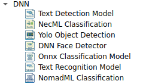
- Text Detection Model:

Text Detection Model
โหนดสำหรับตรวจจับตำแหน่งข้อความในรูปภาพ (Text Localization) โดยใช้โมเดล Deep Learning (DBNet) เพื่อส่งคืนค่าพิกัดกรอบสี่เหลี่ยม (Bounding Box) สำหรับนำไปใช้งานต่อในกระบวนการ OCR
Properties Reference

1. Common Settings
การตั้งค่าพื้นฐานสำหรับการควบคุมการทำงานของโหนด
| Property | Default | คำอธิบาย |
|---|---|---|
| Node | 0 |
คือรหัสประจำตัวของโหนดนี้ ใช้สำหรับอ้างอิงภายในระบบ (เช่น เวลาโปรแกรมบันทึกว่าโหนดไหนต่อกับโหนดไหน) |
| Source | False |
(เช็คบ็อกซ์) มักใช้ระบุว่าโหนดนี้เป็น "ต้นทางข้อมูล" (Source) หรือไม่ ในที่นี้ไม่ได้ติ๊ก แปลว่าโหนดนี้ต้องรับภาพเข้ามาจากโหนดอื่นก่อนจึงจะทำงานได้ |
| Lock Position | False |
ถ้าติ๊กช่องนี้ จะไม่สามารถใช้เมาส์ลากย้ายตำแหน่งกล่องนี้ได้ (ใช้ล็อคตำแหน่งเมื่อจัดหน้าจอเสร็จแล้ว) |
| Enable | True |
เปิด/ปิด การทำงานของโหนด (หากเป็น False จะเป็นการ Bypass ข้อมูล) |
| Minimize | False |
ใช้ย่อเก็บรายละเอียดโหนดให้เหลือแค่ชื่อ (ยุบกล่อง) เพื่อประหยัดพื้นที่หน้าจอ |
| Draw Entries | True |
แสดงจุดเชื่อมต่อ (Ports) บนตัวโหนดในหน้า Editor |
| Show Caption | True |
เลือกให้แสดงชื่อ "Text Dectection Model" บนหัวกล่องหรือไม่ |
| Enable Zenoh | False |
เปิดใช้งานการส่งข้อมูล Output ผ่านโปรโตคอล Zenoh (สำหรับ IoT/Network) |
2. Model Configuration
การตั้งค่าเกี่ยวกับโมเดล AI และความแม่นยำในการตรวจจับ
| Property | Default | คำอธิบาย |
|---|---|---|
| Model Filename | - | (Required) ที่อยู่ไฟล์โมเดล AI (รองรับ .onnx) |
| Binary Threshold | 0.30 |
ค่าความน่าจะเป็นขั้นต่ำ (Probability Map) ที่จะระบุว่าเป็นพิกเซลของตัวอักษร |
| Polygon Threshold | 0.50 |
ค่าความมั่นใจเฉลี่ยของกรอบข้อความ (Box Score) หากต่ำกว่านี้จะถูกตัดทิ้ง |
| Unclip Ratio | 2.00 |
อัตราส่วนการขยายขอบของกรอบข้อความ (Box Expansion) จากผลลัพธ์ของโมเดล |
3. Input Parameters
การจัดการรูปภาพก่อนเข้าสู่กระบวนการประมวลผล
| Property | Default | คำอธิบาย |
|---|---|---|
| Input Size | 736x736 |
ขนาดภาพ (Width x Height) ที่จะ Resize ก่อนส่งเข้าโมเดล แนะนำ: ควรเป็นค่าพหุคูณของ 32 |
| Max Candidate | 200 |
จำนวนกรอบข้อความสูงสุดที่อนุญาตให้แสดงผลต่อ 1 ภาพ |
🛠 Tuning Guide (เทคนิคการปรับจูน)
การปรับค่าพารามิเตอร์เพื่อให้ได้ผลลัพธ์ที่ดีที่สุด ขึ้นอยู่กับลักษณะของรูปภาพหน้างาน
เทคนิค: การปรับค่า Threshold
- หาข้อความไม่เจอ (Undetected): ให้ลอง ลดค่า
Binary Threshold(เช่น 0.2) หรือ เพิ่มInput Size - เจอขยะ/จุดรบกวน (Noise): ให้ เพิ่มค่า
Polygon Threshold(เช่น 0.6) เพื่อกรองเฉพาะจุดที่มั่นใจจริงๆ
ข้อควรระวัง: Unclip Ratio
- หากตั้งค่า Unclip Ratio มากเกินไป กรอบข้อความอาจจะขยายจนไปกินพื้นที่ของบรรทัดอื่น หรือทับซ้อนกัน (Overlapping)
- หากตั้งค่าน้อยเกินไป อาจทำให้ส่วนหางของตัวอักษรขาดหายไปได้
Performance Note
การตั้งค่า Input Size ที่สูงขึ้น (เช่น 1024x1024 ขึ้นไป) จะช่วยให้ตรวจจับตัวอักษรขนาดเล็กได้ดีขึ้น แต่จะแลกมาด้วยการใช้หน่วยความจำ (VRAM) ที่สูงขึ้นและเวลาประมวลผลที่นานขึ้น
- NecML Classification:

NecML Classification คือโหนดสำหรับ "จำแนกประเภทรูปภาพ" (Image Classification) โดยรองรับการโหลดโมเดล Deep Learning และมีฟังก์ชัน Preprocessing (Blob Image) ในตัว เพื่อปรับค่าแสงและสีของภาพให้ตรงกับมาตรฐานที่โมเดลถูกเทรนมา (Normalization)
ตารางการตั้งค่า (Properties)
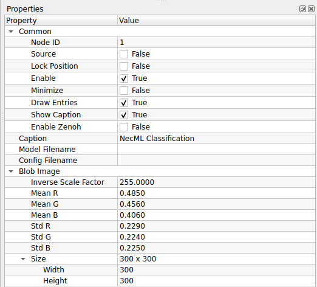
1. Common & Model Config
| Property | Default | คำอธิบาย |
|---|---|---|
| Enable | True |
เปิด/ปิด การทำงานของโหนด |
| Node ID | 1 |
เลขประจำตัวลำดับของโหนด |
| Caption | NecML... |
ชื่อโหนดที่แสดงผล |
| Model Filename | - | (Required) ไฟล์โมเดล AI นามสกุลที่รองรับ (เช่น .onnx, .tflite) |
| Config Filename | - | ไฟล์ตั้งค่าเพิ่มเติมของโมเดล (ถ้ามี) |
2. Blob Image (Preprocessing)
การเตรียมข้อมูลภาพก่อนส่งเข้าโมเดล (สำคัญมาก หากตั้งค่าผิด โมเดลจะทายผิดทันที)
| Property | Default | คำอธิบาย |
|---|---|---|
| Inverse Scale | 255.0 |
ตัวหารค่าสี (Scale Factor) (ปกติใช้ 255 เพื่อแปลงค่าสีจาก 0-255 ให้เป็นช่วง 0.0-1.0) |
| Mean R, G, B | 0.485, 0.456, 0.406 |
ค่าเฉลี่ยสี (Mean) สำหรับลบออกจากภาพต้นฉบับ (ค่า Default นี้คือมาตรฐาน ImageNet) |
| Std R, G, B | 0.229, 0.224, 0.225 |
ค่าเบี่ยงเบนมาตรฐาน (Std) สำหรับนำมาหารค่าสี (ค่า Default นี้คือมาตรฐาน ImageNet) |
| Size (W x H) | 300x300 |
ขนาดภาพที่โมเดลต้องการ (Input Size) ระบบจะย่อ/ขยายภาพให้เป็นขนาดนี้อัตโนมัติ |
เข้าใจค่า Blob Image (Mean & Std)
ค่าตัวเลขทศนิยมที่เห็น (0.485, 0.229 ฯลฯ) คือค่า Standard Normalization ของชุดข้อมูล ImageNet * หากคุณใช้โมเดลสำเร็จรูป (เช่น ResNet, MobileNet, EfficientNet) ที่โหลดมาจากอินเทอร์เน็ต ส่วนใหญ่จะต้องใช้ค่า Default นี้ ห้ามเปลี่ยน * หากคุณเทรนโมเดลเอง (Custom Training) ต้องตั้งค่าเหล่านี้ให้ตรงกับตอนที่คุณเทรนโมเดลมา
ขนาดภาพ (Input Size)
ต้องระบุ Width และ Height ให้ตรงกับที่โมเดลถูกออกแบบมาเป๊ะๆ (เช่น โมเดล EfficientNet-B0 มักใช้ 224x224 หรือ 300x300) หากใส่เลขผิด อาจทำให้โปรแกรม Error หรือผลลัพธ์เพี้ยนได้
- Yolo Object Detection:

Yolo Object Detection คือโหนดสำหรับ "ตรวจจับและระบุตำแหน่งวัตถุ" (Object Detection) โดยใช้อัลกอริทึมตระกูล YOLO (You Only Look Once) ที่มีความรวดเร็วสูง สามารถบอกได้ว่าในภาพมีวัตถุอะไรบ้างและอยู่ที่ตำแหน่งไหน (Bounding Box)
ตารางการตั้งค่า (Properties)
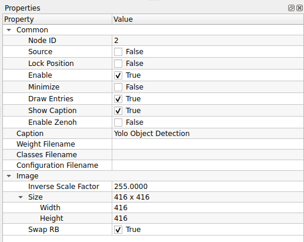
1. Common (การตั้งค่าทั่วไป)
| Property | Default | คำอธิบาย |
|---|---|---|
| Enable | True |
เปิด/ปิด การทำงานของโหนด |
| Node ID | 2 |
เลขประจำตัวลำดับของโหนด |
| Source | False |
โหนดต้นกำเนิดข้อมูล (False = รับภาพจากโหนดอื่น) |
| Lock Position | False |
ล็อกตำแหน่งโหนดบนหน้าจอ |
| Minimize | False |
ย่อขนาดโหนด |
| Draw Entries | True |
แสดงจุดเชื่อมต่อ (Ports) |
| Show Caption | True |
แสดงแถบชื่อโหนด |
| Enable Zenoh | False |
เปิดระบบสื่อสารผ่าน Zenoh |
| Caption | Yolo Object... |
ชื่อโหนดที่แสดงผล |
2. Model Configuration (ไฟล์โมเดล)
ต้องระบุไฟล์ให้ครบทั้ง 3 ส่วนเพื่อให้โมเดลทำงานได้สมบูรณ์
| Property | Default | คำอธิบาย |
|---|---|---|
| Weight Filename | - | (Required) ไฟล์น้ำหนักโมเดลที่ผ่านการเทรนมาแล้ว (เช่น .weights, .onnx) |
| Classes Filename | - | (Required) ไฟล์รายชื่อคลาส (Label) ที่โมเดลรู้จัก (เช่น .names, .txt) |
| Configuration | - | (Required) ไฟล์โครงสร้างโมเดล (เช่น .cfg) สำหรับ Darknet Framework |
3. Image Preprocessing (การเตรียมภาพ)
ตั้งค่าการแปลงภาพให้ตรงกับที่โมเดลถูกเทรนมา (YOLO มักใช้ขนาด 416x416 หรือ 608x608)
| Property | Default | คำอธิบาย |
|---|---|---|
| Inverse Scale | 255.0 |
ตัวหารค่าสีเพื่อทำ Normalization (0-255 -> 0.0-1.0) |
| Size (W x H) | 416x416 |
ขนาดภาพ Input ที่โมเดลต้องการ (YOLOv3/v4 มาตรฐานมักใช้ 416x416) |
| Swap RB | True |
สลับช่องสีแดงและน้ำเงิน (Red-Blue Swapping) (เปลี่ยนจาก BGR เป็น RGB) |
ทำไมต้อง Swap RB = True?
- OpenCV (ไลบรารีที่ใช้รับภาพ) จะอ่านสีแบบ BGR (Blue-Green-Red)
- YOLO (และโมเดลส่วนใหญ่) ถูกเทรนมาด้วยสีแบบ RGB (Red-Green-Blue)
- ดังนั้นเราจึงต้องติ๊ก Swap RB เป็น
Trueเสมอ เพื่อให้สีตรงกัน ไม่งั้นโมเดลจะทายผิด (เช่น เห็นแอปเปิ้ลสีแดงเป็นสีน้ำเงิน)
File Consistency (ความเข้ากันได้ของไฟล์)
ไฟล์ Weight, Classes และ Configuration ต้องเป็นชุดเดียวกันและเวอร์ชันเดียวกันเสมอ (เช่น ถ้าใช้ YOLOv3 ก็ต้องเป็น cfg ของ YOLOv3) หากใช้ไฟล์ข้ามรุ่น โปรแกรมอาจจะ Error หรือปิดตัวเองทันที
- DNN Face Detection:

Yolo Object Detection คือโหนดสำหรับ "ตรวจจับและระบุตำแหน่งวัตถุ" (Object Detection) โดยใช้อัลกอริทึมตระกูล YOLO (You Only Look Once) ที่มีความรวดเร็วสูง สามารถบอกได้ว่าในภาพมีวัตถุอะไรบ้างและอยู่ที่ตำแหน่งไหน (Bounding Box)
ตารางการตั้งค่า (Properties)

1. Common (การตั้งค่าทั่วไป)
| Property | Default | คำอธิบาย |
|---|---|---|
| Enable | True |
เปิด/ปิด การทำงานของโหนด |
| Node ID | 2 |
เลขประจำตัวลำดับของโหนด |
| Source | False |
โหนดต้นกำเนิดข้อมูล (False = รับภาพจากโหนดอื่น) |
| Lock Position | False |
ล็อกตำแหน่งโหนดบนหน้าจอ |
| Minimize | False |
ย่อขนาดโหนด |
| Draw Entries | True |
แสดงจุดเชื่อมต่อ (Ports) |
| Show Caption | True |
แสดงแถบชื่อโหนด |
| Enable Zenoh | False |
เปิดระบบสื่อสารผ่าน Zenoh |
| Caption | Yolo Object... |
ชื่อโหนดที่แสดงผล |
2. Model Configuration (ไฟล์โมเดล)
ต้องระบุไฟล์ให้ครบทั้ง 3 ส่วนเพื่อให้โมเดลทำงานได้สมบูรณ์
| Property | Default | คำอธิบาย |
|---|---|---|
| Weight Filename | - | (Required) ไฟล์น้ำหนักโมเดลที่ผ่านการเทรนมาแล้ว (เช่น .weights, .onnx) |
| Classes Filename | - | (Required) ไฟล์รายชื่อคลาส (Label) ที่โมเดลรู้จัก (เช่น .names, .txt) |
| Configuration | - | (Required) ไฟล์โครงสร้างโมเดล (เช่น .cfg) สำหรับ Darknet Framework |
3. Image Preprocessing (การเตรียมภาพ)
ตั้งค่าการแปลงภาพให้ตรงกับที่โมเดลถูกเทรนมา (YOLO มักใช้ขนาด 416x416 หรือ 608x608)
| Property | Default | คำอธิบาย |
|---|---|---|
| Inverse Scale | 255.0 |
ตัวหารค่าสีเพื่อทำ Normalization (0-255 -> 0.0-1.0) |
| Size (W x H) | 416x416 |
ขนาดภาพ Input ที่โมเดลต้องการ (YOLOv3/v4 มาตรฐานมักใช้ 416x416) |
| Swap RB | True |
สลับช่องสีแดงและน้ำเงิน (Red-Blue Swapping) (เปลี่ยนจาก BGR เป็น RGB) |
ทำไมต้อง Swap RB = True?
- OpenCV (ไลบรารีที่ใช้รับภาพ) จะอ่านสีแบบ BGR (Blue-Green-Red)
- YOLO (และโมเดลส่วนใหญ่) ถูกเทรนมาด้วยสีแบบ RGB (Red-Green-Blue)
- ดังนั้นเราจึงต้องติ๊ก Swap RB เป็น
Trueเสมอ เพื่อให้สีตรงกัน ไม่งั้นโมเดลจะทายผิด (เช่น เห็นแอปเปิ้ลสีแดงเป็นสีน้ำเงิน)
File Consistency (ความเข้ากันได้ของไฟล์)
ไฟล์ Weight, Classes และ Configuration ต้องเป็นชุดเดียวกันและเวอร์ชันเดียวกันเสมอ (เช่น ถ้าใช้ YOLOv3 ก็ต้องเป็น cfg ของ YOLOv3) หากใช้ไฟล์ข้ามรุ่น โปรแกรมอาจจะ Error หรือปิดตัวเองทันที
- Onnx Classification Model:

Onnx Classification Model คือโหนดสำหรับรันโมเดลจำแนกภาพ (Image Classification) ที่อยู่ในรูปแบบมาตรฐาน ONNX (Open Neural Network Exchange) ทำให้สามารถนำโมเดลที่สร้างจากเฟรมเวิร์กต่างๆ (เช่น PyTorch, TensorFlow, MATLAB) มาใช้งานร่วมกันได้
ตารางการตั้งค่า (Properties)

1. Common (การตั้งค่าทั่วไป)
| Property | Default | คำอธิบาย |
|---|---|---|
| Enable | True |
เปิด/ปิด การทำงานของโหนด |
| Node ID | 4 |
เลขประจำตัวลำดับของโหนด |
| Source | False |
โหนดนี้ไม่ใช่ Source (ต้องรับภาพเข้ามาประมวลผล) |
| Lock Position | False |
ล็อกตำแหน่งโหนดบนหน้าจอ |
| Minimize | False |
ย่อขนาดโหนด |
| Draw Entries | True |
แสดงจุดเชื่อมต่อ (Ports) |
| Show Caption | True |
แสดงแถบชื่อโหนด |
| Enable Zenoh | False |
เปิดระบบสื่อสาร Zenoh |
| Caption | Onnx Class... |
ชื่อโหนดที่แสดงผล |
2. Model Configuration (ไฟล์โมเดล)
| Property | Default | คำอธิบาย |
|---|---|---|
| Model Filename | - | (Required) ไฟล์โมเดลนามสกุล .onnx |
| Classes Filename | - | (Required) ไฟล์ Text (.txt) ที่ระบุชื่อคลาส (Label) บรรทัดละ 1 ชื่อ |
3. Blob Image (Preprocessing)
การเตรียมภาพก่อนส่งเข้าโมเดล (Normalization) โดยค่า Default ที่ตั้งมาคือมาตรฐาน ImageNet
| Property | Default | คำอธิบาย |
|---|---|---|
| Inverse Scale | 255.0 |
ตัวหารค่าสีเพื่อแปลงช่วงข้อมูล (จาก 0-255 เป็น 0.0-1.0) |
| Mean R, G, B | 0.485, 0.456, 0.406 |
ค่าเฉลี่ยสี (Mean) สำหรับลบออกจากภาพต้นฉบับ |
| Std R, G, B | 0.229, 0.224, 0.225 |
ค่าเบี่ยงเบนมาตรฐาน (Std) สำหรับนำมาหารค่าสี |
| Size (W x H) | 300x300 |
ขนาดภาพ Input ที่โมเดลต้องการ (ระบบจะ Resize ให้เอง) |
ความยืดหยุ่นของ ONNX
คุณสามารถดาวน์โหลดโมเดลสำเร็จรูปจาก ONNX Model Zoo มาทดลองใช้ได้ทันที แต่สิ่งสำคัญคือ ต้องตั้งค่า Blob Image ให้ตรงกับคู่มือของโมเดลนั้นๆ (บางโมเดลอาจใช้ค่า Mean/Std ไม่เหมือนกัน หรือใช้ Size เป็น 224x224)
Classes Filename
ไฟล์รายชื่อคลาส (Classes) จะต้องเรียงลำดับบรรทัดให้ตรงกับ Output ID ของโมเดลเป๊ะๆ (เช่น บรรทัดที่ 1 คือ Class 0, บรรทัดที่ 2 คือ Class 1) หากเรียงผิด โมเดลจะทายถูกแต่บอกชื่อผิด
- Text Recognition Model:

Text Recognition Model คือโหนดสำหรับ "อ่านตัวอักษร" (Optical Character Recognition - OCR) โดยทำหน้าที่แปลงภาพพื้นที่ข้อความ (ที่มักจะได้มาจากขั้นตอน Text Detection) ให้กลายเป็นข้อความตัวหนังสือ (String) ที่คอมพิวเตอร์สามารถนำไปประมวลผลต่อได้
ตารางการตั้งค่า (Properties)
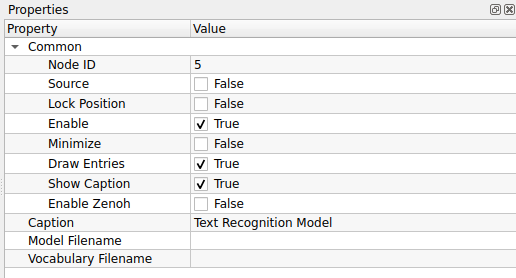
1. Common (การตั้งค่าทั่วไป)
| Property | Default | คำอธิบาย |
|---|---|---|
| Node ID | 5 |
เลขประจำตัวลำดับของโหนด |
| Source | False |
โหนดนี้ไม่ใช่ Source (ต้องรับข้อมูลภาพ/Crop เข้ามาประมวลผล) |
| Lock Position | False |
ล็อกตำแหน่งโหนดบนหน้าจอ |
| Enable | True |
เปิด/ปิด การทำงานของโหนด |
| Minimize | False |
ย่อขนาดโหนด |
| Draw Entries | True |
แสดงจุดเชื่อมต่อ (Ports) |
| Show Caption | True |
แสดงแถบชื่อโหนด |
| Enable Zenoh | False |
เปิดระบบสื่อสาร Zenoh |
| Caption | Text Recog... |
ชื่อโหนดที่แสดงผล |
2. Model Configuration (ไฟล์โมเดล)
ต้องระบุทั้งตัวโมเดลและไฟล์พจนานุกรมภาษาให้สอดคล้องกัน
| Property | Default | คำอธิบาย |
|---|---|---|
| Model Filename | - | (Required) ไฟล์โมเดล AI สำหรับอ่านตัวอักษร (เช่น .onnx) |
| Vocabulary Filename | - | (Required) ไฟล์ Text (.txt) ที่ระบุชุดตัวอักษร (Character Set) ที่โมเดลนี้รู้จัก (ต้องเป็นไฟล์ที่มาคู่กับโมเดลเสมอ) |
Detection vs Recognition (ต่างกันอย่างไร?)
- Text Detection: ทำหน้าที่แค่ "หา" ว่าข้อความอยู่ตรงไหน (ได้ผลลัพธ์เป็นกรอบสี่เหลี่ยม)
- Text Recognition: ทำหน้าที่ "อ่าน" ว่าในกรอบนั้นเขียนว่าอะไร (ได้ผลลัพธ์เป็นตัวหนังสือ)
- ในการใช้งานจริง มักจะต้องต่อโหนด Detection ก่อน แล้วส่งผลลัพธ์มาให้โหนด Recognition
ความสำคัญของ Vocabulary File
Vocabulary File เปรียบเสมือน "ดัชนี" ของโมเดล ถ้าคุณใช้โมเดลอ่านภาษาไทย แต่ไปใส่ Vocabulary ของภาษาอังกฤษ ผลลัพธ์ที่ได้จะเป็นภาษาต่างดาวหรืออ่านไม่ออกเลย ต้องใช้ไฟล์ที่มาคู่กับโมเดลเท่านั้น
- NomadML Classification:

NomadML Classification คือโหนดสำหรับรันโมเดลจำแนกภาพ (Image Classification) ที่ได้รับการปรับแต่งหรือฝึกสอนผ่านแพลตฟอร์ม NomadML รองรับการตั้งค่า Preprocessing แบบละเอียดเพื่อให้สอดคล้องกับโมเดลที่ใช้งาน
ตารางการตั้งค่า (Properties)

1. Common (การตั้งค่าทั่วไป)
| Property | Default | คำอธิบาย |
|---|---|---|
| Enable | True |
เปิด/ปิด การทำงานของโหนด |
| Node ID | 6 |
เลขประจำตัวลำดับของโหนด |
| Source | False |
โหนดนี้ไม่ใช่ Source (รับภาพจากโหนดอื่น) |
| Lock Position | False |
ล็อกตำแหน่งโหนด |
| Minimize | False |
ย่อขนาดโหนด |
| Draw Entries | True |
แสดงจุดเชื่อมต่อ (Ports) |
| Show Caption | True |
แสดงแถบชื่อโหนด |
| Enable Zenoh | False |
เปิดระบบสื่อสาร Zenoh |
| Caption | NomadML... |
ชื่อโหนดที่แสดงผล |
2. Model Configuration (ไฟล์โมเดล)
| Property | Default | คำอธิบาย |
|---|---|---|
| Model Filename | - | (Required) ไฟล์โมเดลที่ได้จากการ Export (เช่น .onnx, .tflite) |
| Config Filename | - | ไฟล์การตั้งค่าโมเดลเพิ่มเติม (ถ้ามี) เช่น ไฟล์ JSON หรือ YAML |
3. Blob Image (Preprocessing)
ชุดค่ามาตรฐานสำหรับการเตรียมภาพ (ค่า Default เป็นมาตรฐาน ImageNet)
| Property | Default | คำอธิบาย |
|---|---|---|
| Inverse Scale | 255.0 |
ตัวหารค่าสี (Normalization Factor) |
| Mean R, G, B | 0.485, 0.456, 0.406 |
ค่าเฉลี่ยสี (Mean) สำหรับลบออกจากภาพต้นฉบับ |
| Std R, G, B | 0.229, 0.224, 0.225 |
ค่าเบี่ยงเบนมาตรฐาน (Std) สำหรับหารค่าสี |
| Size (W x H) | 300x300 |
ขนาดภาพ Input ที่โมเดลต้องการระบบจะ Resize ให้เองอัตโนมัติ |
NomadML Workflow
หากคุณใช้โมเดลจาก NomadML ตรวจสอบให้แน่ใจว่าได้ตั้งค่า Size (Width/Height) ให้ตรงกับตอนที่ตั้งค่าโปรเจกต์เทรนโมเดล (Training Config) เพื่อให้ความแม่นยำสูงสุด
Standard Normalization
ค่า Mean และ Std ที่ตั้งมาให้ เป็นค่ามาตรฐานของ ImageNet ซึ่งโมเดลส่วนใหญ่ในปัจจุบัน (เช่น MobileNetV2, ResNet50) มักจะใช้ค่าชุดนี้ หากโมเดลของคุณเทรนมาด้วยค่าอื่น ให้แก้ไขตัวเลขตรงนี้ให้ตรงกัน
3. GPL

- MQTT Publisher:

NomadML Classification คือโหนดสำหรับรันโมเดลจำแนกภาพ (Image Classification) ที่ได้รับการปรับแต่งหรือฝึกสอนผ่านแพลตฟอร์ม NomadML รองรับการตั้งค่า Preprocessing แบบละเอียดเพื่อให้สอดคล้องกับโมเดลที่ใช้งาน
ตารางการตั้งค่า (Properties)

1. Common (การตั้งค่าทั่วไป)
| Property | Default | คำอธิบาย |
|---|---|---|
| Enable | True |
เปิด/ปิด การทำงานของโหนด |
| Node ID | 6 |
เลขประจำตัวลำดับของโหนด |
| Source | False |
โหนดนี้ไม่ใช่ Source (รับภาพจากโหนดอื่น) |
| Lock Position | False |
ล็อกตำแหน่งโหนด |
| Minimize | False |
ย่อขนาดโหนด |
| Draw Entries | True |
แสดงจุดเชื่อมต่อ (Ports) |
| Show Caption | True |
แสดงแถบชื่อโหนด |
| Enable Zenoh | False |
เปิดระบบสื่อสาร Zenoh |
| Caption | NomadML... |
ชื่อโหนดที่แสดงผล |
2. Model Configuration (ไฟล์โมเดล)
| Property | Default | คำอธิบาย |
|---|---|---|
| Model Filename | - | (Required) ไฟล์โมเดลที่ได้จากการ Export (เช่น .onnx, .tflite) |
| Config Filename | - | ไฟล์การตั้งค่าโมเดลเพิ่มเติม (ถ้ามี) เช่น ไฟล์ JSON หรือ YAML |
3. Blob Image (Preprocessing)
ชุดค่ามาตรฐานสำหรับการเตรียมภาพ (ค่า Default เป็นมาตรฐาน ImageNet)
| Property | Default | คำอธิบาย |
|---|---|---|
| Inverse Scale | 255.0 |
ตัวหารค่าสี (Normalization Factor) |
| Mean R, G, B | 0.485, 0.456, 0.406 |
ค่าเฉลี่ยสี (Mean) สำหรับลบออกจากภาพต้นฉบับ |
| Std R, G, B | 0.229, 0.224, 0.225 |
ค่าเบี่ยงเบนมาตรฐาน (Std) สำหรับหารค่าสี |
| Size (W x H) | 300x300 |
ขนาดภาพ Input ที่โมเดลต้องการระบบจะ Resize ให้เองอัตโนมัติ |
NomadML Workflow
หากคุณใช้โมเดลจาก NomadML ตรวจสอบให้แน่ใจว่าได้ตั้งค่า Size (Width/Height) ให้ตรงกับตอนที่ตั้งค่าโปรเจกต์เทรนโมเดล (Training Config) เพื่อให้ความแม่นยำสูงสุด
Standard Normalization
ค่า Mean และ Std ที่ตั้งมาให้ เป็นค่ามาตรฐานของ ImageNet ซึ่งโมเดลส่วนใหญ่ในปัจจุบัน (เช่น MobileNetV2, ResNet50) มักจะใช้ค่าชุดนี้ หากโมเดลของคุณเทรนมาด้วยค่าอื่น ให้แก้ไขตัวเลขตรงนี้ให้ตรงกัน
- MQTT Subsciber:
MQTT Subscriber คือโหนดสำหรับ "รับข้อมูล" จากอุปกรณ์อื่นผ่านโปรโตคอล MQTT (Message Queuing Telemetry Transport) โดยโหนดนี้จะเชื่อมต่อกับตัวกลาง (Broker) และรอฟังข้อมูลจากหัวข้อ (Topic) ที่กำหนด
ตารางการตั้งค่า (Properties)
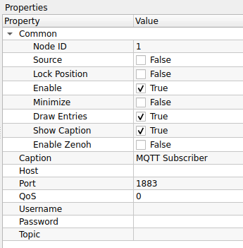
1. Common (การตั้งค่าทั่วไป)
| Property | Default | คำอธิบาย |
|---|---|---|
| Enable | True |
เปิด/ปิด การทำงานของโหนด |
| Node ID | 1 |
เลขประจำตัวลำดับของโหนด |
| Source | False |
(False = ถือเป็นโหนดรับข้อมูล ไม่ใช่ต้นกำเนิดสัญญาณภาพ) |
| Draw Entries | True |
แสดงจุดเชื่อมต่อ (Ports) |
| Show Caption | True |
แสดงแถบชื่อโหนด |
| Enable Zenoh | False |
เปิดระบบสื่อสาร Zenoh |
| Caption | MQTT Sub... |
ชื่อโหนดที่แสดงผล |
2. Connection Settings (การเชื่อมต่อ)
ตั้งค่าเพื่อเชื่อมต่อไปยัง MQTT Broker (เซิร์ฟเวอร์ตัวกลาง)
| Property | Default | คำอธิบาย |
|---|---|---|
| Host | - | (Required) ที่อยู่ IP หรือ Domain Name ของ Broker (เช่น localhost, 192.168.1.50, broker.emqx.io) |
| Port | 1883 |
พอร์ตสำหรับการเชื่อมต่อ (ปกติ 1883 สำหรับ Non-SSL และ 8883 สำหรับ SSL) |
| Username | - | ชื่อผู้ใช้ (หาก Broker ตั้งค่าล็อครหัสผ่านไว้) |
| Password | - | รหัสผ่าน (หาก Broker ตั้งค่าล็อครหัสผ่านไว้) |
3. Subscription (การรับข้อมูล)
ระบุหัวข้อที่ต้องการดักฟังข้อมูล
| Property | Default | คำอธิบาย |
|---|---|---|
| Topic | - | (Required) หัวข้อข่าวสารที่ต้องการรับ (เช่น factory/machine1/temp) |
| QoS | 0 |
ระดับคุณภาพการส่งข้อมูล (Quality of Service) (ดูคำอธิบายด้านล่าง) |
ความหมายของ Topic Wildcards
คุณสามารถใช้สัญลักษณ์พิเศษเพื่อรับข้อมูลหลายหัวข้อพร้อมกันได้:
* + (Plus): แทนที่ 1 ระดับชั้น (เช่น sensors/+/temp จะรับทั้ง sensors/bed/temp และ sensors/kitchen/temp)
* # (Hash): แทนที่ทุกระดับชั้นที่เหลือ (เช่น sensors/# จะรับทุกอย่างที่ขึ้นต้นด้วย sensors)
ระดับ QoS (Quality of Service)
- 0 (At most once): ส่งแล้วจบกัน ไม่มีการยืนยัน (เร็วสุด แต่อาจมีข้อมูลหาย)
- 1 (At least once): รับประกันว่าข้อมูลถึงปลายทางแน่นอน (แต่อาจได้รับซ้ำ)
- 2 (Exactly once): รับประกันว่าข้อมูลถึงปลายทาง 1 ครั้งถ้วน (ช้าที่สุด แต่แม่นยำที่สุด)
4. GUI (Graphical User Interface)
เครื่องมือสำหรับสร้างส่วนติดต่อผู้ใช้บนหน้าจอ เพื่อปรับค่าต่างๆ ได้ทันที

- Push Button:

Push Button คือโหนดสำหรับสร้าง "ปุ่มกด" (Interactive Button) บนหน้าจอ Dashboard เพื่อให้ผู้ใช้งานสามารถคลิกเพื่อส่งสัญญาณ Trigger หรือส่งค่าตัวเลข (Integer) ออกไปควบคุมการทำงานของโหนดอื่นๆ ได้
ตารางการตั้งค่า (Properties)

1. Common (การตั้งค่าทั่วไป)
| Property | Default | คำอธิบาย |
|---|---|---|
| Node ID | 1 |
เลขประจำตัวลำดับของโหนด |
| Source | True |
(สำคัญ) โหนดนี้เป็น Source (ต้นกำเนิดสัญญาณ) |
| Lock Position | False |
ล็อกตำแหน่งโหนดบนหน้าจอ |
| Enable | True |
เปิด/ปิด การทำงานของโหนด |
| Minimize | False |
ย่อขนาดโหนด |
| Draw Entries | True |
แสดงจุดเชื่อมต่อ (Ports) |
| Show Caption | True |
แสดงแถบชื่อโหนด |
| Enable Zenoh | False |
เปิดระบบสื่อสาร Zenoh |
| Caption | Push Button |
ชื่อโหนดที่แสดงผล |
2. Button Configuration (ตั้งค่าปุ่ม)
| Property | Default | คำอธิบาย |
|---|---|---|
| Label | OK |
ข้อความที่ปรากฏบนปุ่มกด (เช่น Start, Stop, Reset) |
| Font Size | 12 |
ขนาดตัวอักษรของ Label |
| Checkable | False |
กำหนดพฤติกรรมของปุ่ม (False = ปุ่มกดเด้งปกติ, True = ปุ่มกดค้างแบบสวิตช์ On/Off) |
| Int Out | 0 |
ค่าตัวเลขจำนวนเต็ม (Integer) ที่จะส่งออกมาเมื่อปุ่มถูกกด |
Checkable: True vs False
- False (Momentary): ทำงานเหมือนกริ่งประตู กดแล้วปล่อย สัญญาณจะส่งออกมาแค่จังหวะเดียว เหมาะสำหรับปุ่ม Trigger หรือ Reset
- True (Toggle): ทำงานเหมือนสวิตช์ไฟ กดแล้วปุ่มจะบุ๋มลงไป (On) กดอีกทีจะเด้งคืน (Off) เหมาะสำหรับปุ่ม Start/Stop เครื่องจักร
Int Out Usage
ค่า Int Out มีประโยชน์มากเมื่อคุณนำปุ่มหลายๆ ปุ่มไปต่อเข้ากับ Logic Condition เช่น:
* ปุ่ม A ตั้ง Int Out = 1 (สั่งเปิดไฟ)
* ปุ่ม B ตั้ง Int Out = 0 (สั่งปิดไฟ)
- LCD Number:

LCD Number คือโหนดสำหรับ "แสดงค่าตัวเลข" ในรูปแบบหน้าจอ LCD (7-Segment Display) เหมือนเครื่องคิดเลขหรือนาฬิกาดิจิตอล เหมาะสำหรับใช้แสดงผลลัพธ์ที่เป็นตัวเลขจำนวนเต็มหรือทศนิยมบนหน้า Dashboard ให้ดูโดดเด่นและอ่านง่าย
ตารางการตั้งค่า (Properties)

1. Common (การตั้งค่าทั่วไป)
| Property | Default | คำอธิบาย |
|---|---|---|
| Node ID | 2 |
เลขประจำตัวลำดับของโหนด |
| Source | False |
โหนดนี้ไม่ใช่ Source (ต้องรับค่าตัวเลขเข้ามาแสดงผล) |
| Lock Position | False |
ล็อกตำแหน่งโหนดบนหน้าจอ |
| Enable | True |
เปิด/ปิด การทำงานของโหนด |
| Minimize | False |
ย่อขนาดโหนด |
| Draw Entries | True |
แสดงจุดเชื่อมต่อ (Ports) |
| Show Caption | True |
แสดงแถบชื่อโหนด |
| Enable Zenoh | False |
เปิดระบบสื่อสาร Zenoh |
| Caption | LCD Number |
ชื่อโหนดที่แสดงผล |
2. Display Configuration (การแสดงผล)
| Property | Default | คำอธิบาย |
|---|---|---|
| Digit Count | 5 |
จำนวนหลักของตัวเลขสูงสุดที่ต้องการแสดงบนหน้าจอ (รวมจุดทศนิยมและเครื่องหมายลบด้วย) |
การกำหนดค่า Digit Count
ควรตั้งค่า Digit Count ให้ครอบคลุมจำนวนหลักสูงสุดที่คาดว่าจะเกิดขึ้น
* ตัวอย่าง: ถ้าต้องการแสดงค่า 123.45 คุณต้องเผื่อที่ไว้อย่างน้อย 6 หลัก (3 หลักหน้า + 1 จุดทศนิยม + 2 หลักหลัง)
* หากตั้งค่าน้อยเกินไป ตัวเลขอาจจะถูกตัด หรือแสดงผลผิดเพี้ยนได้
การใช้งานร่วมกับโหนดอื่น
โหนดนี้ออกแบบมาเพื่อรับค่า Integer (จำนวนเต็ม) หรือ Float (ทศนิยม) จากโหนดคำนวณต่างๆ (เช่น โหนดนับจำนวนวัตถุ, โหนดวัดขนาด, หรือค่า Score จาก AI) มาแสดงผลให้ผู้ใช้งานเห็นได้ทันที
- Activate all Nodes:

Activate all Nodes คือโหนดคำสั่งพิเศษ (System Action) ที่ทำหน้าที่ "สั่งเปิดการทำงาน (Enable) ของโหนดทุกตัวในโปรเจกต์" ทันทีที่ได้รับสัญญาณ Trigger นิยมนำมาต่อพ่วงกับปุ่มกดเพื่อทำฟังก์ชัน "Start System" หรือ "Reset System"
ตารางการตั้งค่า (Properties)

1. Common (การตั้งค่าทั่วไป)
| Property | Default | คำอธิบาย |
|---|---|---|
| Node ID | 3 |
เลขประจำตัวลำดับของโหนด |
| Source | False |
โหนดนี้ไม่ใช่ Source (ต้องรับสัญญาณ Trigger มาจากโหนดอื่น เช่น ปุ่มกด) |
| Lock Position | False |
ล็อกตำแหน่งโหนด |
| Enable | True |
เปิด/ปิด การทำงานของโหนด |
| Minimize | False |
ย่อขนาดโหนด |
| Draw Entries | True |
แสดงจุดเชื่อมต่อ (Ports) |
| Show Caption | True |
แสดงแถบชื่อโหนด |
| Enable Zenoh | False |
เปิดระบบสื่อสาร Zenoh |
| Caption | Activate... |
ชื่อโหนดที่แสดงผล |
2. Display Configuration (การแสดงผล)
| Property | Default | คำอธิบาย |
|---|---|---|
| Label | Enable All... |
ข้อความที่จะแสดงบนตัวโหนดเพื่อบอกสถานะหรือหน้าที่ |
| Font Size | 12 |
ขนาดตัวอักษรของ Label |
วิธีการใช้งาน (Usage Workflow)
โหนดนี้มักจะไม่ทำงานด้วยตัวคนเดียว (เพราะ Source = False) แต่จะถูกใช้ร่วมกับ Push Button ดังนี้: 1. สร้างโหนด Push Button (ตั้งชื่อว่า Start) 2. ลากสายจาก Push Button มาเข้าที่ Activate all Nodes 3. เมื่อผู้ใช้กดปุ่ม Start -> สัญญาณจะวิ่งมาที่โหนดนี้ -> โหนดนี้จะสั่ง Enable = True ให้กับทุกโหนดในระบบทันที
ทำไมต้องมีโหนดนี้?
ในการทำงานจริง เราอาจจะตั้งค่าโหนดบางตัวเป็น Enable = False (ปิดไว้ก่อน) เพื่อไม่ให้ระบบทำงานทันทีที่เปิดโปรแกรม
โหนดนี้จึงทำหน้าที่เหมือนกุญแจสตาร์ทรถ ที่รอคำสั่งจากผู้ใช้แล้วค่อยปลุกระบบทั้งหมดให้ตื่นพร้อมกัน
- Display Text:

Display Text คือโหนดสำหรับการแสดงผล (Visualization) ที่ทำหน้าที่ "แสดงข้อความ (String) หรือค่าตัวเลข" บนหน้าจอ GUI ของโหนดโดยตรง ใช้สำหรับตรวจสอบความถูกต้องของข้อมูล (Monitor), ดูผลลัพธ์การทำงาน หรือสร้างป้ายกำกับ (Label) ในระบบ Flow
ตารางการตั้งค่า (Properties)

1. Common (การตั้งค่าทั่วไป)
| Property | Default | คำอธิบาย |
|---|---|---|
| Node ID | 4 |
เลขประจำตัวลำดับของโหนด |
| Source | False |
โหนดนี้ไม่ใช่ Source (ต้องรับข้อมูลจากโหนดอื่นเข้ามาแสดงผล) |
| Lock Position | False |
ล็อกตำแหน่งโหนดไม่ให้ขยับ |
| Enable | True |
เปิด/ปิด การทำงานของโหนด |
| Minimize | False |
ย่อขนาดโหนดให้เล็กลง |
| Draw Entries | True |
แสดงจุดเชื่อมต่อ (Ports) |
| Show Caption | True |
แสดงแถบชื่อโหนดด้านบน |
| Enable Zenoh | False |
เปิดระบบสื่อสาร Zenoh (สำหรับการส่งข้อมูลข้าม Network) |
| Caption | Display Text |
ชื่อโหนดที่แสดงผลบริเวณส่วนหัว |
2. Style & Configuration (รูปแบบและการตั้งค่า)
| Property | Default | คำอธิบาย |
|---|---|---|
| Font | Arial |
รูปแบบฟอนต์ของข้อความที่แสดง |
| Size | 12 |
ขนาดของตัวอักษร |
| Alignment | Left |
การจัดตำแหน่งข้อความ (Left / Center / Right) |
| Number of Input Ports | 1 |
จำนวนช่องรับสัญญาณอินพุต (สำหรับรับข้อความมาแสดง) |
3. Color Settings (การตั้งค่าสี)
| Property | Default (R,G,B) | คำอธิบาย |
|---|---|---|
| Text Color | 0, 0, 0 |
สีของตัวอักษร (ค่าเริ่มต้น: สีดำ) |
| Background Color | 255, 255, 255 |
สีพื้นหลังของพื้นที่แสดงข้อความ (ค่าเริ่มต้น: สีขาว) |
วิธีการใช้งาน (Usage Workflow)
โหนดนี้มักจะอยู่ท้ายสุดของ Flow ย่อย เพื่อใช้เป็นจุดสังเกตการณ์ (Observer): 1. เตรียมโหนดที่มีข้อมูลขาออกเป็นข้อความ หรือตัวเลข (เช่น Counter, Read Barcode, หรือ String Constant) 2. ลากสายจาก Output ของโหนดเหล่านั้น มาเข้าที่ Input ของ Display Text 3. ข้อความจะปรากฏขึ้นบนตัวโหนดทันทีที่ได้รับข้อมูล (Real-time update)
ประโยชน์การใช้งาน (Use Case)
- Debugging: ใช้ดูค่าตัวแปรต่างๆ ในระบบว่าส่งมาถูกต้องหรือไม่ระหว่างการพัฒนา
- Dashboard: ใช้จัดวางหน้าจอ UI อย่างง่าย เพื่อแสดงสถานะระบบให้ผู้ใช้เห็น เช่น ข้อความ "PASS", "FAIL" หรือแสดงค่าจำนวนนับ (Count)
- Labeling: สามารถใช้โหนดนี้โดยไม่ต้องต่อสาย Input เพื่อพิมพ์ข้อความค้างไว้ (Static Text) สำหรับเป็นคำอธิบายหรือหัวข้อในหน้า Workspace
5. Image Analysis (การวิเคราะห์ภาพ)
เครื่องมือสำหรับดึงข้อมูลเชิงสถิติหรือคุณลักษณะออกจากภาพ

- CV Create Histogram:

CV Create Histogram คือโหนดสำหรับการวิเคราะห์ภาพ (Image Analysis) ทำหน้าที่ "คำนวณและวาดกราฟฮิสโตแกรม" เพื่อแสดงการกระจายตัวของค่าความเข้มแสง (Intensity) หรือสี (R, G, B) ในภาพ ช่วยให้ผู้ใช้สามารถตรวจสอบคุณภาพของแสง, คอนทราสต์ (Contrast) หรือสมดุลสี (Color Balance) ของภาพอินพุตได้
ตารางการตั้งค่า (Properties)
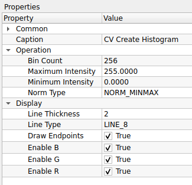
1. Common (การตั้งค่าทั่วไป)
| Property | Default | คำอธิบาย |
|---|---|---|
| Caption | CV Create Histogram |
ชื่อโหนดที่แสดงผลบน Workspace |
2. Operation (การตั้งค่าการคำนวณ)
| Property | Default | คำอธิบาย |
|---|---|---|
| Bin Count | 256 |
ความละเอียดของกราฟ (จำนวนแท่งกราฟ) ปกติใช้ 256 สำหรับภาพ 8-bit |
| Maximum Intensity | 255.0000 |
ค่าความเข้มแสงสูงสุดที่จะนำมาคำนวณ |
| Minimum Intensity | 0.0000 |
ค่าความเข้มแสงต่ำสุดที่จะนำมาคำนวณ |
| Norm Type | NORM_MINMAX |
วิธีการปรับสเกลข้อมูล (Normalization) เพื่อให้กราฟแสดงผลได้เหมาะสม - NORM_MINMAX: ปรับยืดกราฟให้เต็มความสูง (นิยมใช้ที่สุด) - NORM_L1/L2: ปรับตามผลรวมทางคณิตศาสตร์ |
3. Display (การตั้งค่าการแสดงผลกราฟ)
| Property | Default | คำอธิบาย |
|---|---|---|
| Line Thickness | 2 |
ความหนาของเส้นกราฟ (Pixel) |
| Line Type | LINE_8 |
อัลกอริทึมการวาดเส้น (LINE_8 คือเส้นต่อเนื่องแบบ 8-connected) |
| Draw Endpoints | True |
ลากเส้นเชื่อมจุดเริ่มต้นและจุดสิ้นสุดของกราฟหรือไม่ |
| Enable B | True |
แสดงกราฟของช่องสัญญาณสีน้ำเงิน (Blue Channel) |
| Enable G | True |
แสดงกราฟของช่องสัญญาณสีเขียว (Green Channel) |
| Enable R | True |
แสดงกราฟของช่องสัญญาณสีแดง (Red Channel) |
วิธีการใช้งาน (Usage Workflow)
โหนดนี้มักใช้ในการ Pre-processing หรือ Monitor ระบบ: 1. รับภาพจากโหนด Read Image หรือกล้อง 2. ส่งเข้าโหนด CV Create Histogram 3. ผลลัพธ์ (Output) จะเป็นภาพกราฟฮิสโตแกรม สามารถต่อเข้ากับ Display Image เพื่อดูผลได้ทันที
เกร็ดความรู้: Normalization Type
ใน Property Norm Type การเลือก NORM_MINMAX (ค่าเริ่มต้น) คือตัวเลือกที่ดีที่สุดสำหรับการแสดงผล เพราะระบบจะปรับสเกลยอดกราฟที่สูงที่สุดให้พอดีกับกรอบภาพ ทำให้เราเห็นรูปทรงของกราฟได้ชัดเจน ไม่ล้นจอหรือเตี้ยเกินไป
เจาะลึก: Norm Type (การปรับสเกล)
การคำนวณ Histogram แบบดิบๆ อาจได้ค่าจำนวน Pixel สูงถึงหลักหมื่นหรือแสน ซึ่งยากต่อการนำมาวาดกราฟในกรอบสี่เหลี่ยมเล็กๆ เราจึงต้องมี Normalization เพื่อบีบอัดข้อมูลลงมา
- NORM_MINMAX (แนะนำสำหรับดูด้วยตา): ระบบจะหาค่าที่สูงที่สุดในกราฟ แล้วปรับให้ค่านั้นเท่ากับความสูงสูงสุดของหน้าต่างแสดงผล (เช่น 100% ของความสูง) ทำให้กราฟดู "เต็มจอ" สวยงามและวิเคราะห์รูปทรงได้ง่ายที่สุด
- NORM_L1 (ผลรวม): ปรับสเกลโดยอิงจาก "ผลรวมของค่าทั้งหมด" (Sum of absolute values) มักใช้ในงานทางคณิตศาสตร์หรือความน่าจะเป็น (Probability Density Function)
- NORM_L2 (Euclidean): ปรับสเกลโดยอิงจากรากที่สองของผลรวมกำลังสอง
- NORM_INF (Infinity): ปรับโดยอิงจากค่าสัมบูรณ์ที่มากที่สุด (คล้าย MinMax ในบางบริบท)
- CV MinMax Location:

CV MinMax Location คือโหนดสำหรับการวิเคราะห์ภาพ (Image Analysis) ทำหน้าที่ "ค้นหาค่าความเข้มแสงต่ำสุด (Min) และสูงสุด (Max) พร้อมระบุพิกัด (X, Y) ของจุดนั้นๆ" ภายในภาพอินพุต ช่วยให้ทราบตำแหน่งของวัตถุที่มีความสว่างโดดเด่น หรือใช้หาตำแหน่งที่ตรงกันที่สุดเมื่อใช้งานร่วมกับโหนด Template Matching
ตารางการตั้งค่า (Properties)

1. Common (การตั้งค่าทั่วไป)
| Property | Default | คำอธิบาย |
|---|---|---|
| Node ID | 1 |
เลขประจำตัวลำดับของโหนด |
| Source | False |
โหนดนี้ไม่ใช่ Source (ต้องรับภาพ Input เข้ามา) |
| Lock Position | False |
ล็อกตำแหน่งโหนด |
| Enable | True |
เปิด/ปิด การทำงานของโหนด |
| Minimize | False |
ย่อขนาดโหนด |
| Draw Entries | True |
แสดงจุดเชื่อมต่อ (Ports) |
| Show Caption | True |
แสดงแถบชื่อโหนด |
| Enable Zenoh | False |
เปิดระบบสื่อสาร Zenoh |
| Caption | CV MinMax Location |
ชื่อโหนดที่แสดงผลบน Workspace |
วิธีการใช้งาน (Usage Workflow)
โหนดนี้ทำงานกับภาพระดับสีเทา (Grayscale Image) ได้ดีที่สุด: 1. Input: ส่งภาพเข้าสู่โหนด (หากเป็นภาพสี แนะนำให้แปลงเป็น Grayscale ก่อน) 2. Processing: โหนดจะสแกนทั้งภาพเพื่อหา pixel ที่มีค่าน้อยสุดและมากสุด 3. Output: ส่งค่าออกมา 4 อย่างหลักๆ คือ: * Min Val: ค่าความเข้มแสงต่ำสุด (เช่น 0) * Max Val: ค่าความเข้มแสงสูงสุด (เช่น 255) * Min Loc: พิกัด (x, y) ของจุดที่มืดที่สุด * Max Loc: พิกัด (x, y) ของจุดที่สว่างที่สุด
ตัวอย่างการประยุกต์ใช้ (Use Case)
- Hotspot Detection: หาตำแหน่งของไฟ LED หรือจุดเลเซอร์ที่สว่างที่สุดในภาพ (ดูค่า Max Loc)
- Template Matching: เมื่อใช้โหนด Match Template ผลลัพธ์ที่ได้จะเป็น heatmap ซึ่งต้องส่งต่อมาที่ CV MinMax Location เพื่อหาพิกัดคำตอบ (จุดที่ Match ที่สุดคือจุดที่มีค่า Max หรือ Min สูงสุด ขึ้นอยู่กับอัลกอริทึม)
- CV Color Map:

CV Color Map คือโหนดสำหรับการประมวลผลภาพ (Image Processing) ทำหน้าที่ "ใส่เฉดสี (False Color) ให้กับภาพขาวดำ" โดยการแทนค่าความเข้มแสง (Intensity) ด้วยสีสันต่างๆ ตามตารางสี (Color Map) ที่กำหนด นิยมใช้เพื่อทำให้ตามนุษย์แยกแยะรายละเอียดของข้อมูลได้ง่ายขึ้น เช่น ภาพถ่ายความร้อน (Thermal), ภาพความลึก (Depth Map) หรือภาพการแพทย์
ตารางการตั้งค่า (Properties)

1. Common (การตั้งค่าทั่วไป)
| Property | Default | คำอธิบาย |
|---|---|---|
| Node ID | 2 |
เลขประจำตัวลำดับของโหนด |
| Source | False |
โหนดนี้ไม่ใช่ Source (ต้องรับภาพ Input เข้ามา) |
| Lock Position | False |
ล็อกตำแหน่งโหนด |
| Enable | True |
เปิด/ปิด การทำงานของโหนด |
| Minimize | False |
ย่อขนาดโหนด |
| Draw Entries | True |
แสดงจุดเชื่อมต่อ (Ports) |
| Show Caption | True |
แสดงแถบชื่อโหนด |
| Enable Zenoh | False |
เปิดระบบสื่อสาร Zenoh |
| Caption | CV Color Map |
ชื่อโหนดที่แสดงผลบน Workspace |
2. Operation (การตั้งค่าการทำงาน)
| Property | Default | คำอธิบาย |
|---|---|---|
| Color Map | COLORMAP_JET |
รูปแบบโทนสีที่ต้องการใช้ (ดูรายชื่อทั้งหมดด้านล่าง) |
รายชื่อรูปแบบสี (Available Color Maps)
สามารถเลือกโทนสีให้เหมาะกับงานได้ดังนี้:
-
กลุ่มยอดนิยม (General Purpose):
COLORMAP_JET: (ค่าเริ่มต้น) ไล่สีรุ้ง (น้ำเงิน->แดง) คอนทราสต์สูง นิยมใช้ที่สุดCOLORMAP_TURBO: คล้าย Jet แต่ไล่โทนสีเนียนตากว่า และแม่นยำกว่าทางสายตาCOLORMAP_HSV: ไล่สีตามวงล้อสี HSV
-
กลุ่มโทนร้อน/ความเข้ม (Heat/Intensity):
COLORMAP_HOT: ดำ->แดง->เหลือง->ขาว (เหมือนเหล็กเผาไฟ)COLORMAP_INFERNO,COLORMAP_MAGMA,COLORMAP_PLASMA: โทนดำ-ม่วง-ส้ม-เหลือง ให้ความรู้สึกทันสมัยและอ่านค่าง่ายCOLORMAP_AUTUMN: แดง->เหลือง (โทนฤดูใบไม้ร่วง)
-
กลุ่มโทนเย็น (Cool Tones):
COLORMAP_OCEAN: สีน้ำเงินเข้ม->ขาว (เหมือนมหาสมุทร)COLORMAP_WINTER: น้ำเงิน->เขียว (โทนฤดูหนาว)COLORMAP_COOL: ฟ้า->ชมพูCOLORMAP_TWILIGHT: โทนสีม่วง-น้ำเงิน ช่วงพลบค่ำ
-
กลุ่มอื่นๆ (Others):
COLORMAP_BONE: สีเทาอมฟ้า (นิยมใช้ในภาพ X-Ray การแพทย์)COLORMAP_SPRING,COLORMAP_SUMMER: โทนสีตามฤดูกาลCOLORMAP_PINK: ไล่สีโทน sepia-pinkCOLORMAP_PARULA,COLORMAP_CIVIDIS: โทนสีมาตรฐานงานวิจัย (Perceptually Uniform)
วิธีการใช้งาน (Usage Workflow)
- Input: เตรียมภาพที่เป็น Grayscale (ภาพขาวดำ) เช่น ภาพจากกล้อง Depth Camera หรือภาพที่ผ่านการคำนวณมาแล้ว
- Process: ต่อสายเข้าโหนด CV Color Map และเลือกรูปแบบสีที่ต้องการ
- Output: จะได้ภาพสี RGB ที่พร้อมนำไปแสดงผลที่ Display Image
6. Image Conversion (การแปลงรูปแบบภาพ)
ใช้สำหรับเปลี่ยนประเภทข้อมูลหรือพื้นที่สีของภาพ

- CV Convert Depth:

CV Convert Depth คือโหนดสำหรับการประมวลผลภาพ (Image Processing) ทำหน้าที่ "แปลงความลึกของบิต (Bit Depth) และปรับสเกลค่าของพิกเซล" ช่วยให้ผู้ใช้สามารถเปลี่ยนชนิดข้อมูลของภาพ (Data Type) เช่น แปลงจากภาพ Floating Point (32-bit) ให้กลายเป็นภาพปกติ (8-bit) เพื่อการแสดงผล หรือใช้ปรับค่าความสว่าง (Gain/Offset) ได้ในขั้นตอนเดียว
ตารางการตั้งค่า (Properties)

1. Common (การตั้งค่าทั่วไป)
| Property | Default | คำอธิบาย |
|---|---|---|
| Node ID | 0 |
เลขประจำตัวลำดับของโหนด |
| Source | False |
โหนดนี้ไม่ใช่ Source (ต้องรับภาพ Input เข้ามา) |
| Lock Position | False |
ล็อกตำแหน่งโหนด |
| Enable | True |
เปิด/ปิด การทำงานของโหนด |
| Minimize | False |
ย่อขนาดโหนด |
| Draw Entries | True |
แสดงจุดเชื่อมต่อ (Ports) |
| Show Caption | True |
แสดงแถบชื่อโหนด |
| Enable Zenoh | False |
เปิดระบบสื่อสาร Zenoh |
| Caption | CV Convert Depth |
ชื่อโหนดที่แสดงผลบน Workspace |
2. Operation (การตั้งค่าการคำนวณ)
| Property | Default | คำอธิบาย |
|---|---|---|
| Image Depth | CV_8U |
ชนิดข้อมูลปลายทางที่ต้องการแปลง (Target Bit Depth) ดูรายละเอียดด้านล่าง |
| Alpha | 1.0000 |
ค่าตัวคูณ (Scale Factor) ใช้ขยายหรือลดค่าของพิกเซล (เปรียบเหมือน Contrast/Gain) |
| Beta | 0.0000 |
ค่าบวกเพิ่ม (Delta) ใช้เลื่อนค่าของพิกเซลขึ้นหรือลง (เปรียบเหมือน Brightness/Offset) |
เจาะลึก: ความหมายของ Image Depth
รหัสย่อในช่อง Image Depth มีความหมายดังนี้:
- CV_8U (8-bit Unsigned): ค่าช่วง 0-255 (ภาพปกติทั่วไปต้องใช้แบบนี้เพื่อแสดงผล)
- CV_8S (8-bit Signed): ค่าช่วง -128 ถึง 127
- CV_16U (16-bit Unsigned): ค่าช่วง 0-65535 (นิยมใช้ในกล้อง Depth Camera หรือภาพทางการแพทย์)
- CV_16S (16-bit Signed): ค่าช่วง -32768 ถึง 32767
- CV_32F (32-bit Float): ทศนิยมความละเอียด 32-bit (นิยมใช้ในกระบวนการคำนวณ AI หรือคณิตศาสตร์ที่ต้องการความละเอียดสูง)
- CV_64F (64-bit Float): ทศนิยมความละเอียด 64-bit (Double precision)
สูตรการคำนวณ (Calculation Formula)
โหนดนี้ทำงานโดยใช้สมการ Linear Transformation ดังนี้:
$$pixel_{out} = (pixel_{in} \times \alpha) + \beta$$
- ถ้าต้องการ เพิ่มความสว่าง (Brightness): ให้เพิ่มค่า Beta (เช่น 50)
- ถ้าต้องการ เพิ่มคอนทราสต์ (Contrast): ให้เพิ่มค่า Alpha (เช่น 1.5 หรือ 2.0)
- ถ้าต้องการ แปลง 32-bit Float (ค่า 0.0-1.0) เป็น 8-bit (0-255): ตั้งค่า
Alpha = 255,Beta = 0,Image Depth = CV_8U
- CV Thresholding:

CV Thresholding คือโหนดสำหรับการประมวลผลภาพ (Image Processing) ทำหน้าที่ "คัดแยกข้อมูลภาพแบบทวิภาค (Binary Segmentation)" โดยการแปลงภาพระดับสีเทา (Grayscale) ให้กลายเป็นภาพขาว-ดำ (Binary Image) ตามค่าเกณฑ์ (Threshold) ที่กำหนด เพื่อใช้ในการแยกวัตถุที่สนใจออกจากพื้นหลัง
ตารางการตั้งค่า (Properties)

1. Common (การตั้งค่าทั่วไป)
| Property | Default | คำอธิบาย |
|---|---|---|
| Node ID | 1 |
เลขประจำตัวลำดับของโหนด |
| Source | False |
โหนดนี้ไม่ใช่ Source (ต้องรับภาพ Input เข้ามา) |
| Lock Position | False |
ล็อกตำแหน่งโหนด |
| Enable | True |
เปิด/ปิด การทำงานของโหนด |
| Minimize | False |
ย่อขนาดโหนด |
| Draw Entries | True |
แสดงจุดเชื่อมต่อ (Ports) |
| Show Caption | True |
แสดงแถบชื่อโหนด |
| Enable Zenoh | False |
เปิดระบบสื่อสาร Zenoh |
| Caption | CV Thresholding |
ชื่อโหนดที่แสดงผลบน Workspace |
2. Operation (การตั้งค่าการคำนวณ)
| Property | Default | คำอธิบาย |
|---|---|---|
| Threshold Type | THRESH_BINARY |
รูปแบบการคัดแยก (ดูรายละเอียดด้านล่าง) |
| Threshold Value | 128.0000 |
ค่าเกณฑ์กลาง (0-255) ที่ใช้ตัดสินใจ (ถ้าพิกเซลใดสว่างกว่าค่านี้ จะถูกเปลี่ยนเป็นสีขาว) |
| Binary Value | 255.0000 |
ค่าความสว่างสูงสุดที่จะใส่ให้พิกเซลที่ผ่านเกณฑ์ (ปกติใช้ 255 คือสีขาว) |
เจาะลึก: Threshold Type (รูปแบบการคัดแยก)
การเลือก Type จะเปลี่ยนสมการคณิตศาสตร์ที่ใช้ตัดสินใจ ดังนี้:
-
กลุ่มพื้นฐาน (Basic):
THRESH_BINARY: (ยอดนิยม) ถ้าสว่างกว่าเกณฑ์ -> เป็นสีขาว, ถ้ามืดกว่า -> เป็นสีดำTHRESH_BINARY_INV: (กลับค่า) ถ้าสว่างกว่าเกณฑ์ -> เป็นสีดำ, ถ้ามืดกว่า -> เป็นสีขาวTHRESH_TRUNC: ถ้าสว่างกว่าเกณฑ์ -> ให้เท่ากับค่าเกณฑ์ (ตัดยอด), ส่วนที่เหลือคงเดิมTHRESH_TOZERO: ถ้าสว่างกว่าเกณฑ์ -> คงเดิม, ถ้ามืดกว่า -> เป็นสีดำ (0)THRESH_TOZERO_INV: ถ้าสว่างกว่าเกณฑ์ -> เป็นสีดำ (0), ถ้ามืดกว่า -> คงเดิม
-
กลุ่มอัตโนมัติ (Automatic):
THRESH_OTSU: คำนวณหาค่า Threshold Value ที่ดีที่สุดให้อัตโนมัติ (เหมาะกับภาพที่มีวัตถุกับพื้นหลังแยกกันชัดเจน)THRESH_TRIANGLE: วิธีการหาเกณฑ์อัตโนมัติแบบ Triangle Algorithm
-
กลุ่มปรับตัวตามพื้นที่ (Adaptive):
ADAPTIVE_THRESH_MEAN_C: คำนวณเกณฑ์จากค่าเฉลี่ยของพื้นที่รอบๆ (เหมาะกับภาพที่มีแสงเงาไม่เท่ากัน)ADAPTIVE_THRESH_GAUSSIAN_C: คำนวณเกณฑ์จากค่าเฉลี่ยถ่วงน้ำหนักแบบ Gaussian (ให้ผลลัพธ์ที่นวลตากว่า Mean)
วิธีการใช้งาน (Usage Workflow)
- Input: ส่งภาพ Grayscale เข้าสู่โหนด (สำคัญมาก! ต้องเป็นภาพขาวดำเท่านั้น)
- Adjust:
- หากแสงคงที่: เลือก
THRESH_BINARYและปรับThreshold Valueจนได้วัตถุที่ชัดเจน - หากแสงไม่คงที่/มีเงา: ลองใช้
THRESH_OTSUหรือADAPTIVE_...
- หากแสงคงที่: เลือก
- Output: จะได้ภาพขาว-ดำ ที่พร้อมสำหรับงานตรวจจับรูปร่าง (Find Contours)หรืออ่านบาร์โค้ด
- CV Canny Edge:

CV Canny Edge คือโหนดสำหรับการประมวลผลภาพ (Image Processing) ทำหน้าที่ "ตรวจจับเส้นขอบ (Edge Detection)" ของวัตถุในภาพโดยใช้อัลกอริทึม Canny ซึ่งมีความแม่นยำสูง ช่วยลดสัญญาณรบกวนและให้ผลลัพธ์เป็นภาพลายเส้นขาว-ดำ (เส้นขอบสีขาว พื้นหลังสีดำ)
ตารางการตั้งค่า (Properties)
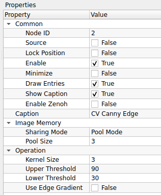
1. Common (การตั้งค่าทั่วไป)
| Property | Default | คำอธิบาย |
|---|---|---|
| Node ID | 2 |
เลขประจำตัวลำดับของโหนด |
| Caption | CV Canny Edge |
ชื่อโหนดที่แสดงผลบน Workspace |
2. Image Memory (การจัดการหน่วยความจำภาพ)
(ส่วนนี้สำหรับการบริหารจัดการทรัพยากรเครื่องเมื่อรันต่อเนื่อง)
| Property | Default | คำอธิบาย |
| :--- | :--- | :--- |
| Sharing Mode | Pool Mode | รูปแบบการจัดการหน่วยความจำ
- Pool Mode: ใช้หน่วยความจำชุดเดิมวนซ้ำ (ประหยัด RAM เหมาะกับ Video Stream)
- Broadcast Mode: สร้างข้อมูลชุดใหม่ทุกครั้ง (กิน RAM มากกว่า) |
| Pool Size | 3 | จำนวน Buffer ที่เตรียมไว้สำหรับหมุนเวียน (กรณีใช้ Pool Mode) |
3. Operation (การตั้งค่าอัลกอริทึม)
| Property | Default | คำอธิบาย |
|---|---|---|
| Kernel Size | 3 |
ขนาดหน้าต่างของ Sobel Operator สำหรับหา Gradient (ต้องเป็นเลขคี่ เช่น 3, 5, 7) |
| Upper Threshold | 90 |
ค่าเกณฑ์สูง (High Threshold) ถ้าค่า Gradient เกินนี้ -> เป็นขอบแน่นอน |
| Lower Threshold | 30 |
ค่าเกณฑ์ต่ำ (Low Threshold) ถ้าค่า Gradient ต่ำกว่านี้ -> ตัดทิ้งไม่เป็นขอบ |
| Use Edge Gradient | False |
วิธีการคำนวณขนาด Gradient - False: ใช้ L1 Norm $ |
หลักการทำงาน: Hysteresis Thresholding
อัลกอริทึม Canny ตัดสินใจว่าจุดไหนเป็นขอบโดยใช้เกณฑ์ 2 ค่า (Upper/Lower) ดังนี้:
- Strong Edge: จุดที่มีความเข้มเกิน Upper Threshold จะถูกนับเป็น "เส้นขอบ" ทันที
- Weak Edge: จุดที่มีค่าอยู่ระหว่าง Lower และ Upper จะถูกพิจารณาว่าเป็นเส้นขอบ ก็ต่อเมื่อ จุดนั้นเชื่อมต่ออยู่กับ Strong Edge เท่านั้น
- No Edge: จุดที่ต่ำกว่า Lower Threshold จะถูกตัดทิ้ง
เทคนิคการปรับค่า (Tuning Tips)
- อัตราส่วน: แนะนำให้ตั้งค่า Upper : Lower ในอัตราส่วนประมาณ 2:1 หรือ 3:1 (เช่น Upper=90, Lower=30)
- ถ้าเส้นขาด: ให้ลดค่า Lower Threshold ลง
- ถ้ามีจุดรบกวน (Noise) เยอะ: ให้เพิ่มค่า Upper Threshold หรือ Lower Threshold ขึ้น
เทคนิค: Pool Mode vs Broadcast Mode
- เลือก Pool Mode เสมอเมื่อทำงานปกติ (เช่น รับภาพ -> แปลงขอบ -> แสดงผล) เพราะกินแรมน้อยกว่า
- เลือก Broadcast Mode ก็ต่อเมื่อคุณต่อสาย Output ออกไป 2 ทาง แล้วทางหนึ่งมีการ เขียนทับ ข้อมูลภาพ แล้วคุณกลัวว่าภาพอีกทางจะเพี้ยนตามไปด้วย
การปรับจูน Threshold
แนะนำให้ตั้งค่า Upper เป็น 2 ถึง 3 เท่าของ Lower (เช่น 90 กับ 30) เพื่อให้เส้นขอบเชื่อมต่อกันดีที่สุด หากเส้นขาดให้ลด Lower ลง หาก Noise เยอะให้เพิ่มทั้งสองค่าขึ้น
ข้อควรระวัง
โหนดนี้ทำงานได้ดีที่สุดกับภาพ Grayscale (ขาวดำ) หากส่งภาพสีเข้ามา ระบบมักจะแปลงเป็น Grayscale ให้อัตโนมัติหรือประมวลผลทีละช่องสี ซึ่งอาจกินทรัพยากรเพิ่มขึ้น
- CV Color Space:

CV Color Space คือโหนดสำหรับการประมวลผลภาพ (Image Processing) ทำหน้าที่ "แปลงระบบสี (Color Space Conversion)" ของภาพอินพุตจากรูปแบบหนึ่งไปสู่อีกรูปแบบหนึ่ง เช่น แปลงจากภาพสี (BGR) เป็นภาพขาวดำ (Grayscale) เพื่อลดปริมาณข้อมูลก่อนการวิเคราะห์ หรือแปลงเป็น HSV เพื่อใช้ในการตรวจจับวัตถุด้วยสี
ตารางการตั้งค่า (Properties)
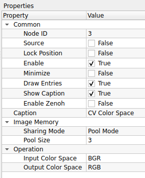
1. Common (การตั้งค่าทั่วไป)
| Property | Default | คำอธิบาย |
|---|---|---|
| Node ID | 3 |
เลขประจำตัวลำดับของโหนด |
| Caption | CV Color Space |
ชื่อโหนดที่แสดงผลบน Workspace |
2. Image Memory (การจัดการหน่วยความจำภาพ)
| Property | Default | คำอธิบาย |
|---|---|---|
| Sharing Mode | Pool Mode |
รูปแบบการจัดการหน่วยความจำ: - Pool Mode: ใช้หน่วยความจำเดิมวนซ้ำ (เร็ว, ประหยัด RAM) - Broadcast Mode: สร้างข้อมูลใหม่แยกออกมา (ปลอดภัยสำหรับการแยกสายงาน) |
| Pool Size | 3 |
จำนวน Buffer ที่เตรียมไว้หมุนเวียน (สำหรับ Pool Mode) |
3. Operation (การตั้งค่าการแปลงสี)
| Property | Default | คำอธิบาย |
|---|---|---|
| Input Color Space | BGR |
รูปแบบสีของภาพต้นทาง (ภาพจาก OpenCV ปกติจะเป็น BGR) |
| Output Color Space | RGB |
รูปแบบสีปลายทางที่ต้องการแปลง |
เกร็ดความรู้: ทำไมต้อง BGR?
โดยปกติโปรแกรมทั่วไปจะเก็บค่าสีแบบ RGB (Red-Green-Blue) แต่ไลบรารี OpenCV (ที่เป็นแกนหลักของโหนดนี้) ใช้มาตรฐานแบบ BGR (Blue-Green-Red) มาตั้งแต่อดีต
ดังนั้น หากคุณนำภาพจาก OpenCV ไปแสดงผลบนหน้าจอ GUI บางประเภทแล้วสีเพี้ยน (เช่น คนหน้าสีฟ้า) ให้ใช้โหนดนี้แปลง BGR -> RGB ก่อนเสมอ
คู่การแปลงที่ใช้งานบ่อย (Common Conversions)
- BGR $\rightarrow$ Gray: แปลงภาพสีเป็นขาวดำ (Grayscale) จำเป็นมากก่อนส่งเข้าโหนดพวก Thresholding, Canny Edge หรือ Find Contours
- BGR $\rightarrow$ HSV: แปลงเป็นระบบสี Hue-Saturation-Value เหมาะสำหรับการ "จับคู่สี" (Color Detection) เพราะแยกค่าเนื้อสี (Hue) ออกจากแสงเงา (Value) ได้ชัดเจน
- BGR $\rightarrow$ RGB: แปลงเพื่อนำไปแสดงผลบนหน้าจอ UI ทั่วไปให้สีถูกต้อง
- CV Nomolization:

CV Normalization คือโหนดสำหรับการประมวลผลภาพ (Image Processing) ทำหน้าที่ "ปรับสเกลค่าของพิกเซล (Pixel Value Scaling)" ให้อยู่ในช่วงที่กำหนด (เช่น 0-255) หรือปรับมาตรฐานทางคณิตศาสตร์ ช่วยแก้ปัญหาภาพมืดเกินไป ภาพสว่างเกินไป หรือแปลงชนิดข้อมูล (Data Type) ให้เหมาะสมกับการแสดงผล
ตารางการตั้งค่า (Properties)

1. Common (การตั้งค่าทั่วไป)
| Property | Default | คำอธิบาย |
|---|---|---|
| Node ID | 4 |
เลขประจำตัวลำดับของโหนด |
| Caption | CV Normalization |
ชื่อโหนดที่แสดงผลบน Workspace |
2. Image Memory (การจัดการหน่วยความจำภาพ)
| Property | Default | คำอธิบาย |
|---|---|---|
| Sharing Mode | Pool Mode |
รูปแบบการจัดการหน่วยความจำ: - Pool Mode: ใช้หน่วยความจำเดิมวนซ้ำ (เร็ว, ประหยัด RAM) - Broadcast Mode: สร้างข้อมูลใหม่แยกออกมา (ปลอดภัยสำหรับการแยกสายงาน) |
| Pool Size | 3 |
จำนวน Buffer ที่เตรียมไว้หมุนเวียน (สำหรับ Pool Mode) |
3. Operation (การตั้งค่าการคำนวณ)
| Property | Default | คำอธิบาย |
|---|---|---|
| Maximum | 255.0000 |
ค่าสูงสุดของช่วงเป้าหมาย (Target High) ที่ต้องการปรับค่าไปหา |
| Minimum | 0.0000 |
ค่าต่ำสุดของช่วงเป้าหมาย (Target Low) ที่ต้องการปรับค่าไปหา |
| Norm Type | NORM_MINMAX |
สูตรคณิตศาสตร์ที่ใช้ในการปรับสเกล (ดูรายละเอียดด้านล่าง) |
เจาะลึก: Norm Type (รูปแบบการปรับสเกล)
การเลือก Norm Type จะเปลี่ยนวิธีการคำนวณอย่างสิ้นเชิง:
-
NORM_MINMAX (แนะนำสำหรับ Image Processing):
- เป็นการ "ยืด" หรือ "บีบ" ค่าพิกเซลทั้งหมดในภาพ ให้ลงมาอยู่ในช่วง [Minimum, Maximum] ที่ตั้งไว้พอดี
- ประโยชน์: ใช้ทำ Contrast Stretching (แก้ภาพซีดให้เข้มขึ้น) หรือแปลงภาพ Float (0.0-1.0) ให้เป็น 8-bit (0-255)
-
NORM_INF, NORM_L1, NORM_L2:
- เป็นการหารค่าพิกเซลด้วยค่าทางคณิตศาสตร์ (Infinite norm, Absolute sum, Euclidean norm)
- ประโยชน์: มักใช้ในการเตรียมข้อมูลสำหรับ AI/Machine Learning หรือคำนวณ Histogram ไม่ค่อยใช้กับการปรับแต่งภาพเพื่อการมองเห็นทั่วไป
วิธีการใช้งาน (Usage Workflow)
กรณีที่ 1: แก้ภาพซีด (Contrast Stretching)
1. ภาพต้นฉบับอาจมีค่าสีแค่ช่วงกลางๆ (เช่น 100-150) ทำให้ภาพดูมัวๆ
2. ใช้โหนดนี้ ตั้งค่า Norm Type = NORM_MINMAX, Min = 0, Max = 255
3. ผลลัพธ์: ส่วนที่มืดสุดจะถูกดึงไปที่ 0 และสว่างสุดไปที่ 255 ทำให้ภาพดูคมชัดขึ้นทันที
กรณีที่ 2: แปลงภาพ Float 1. รับภาพมาจากโหนดคำนวณที่ให้ค่าเป็นทศนิยม (เช่น 0.0 - 1.0) 2. ใช้โหนดนี้ปรับให้เป็นช่วง 0 - 255 ก่อนส่งไปแสดงผลที่ Display Image
- CV RGB Values:

CV RGB Values คือโหนดสำหรับกำหนด "ค่าสี (Color Value)" โดยระบุส่วนประกอบของสีแดง (Red), เขียว (Green), และน้ำเงิน (Blue) เพื่อใช้เป็นข้อมูลนำเข้า (Input) ให้กับโหนดที่ต้องการพารามิเตอร์เรื่องสี เช่น โหนดวาดรูปทรง (Draw Shapes) หรือโหนดเขียนข้อความ (Put Text)
ตารางการตั้งค่า (Properties)
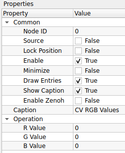
1. Common (การตั้งค่าทั่วไป)
| Property | Default | คำอธิบาย |
|---|---|---|
| Node ID | 0 |
เลขประจำตัวลำดับของโหนด |
| Source | False |
สถานะของโหนด (ในที่นี้ทำหน้าที่ส่งค่าสีออกไป) |
| Lock Position | False |
ล็อกตำแหน่งโหนด |
| Enable | True |
เปิด/ปิด การทำงานของโหนด |
| Minimize | False |
ย่อขนาดโหนด |
| Draw Entries | True |
แสดงจุดเชื่อมต่อ (Ports) |
| Show Caption | True |
แสดงแถบชื่อโหนด |
| Enable Zenoh | False |
เปิดระบบสื่อสาร Zenoh |
| Caption | CV RGB Values |
ชื่อโหนดที่แสดงผลบน Workspace |
2. Operation (การกำหนดค่าสี)
| Property | Default | คำอธิบาย |
|---|---|---|
| R Value | 0 |
ค่าความเข้มของสีแดง (Red) ช่วง 0-255 |
| G Value | 0 |
ค่าความเข้มของสีเขียว (Green) ช่วง 0-255 |
| B Value | 0 |
ค่าความเข้มของสีน้ำเงิน (Blue) ช่วง 0-255 |
ตัวอย่างการผสมสี (Color Mixing Guide)
คุณสามารถกำหนดค่า R, G, B เพื่อสร้างสีต่างๆ ได้ดังนี้:
- สีดำ (Black): R=0, G=0, B=0
- สีขาว (White): R=255, G=255, B=255
- สีแดง (Red): R=255, G=0, B=0
- สีเขียว (Green): R=0, G=255, B=0
- สีน้ำเงิน (Blue): R=0, G=0, B=255
- สีเหลือง (Yellow): R=255, G=255, B=0
- สีม่วง (Magenta): R=255, G=0, B=255
- สีฟ้า (Cyan): R=0, G=255, B=255
วิธีการใช้งาน (Usage Workflow)
โหนดนี้มักใช้ร่วมกับโหนดกลุ่ม Drawing (การวาดภาพ): 1. สร้างโหนด CV RGB Values และตั้งค่าสีที่ต้องการ (เช่น สีแดง) 2. ลากสายจาก Output ของโหนดนี้ ไปเข้าที่พอร์ต Color ของโหนดปลายทาง (เช่น Draw Rectangle หรือ Put Text) 3. รูปทรงหรือข้อความที่วาดออกมา จะแสดงผลตามสีที่คุณตั้งค่าไว้
- CV RGB to Gray:

CV RGB to Gray คือโหนดสำหรับการประมวลผลภาพ (Image Processing) ทำหน้าที่ "แปลงภาพสี (RGB/BGR) ให้เป็นภาพขาวดำ (Grayscale)" แบบช่องสัญญาณเดียว (Single Channel) เพื่อลดปริมาณข้อมูลและเตรียมภาพสำหรับอัลกอริทึมที่ต้องการความเข้มแสงเพียงอย่างเดียว เช่น การตรวจจับขอบ (Edge Detection) หรือการทำ Thresholding
ตารางการตั้งค่า (Properties)
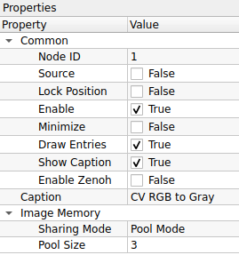
1. Common (การตั้งค่าทั่วไป)
| Property | Default | คำอธิบาย |
|---|---|---|
| Node ID | 1 |
เลขประจำตัวลำดับของโหนด |
| Source | False |
โหนดนี้ไม่ใช่ Source (ต้องรับภาพสีเข้ามา) |
| Lock Position | False |
ล็อกตำแหน่งโหนด |
| Enable | True |
เปิด/ปิด การทำงานของโหนด |
| Minimize | False |
ย่อขนาดโหนด |
| Draw Entries | True |
แสดงจุดเชื่อมต่อ (Ports) |
| Show Caption | True |
แสดงแถบชื่อโหนด |
| Enable Zenoh | False |
เปิดระบบสื่อสาร Zenoh |
| Caption | CV RGB to Gray |
ชื่อโหนดที่แสดงผลบน Workspace |
2. Image Memory (การจัดการหน่วยความจำภาพ)
| Property | Default | คำอธิบาย |
|---|---|---|
| Sharing Mode | Pool Mode |
รูปแบบการจัดการหน่วยความจำ: - Pool Mode: ใช้หน่วยความจำเดิมวนซ้ำ (เร็ว, ประหยัด RAM) - Broadcast Mode: สร้างข้อมูลใหม่แยกออกมา (ปลอดภัยสำหรับการแยกสายงาน) |
| Pool Size | 3 |
จำนวน Buffer ที่เตรียมไว้หมุนเวียน (สำหรับ Pool Mode) |
ข้อดีของการใช้โหนดนี้ (Why use this?)
แม้ว่าคุณจะสามารถใช้โหนด CV Color Space เพื่อแปลงเป็น Grayscale ได้เช่นกัน แต่โหนด CV RGB to Gray ถูกออกแบบมาให้ "ใช้ง่ายและรวดเร็วกว่า"
- ไม่ต้องตั้งค่า: ไม่ต้องเลือก Input/Output Mode เอง ระบบจัดการให้เสร็จสรรพ
- ลดความผิดพลาด: ป้องกันการเลือกโหมดผิด (เช่น เผลอเลือก BGR -> HSV)
เทคนิคการใช้งาน (Usage Workflow)
โหนดนี้คือ "ด่านแรก" ของอัลกอริทึมส่วนใหญ่: 1. รับภาพสีจากกล้อง (Camera) หรือไฟล์ภาพ 2. ส่งเข้า CV RGB to Gray ทันที 3. ส่งภาพขาวดำที่ได้ไปทำต่อ เช่น: * เข้า CV Thresholding เพื่อแยกวัตถุ * เข้า CV Canny Edge เพื่อหาเส้นขอบ * เข้า CV Find Contours เพื่อหาพื้นที่
- CV split Image:

CV Split Image คือโหนดสำหรับการจัดการข้อมูลภาพ (Image Manipulation) ทำหน้าที่ "แยกช่องสัญญาณสี (Split Channels)" ของภาพอินพุตให้ออกมาเป็นภาพย่อยๆ ตามจำนวนช่องสีที่มี (Multi-channel to Single-channel) เช่น แยกภาพสี BGR ออกเป็นภาพขาวดำ 3 ภาพ (Blue, Green, Red) เพื่อนำไปประมวลผลแยกกัน
ตารางการตั้งค่า (Properties)

1. Common (การตั้งค่าทั่วไป)
| Property | Default | คำอธิบาย |
|---|---|---|
| Node ID | 2 |
เลขประจำตัวลำดับของโหนด |
| Source | False |
โหนดนี้ไม่ใช่ Source (ต้องรับภาพ Input เข้ามา) |
| Lock Position | False |
ล็อกตำแหน่งโหนด |
| Enable | True |
เปิด/ปิด การทำงานของโหนด |
| Minimize | False |
ย่อขนาดโหนด |
| Draw Entries | True |
แสดงจุดเชื่อมต่อ (Ports) |
| Show Caption | True |
แสดงแถบชื่อโหนด |
| Enable Zenoh | False |
เปิดระบบสื่อสาร Zenoh |
| Caption | CV Split Image |
ชื่อโหนดที่แสดงผลบน Workspace |
2. Display (การตั้งค่าการแสดงผล)
| Property | Default | คำอธิบาย |
|---|---|---|
| Maintain Channels | False |
รูปแบบข้อมูลขาออก: - False: ส่งออกเป็นภาพขาวดำ (Grayscale 1-channel) ตามความเข้มของช่องสีนั้นๆ (นิยมใช้ที่สุด) - True: ส่งออกโดยคงคุณสมบัติช่องสีเดิมไว้ (ผลลัพธ์อาจยังเป็น 3-channel แต่มีค่าแค่ช่องเดียว) |
วิธีการใช้งาน (Usage Workflow)
เมื่อต่อสายจากภาพสี (BGR) เข้ามาที่โหนดนี้ Output Ports จะงอกออกมา 3 ช่องโดยอัตโนมัติ:
- Output 0 (Blue): ช่องสัญญาณสีน้ำเงิน
- Output 1 (Green): ช่องสัญญาณสีเขียว
- Output 2 (Red): ช่องสัญญาณสีแดง
หมายเหตุ: ลำดับ 0-1-2 จะเปลี่ยนไปตาม Color Space ของภาพต้นทาง (เช่นถ้าเป็น HSV ช่อง 0 จะเป็น Hue)
ตัวอย่างการประยุกต์ใช้ (Use Case)
- HSV Color Detection: แปลงภาพเป็น HSV ก่อน -> เข้าโหนด CV Split Image -> ดึงเฉพาะขา S (Saturation) หรือ H (Hue) ไปทำ Thresholding เพื่อตรวจจับวัตถุสีสดๆ โดยไม่สนใจแสงเงา
- Red Light Detection: แยกช่องสี Red ออกมา แล้วนำไปหาค่าความสว่างสูงสุด เพื่อดูว่าไฟสีแดงติดอยู่หรือไม่
- CV Invert Grascale:

CV Invert Grayscale คือโหนดสำหรับการประมวลผลภาพ (Image Processing) ทำหน้าที่ "กลับค่าความเข้มแสง (Bitwise NOT / Inversion)" ของภาพขาวดำ โดยการเปลี่ยนพิกเซลสีดำให้เป็นขาว และสีขาวให้เป็นดำ ($NewValue = 255 - OldValue$) เปรียบเสมือนการสร้างภาพฟิล์มเนกาทีฟ
ตารางการตั้งค่า (Properties)

1. Common (การตั้งค่าทั่วไป)
| Property | Default | คำอธิบาย |
|---|---|---|
| Node ID | 0 |
เลขประจำตัวลำดับของโหนด |
| Source | False |
โหนดนี้ไม่ใช่ Source (ต้องรับภาพ Input เข้ามา) |
| Lock Position | False |
ล็อกตำแหน่งโหนด |
| Enable | True |
เปิด/ปิด การทำงานของโหนด |
| Minimize | False |
ย่อขนาดโหนด |
| Draw Entries | True |
แสดงจุดเชื่อมต่อ (Ports) |
| Show Caption | True |
แสดงแถบชื่อโหนด |
| Enable Zenoh | False |
เปิดระบบสื่อสาร Zenoh |
| Caption | CV Invert Grayscale |
ชื่อโหนดที่แสดงผลบน Workspace |
2. Image Memory (การจัดการหน่วยความจำภาพ)
| Property | Default | คำอธิบาย |
|---|---|---|
| Sharing Mode | Pool Mode |
รูปแบบการจัดการหน่วยความจำ: - Pool Mode: ใช้หน่วยความจำเดิมวนซ้ำ (ประหยัด RAM) - Broadcast Mode: สร้างข้อมูลใหม่แยกออกมา (ปลอดภัยสำหรับการแยกสายงาน) |
| Pool Size | 3 |
จำนวน Buffer ที่เตรียมไว้หมุนเวียน (สำหรับ Pool Mode) |
เทคนิค: ทำไมต้องกลับสี? (Why Invert?)
อัลกอริทึมส่วนใหญ่ใน Computer Vision (เช่น Find Contours) มักถูกออกแบบมาให้ตรวจจับ "วัตถุสีขาว บนพื้นหลังสีดำ"
- ปัญหา: หากคุณถ่ายภาพ "ตัวหนังสือสีดำ บนกระดาษสีขาว" มา โปรแกรมอาจจะมองเห็นกระดาษเป็นวัตถุแทน
- ทางแก้: ส่งภาพเข้าโหนด CV Invert Grayscale -> ตัวหนังสือจะกลายเป็นสีขาว และกระดาษจะกลายเป็นสีดำ -> โปรแกรมจะจับตัวหนังสือได้ทันที!
ข้อควรระวัง
โหนดนี้รับ input เป็นภาพ Grayscale (ช่องสัญญาณเดียว) เท่านั้น หากคุณส่งภาพสีเข้ามา ควรผ่านโหนด CV RGB to Gray หรือ CV Color Space ก่อน
7. Image Enhancement (การปรับปรุงคุณภาพภาพ)
ช่วยปรับภาพให้ชัดเจนขึ้น หรือปรับแสงสีให้เหมาะสม

- CV CLAHE Equalization:

1. Common (การตั้งค่าทั่วไป)
| Property | Default | คำอธิบาย |
|---|---|---|
| Node ID | 0 |
เลขประจำตัวลำดับของโหนด |
| Caption | CV CLAHE Equalization |
ชื่อโหนดที่แสดงผลบน Workspace |
2. Image Memory (การจัดการหน่วยความจำภาพ)
| Property | Default | คำอธิบาย |
|---|---|---|
| Sharing Mode | Pool Mode |
รูปแบบการจัดการหน่วยความจำ: - Pool Mode: ใช้หน่วยความจำเดิมวนซ้ำ (ประหยัด RAM) - Broadcast Mode: สร้างสำเนาข้อมูลใหม่แยกออกมา (ปลอดภัยที่สุดหากมีการต่อสายแยกไปหลายทาง) |
| Pool Size | 3 |
จำนวน Buffer ที่เตรียมไว้ (สำหรับ Pool Mode) |
3. Operation (การปรับตั้งค่า CLAHE)
| Property | Default | คำอธิบาย |
|---|---|---|
| Clip Limit | 2.0000 |
ค่าจำกัดความเปรียบต่าง (Contrast Limit) - ค่าน้อย: ภาพดูนวลเป็นธรรมชาติ - ค่ามาก: เห็นรายละเอียดชัดมาก แต่ Noise (จุดรบกวน) จะเยอะตามไปด้วย (แนะนำ 2.0 - 4.0) |
| Tile Size | 8 |
ขนาดตารางที่จะแบ่งภาพ (Grid Size) เช่น 8 คือแบ่งเป็น 8x8 ช่อง- ช่องเล็กเกินไปอาจทำให้ภาพดูเป็นกระเบื้อง - ช่องใหญ่ไปจะคล้าย Equalization แบบปกติ |
| Apply On Color Luma | True |
(แนะนำ) หากเป็นภาพสี ระบบจะแปลงโหมดสีเพื่อปรับเฉพาะค่าความสว่าง (Luma/Lightness) ทำให้สีไม่เพี้ยน |
| Color Space | YCrCb |
พื้นที่สีที่ใช้แยกความสว่าง (เมื่อเปิดโหมด Apply On Color Luma): - YCrCb: แยกช่อง Y (Luma) ออกมา (รวดเร็ว เป็นมาตรฐานวิดีโอ) - Lab: แยกช่อง L (Lightness) ออกมา (มีความแม่นยำสูงในเชิงการมองเห็นของมนุษย์) |
| Convert Non-8U | False |
แปลงข้อมูลเป็น 8-bit (0-255) อัตโนมัติหาก Input มาเป็นแบบอื่น |
ความแตกต่าง: CLAHE vs Histogram Equalization ปกติ
- Histogram Equalization (ปกติ): ปรับแสงทั้งภาพพร้อมกัน ถ้าภาพมีจุดมืดมากกับสว่างมาก จะทำให้ส่วนสว่าง "ขาวโพลน" จนรายละเอียดหาย
- CLAHE (ตัวนี้): ฉลาดกว่า เพราะปรับทีละส่วน ทำให้รายละเอียดในเงามืดก็เห็น ในที่สว่างก็ยังเห็นครบถ้วน
การนำไปประยุกต์ใช้
- แก้ภาพย้อนแสง: ช่วยดึงหน้าคนในเงามืดให้สว่างขึ้น โดยที่ท้องฟ้าด้านหลังไม่ขาวโพลน
- เตรียมภาพก่อน AI: ช่วยให้ AI เห็นขอบวัตถุชัดขึ้นในทุกสภาพแสง (เช่น การอ่านป้ายทะเบียนรถตอนกลางคืน)
- CV Histogram Equalization:

CV Histogram Equalization คือโหนดสำหรับการปรับปรุงคุณภาพภาพ (Image Enhancement) ทำหน้าที่ "เกลี่ยค่าความสว่าง (Global Histogram Equalization)" โดยนำค่าความถี่ของเม็ดสีมาคำนวณใหม่ให้กระจายตัวครอบคลุมช่วงความสว่างตั้งแต่ 0-255 ทำให้ภาพที่มีความเปรียบต่างต่ำ (เช่น ภาพมัวๆ ซีดๆ) กลับมามีความเปรียบต่างสูงและเห็นรายละเอียดชัดเจนขึ้น
ตารางการตั้งค่า (Properties)

1. Common (การตั้งค่าทั่วไป)
| Property | Default | คำอธิบาย |
|---|---|---|
| Node ID | 6 |
เลขประจำตัวลำดับของโหนด |
| Caption | CV Histogram Equalization |
ชื่อโหนดที่แสดงผลบน Workspace |
2. Image Memory (การจัดการหน่วยความจำภาพ)
| Property | Default | คำอธิบาย |
|---|---|---|
| Sharing Mode | Pool Mode |
รูปแบบการจัดการหน่วยความจำ: - Pool Mode: ใช้หน่วยความจำเดิมวนซ้ำ (เร็ว, ประหยัด RAM) - Broadcast Mode: สร้างข้อมูลใหม่แยกออกมา (ปลอดภัยสำหรับการแยกสายงาน) |
| Pool Size | 3 |
จำนวน Buffer ที่เตรียมไว้หมุนเวียน (สำหรับ Pool Mode) |
3. Operation (การปรับตั้งค่า)
| Property | Default | คำอธิบาย |
|---|---|---|
| Apply On Color Luma | True |
(แนะนำ) หากเป็นภาพสี ระบบจะแปลงเป็นโหมดอื่นเพื่อปรับเฉพาะค่าความสว่าง (Luma) แล้วแปลงกลับ ทำให้สีไม่เพี้ยน |
| Color Space | YCrCb |
พื้นที่สีที่ใช้ในการแยกความสว่าง (เมื่อเปิดโหมด Apply On Color Luma) เลือกได้ดังนี้: - YCrCb: มาตรฐานทั่วไป แยก Luma (Y) ได้ดี - Lab: พื้นที่สีแบบ Perceptual แยกความสว่าง (L) ได้แม่นยำกว่าในบางกรณี |
| Convert Non-8U | False |
แปลงข้อมูลเป็น 8-bit (0-255) อัตโนมัติหาก Input มาเป็นแบบอื่น |
ข้อควรระวัง: เทียบกับ CLAHE
โหนดนี้ใช้วิธีปรับแบบ "Global" (ทั้งภาพใช้สูตรเดียวกัน) ซึ่งมีข้อดีคือทำงานเร็วมาก แต่มีข้อเสียคือ:
- ถ้าภาพมี Noise: จุดรบกวนจะถูกเร่งให้ชัดขึ้นอย่างน่าตกใจ
- ถ้าภาพมีส่วนสว่างอยู่แล้ว: อาจทำให้ส่วนนั้น "ขาวโพลน" (Washed out) จนมองไม่เห็นรายละเอียด
- ทางแก้: หากเจออาการข้างต้น ให้เปลี่ยนไปใช้โหนด CV CLAHE Equalization แทนครับ
เกร็ดความรู้: YCrCb vs Lab
- YCrCb: เป็นระบบสีที่ใช้ใน Video Compression ทั่วไป ทำงานได้รวดเร็ว
- Lab: ถูกออกแบบมาให้ใกล้เคียงกับการมองเห็นของมนุษย์ที่สุด ช่อง L (Lightness) ของ Lab จะเป็นตัวแทนความสว่างที่แท้จริงมากกว่า YCrCb เล็กน้อย ถ้าเน้นความแม่นยำสูงลองเปลี่ยนเป็น Lab ดูได้ครับ
8. Image Modification (การดัดแปลงภาพ)
การวาดหรือแก้ไขข้อมูลบนภาพโดยตรง

- CV Gaussian Blur:

CV Gaussian Blur คือโหนดสำหรับการปรับปรุงคุณภาพภาพ (Image Filtering) ทำหน้าที่ "เบลอภาพแบบเกาส์เซียน (Gaussian Smoothing)" ซึ่งเป็นการนำค่าเฉลี่ยถ่วงน้ำหนัก (Weighted Average) ของพิกเซลรอบข้างมาคำนวณ โดยให้ความสำคัญกับพิกเซลตรงกลางมากที่สุด ผลลัพธ์ที่ได้คือภาพที่ดูนวลขึ้นและจุดรบกวน (Noise) ลดลงอย่างมีประสิทธิภาพ
ตารางการตั้งค่า (Properties)
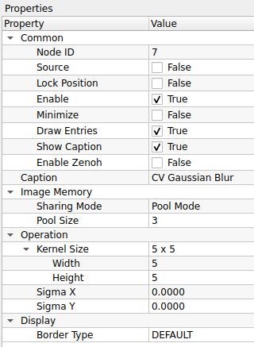
1. Common (การตั้งค่าทั่วไป)
| Property | Default | คำอธิบาย |
|---|---|---|
| Node ID | 7 |
เลขประจำตัวลำดับของโหนด |
| Caption | CV Gaussian Blur |
ชื่อโหนดที่แสดงผลบน Workspace |
2. Image Memory (การจัดการหน่วยความจำภาพ)
| Property | Default | คำอธิบาย |
|---|---|---|
| Sharing Mode | Pool Mode |
รูปแบบการจัดการหน่วยความจำ (Pool Mode / Broadcast Mode) |
| Pool Size | 3 |
จำนวน Buffer ที่เตรียมไว้ |
3. Operation (การตั้งค่าความเบลอ)
| Property | Default | คำอธิบาย |
|---|---|---|
| Kernel Size | 5 x 5 |
ขนาดหน้าต่างที่จะนำมาคำนวณเฉลี่ย (Width x Height) - กฎเหล็ก: ค่าต้องเป็น เลขคี่ เท่านั้น (เช่น 3, 5, 7, 9...) - ค่ายิ่งมาก: ภาพยิ่งเบลอมาก |
| Sigma X | 0.0000 |
ค่าเบี่ยงเบนมาตรฐานแกน X (Gaussian Standard Deviation) - ถ้าใส่ 0: ระบบจะคำนวณให้อัตโนมัติจากขนาด Kernel (แนะนำ) - ถ้าใส่ค่าเอง: จะเป็นการคุมความ "ฟุ้ง" ของการเบลออย่างละเอียด |
| Sigma Y | 0.0000 |
ค่าเบี่ยงเบนมาตรฐานแกน Y (ปกติใส่ 0 เพื่อให้เท่ากับแกน X) |
4. Display (การแสดงผลขอบภาพ)
| Property | Default | คำอธิบาย |
|---|---|---|
| Border Type | DEFAULT |
วิธีการจัดการกับพิกเซลที่อยู่ขอบภาพ (Edge Handling) เมื่อ Kernel ยื่นออกไปนอกภาพ: - DEFAULT: ใช้ค่ามาตรฐาน (Reflect 101) - CONSTANT: เติมขอบด้วยสีดำ (ค่าคงที่) - REPLICATE: ทำซ้ำพิกเซลตัวสุดท้ายของขอบ (ยืดขอบออกไป) - REFLECT: สะท้อนภาพเหมือนกระจก - WRAP: วนกลับไปเอาภาพจากอีกฝั่งมาแปะ (เหมือนปูกระเบื้อง) - TRANSPARENT: ไม่เปลี่ยนแปลงพิกเซลเป้าหมาย - ISOLATED: ไม่สนใจพิกเซลนอกพื้นที่ ROI |
เทคนิค: Kernel Size เลือกยังไงดี?
- 3 x 3: เบลอนิดเดียว ใช้ลด Noise เม็ดเล็กๆ โดยยังคงรายละเอียดภาพไว้ได้ดี
- 5 x 5 (ค่าแนะนำ): ค่ากลางๆ เหมาะสำหรับลบรอยยับ หรือ Noise ทั่วไป
- 9 x 9 ขึ้นไป: เบลอจนภาพมัว เหมาะสำหรับทำ Background เบลอ หรือต้องการลบรายละเอียดทิ้งไปเลย
Use Case: ทำไมต้องเบลอก่อน?
การใช้โหนดนี้ต่อ "ก่อน" ที่จะเข้าโหนด Canny Edge Detection หรือ Find Contours จะช่วยลดเส้นยุบยิบ (False Edges) ที่เกิดจากฝุ่นหรือแสงรบกวนได้มหาศาลครับ ทำให้โปรแกรมจับวัตถุได้แม่นยำขึ้นมาก
- CV Erode and Dilate:

CV Erode and Dilate คือโหนดสำหรับการปรับแต่งรูปทรงของวัตถุในภาพ (Morphological Transformations) โดยอาศัยการเลื่อนหน้าต่าง (Kernel) ไปทั่วภาพเพื่อปรับเปลี่ยนพิกเซลตามเงื่อนไขทางเรขาคณิต นิยมใช้มากที่สุดในการทำความสะอาดภาพ Mask ขาวดำ (Binary Mask) เช่น การลบจุด Noise เล็กๆ หรือการอุดรูรั่วในวัตถุ
ตารางการตั้งค่า (Properties)
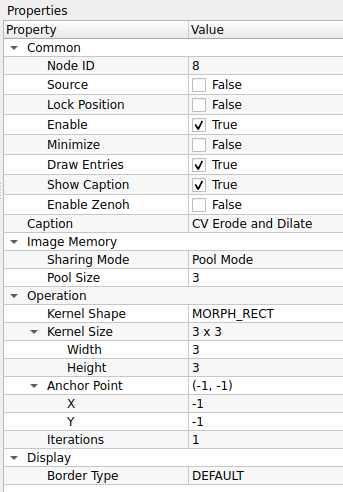
1. Common (การตั้งค่าทั่วไป)
| Property | Default | คำอธิบาย |
|---|---|---|
| Node ID | 8 |
เลขประจำตัวลำดับของโหนด |
| Caption | CV Erode and Dilate |
ชื่อโหนดที่แสดงผลบน Workspace |
2. Image Memory (การจัดการหน่วยความจำภาพ)
| Property | Default | คำอธิบาย |
|---|---|---|
| Sharing Mode | Pool Mode |
รูปแบบการจัดการหน่วยความจำ: - Pool Mode: ใช้หน่วยความจำเดิมวนซ้ำ (ประหยัด RAM) - Broadcast Mode: สร้างสำเนาข้อมูลใหม่แยกออกมา (ปลอดภัยที่สุดหากมีการต่อสายแยกไปหลายทาง) |
| Pool Size | 3 |
จำนวน Buffer ที่เตรียมไว้ |
3. Operation (การตั้งค่ารูปร่าง Kernel)
| Property | Default | คำอธิบาย |
|---|---|---|
| Kernel Shape | MORPH_RECT |
รูปร่างของหน้าต่างที่จะนำมาทาบ (Structuring Element): - MORPH_RECT: สี่เหลี่ยมเต็ม (นิยมสุด เก็บรายละเอียดขอบได้ดี) - MORPH_CROSS: รูปกากบาท (กินพื้นที่น้อยกว่า เหมาะกับเส้นตัดกัน) - MORTH_ELLIPSE: รูปวงรี (เหมาะสำหรับวัตถุที่มีความโค้งมนหรือทรงกลม) |
| Kernel Size | 3 x 3 |
ขนาดของหน้าต่าง (Width x Height) ต้องเป็นเลขคี่ (3, 5, 7) - เล็ก: เก็บรายละเอียดขอบได้ดี - ใหญ่: ผลลัพธ์จะเปลี่ยนแปลงรุนแรง (เช่น ลบ Noise ได้เกลี้ยงแต่ของหาย) |
| Anchor Point | (-1, -1) |
จุดศูนย์กลางอ้างอิงของ Kernel (ปกติใช้ -1, -1 คือให้ระบบหาจุดกึ่งกลางเอง) |
| Iterations | 1 |
จำนวนรอบในการทำซ้ำ - ยิ่งใส่เลขเยอะ ภาพจะยิ่งถูกกร่อนหรือขยายมากขึ้นเป็นทวีคูณ |
4. Display (การแสดงผลขอบภาพ)
| Property | Default | คำอธิบาย |
|---|---|---|
| Border Type | DEFAULT |
วิธีการจัดการขอบภาพเมื่อ Kernel ยื่นออกไปนอกภาพ: - DEFAULT: ใช้ค่ามาตรฐาน (Reflect 101) - CONSTANT: เติมขอบด้วยสีดำ (ค่าคงที่) - REPLICATE: ทำซ้ำพิกเซลตัวสุดท้ายของขอบ (ยืดขอบออกไป) - REFLECT: สะท้อนภาพเหมือนกระจก - WRAP: วนกลับไปเอาภาพจากอีกฝั่งมาแปะ (เหมือนปูกระเบื้อง) - TRANSPARENT: ไม่เปลี่ยนแปลงพิกเซลเป้าหมาย - ISOLATED: ไม่สนใจพิกเซลนอกพื้นที่ ROI |
ความแตกต่าง: Erode vs Dilate
ถึงชื่อโหนดจะรวมกัน แต่หลักการทำงานต่างกันคนละขั้ว:
- Erode (การกร่อน): ทำให้พื้นที่สีขาว "หดเล็กลง"
- ประโยชน์: ใช้ "ลบ" จุด Noise สีขาวเล็กๆ ที่กระจายอยู่ทิ้งไป หรือแยกวัตถุ 2 ชิ้นที่ติดกันอยู่นิดๆ ให้ขาดออกจากกัน
- Dilate (การขยาย): ทำให้พื้นที่สีขาว "ขยายใหญ่ขึ้น"
- ประโยชน์: ใช้ "เชื่อม" เส้นที่ขาดๆ หายๆ ให้ต่อกัน หรือ "อุดรู" สีดำที่แหว่งอยู่ในวัตถุสีขาว
สูตรลับ: การกำจัด Noise (Opening & Closing)
เรามักใช้ 2 อย่างนี้คู่กันเสมอ:
- Opening (Erode -> Dilate): ใช้ลบจุดรบกวน (Noise) ภายนอกวัตถุ โดยไม่ทำให้ขนาดวัตถุเปลี่ยน
- Closing (Dilate -> Erode): ใช้อุดรูพรุนภายในวัตถุ โดยไม่ทำให้ขนาดวัตถุเปลี่ยน
- CV Pixel Iteration:

CV Pixel Iteration คือโหนด "อเนกประสงค์" สำหรับจัดการข้อมูลในระดับพิกเซล (Pixel-wise Operations) รองรับการทำงานหลากหลายรูปแบบตั้งแต่การนับจำนวนสี การแทนที่สี ไปจนถึงการปรับแต่งค่าความสว่างด้วยสมการคณิตศาสตร์ ขึ้นอยู่กับโหมดที่เลือกใช้งาน
ตารางการตั้งค่า (Properties)
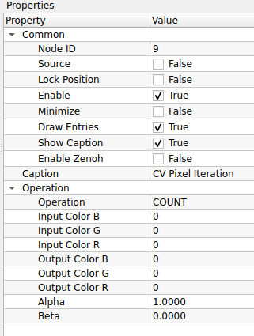
1. Common (การตั้งค่าทั่วไป)
| Property | Default | คำอธิบาย |
|---|---|---|
| Node ID | 9 |
เลขประจำตัวลำดับของโหนด |
| Source | False |
โหนดนี้ไม่ใช่ Source |
| Enable | True |
เปิด/ปิด การทำงานของโหนด |
| Show Caption | True |
แสดงแถบชื่อโหนด |
| Caption | CV Pixel Iteration |
ชื่อโหนดที่แสดงผลบน Workspace |
2. Operation (โหมดการทำงานและตัวแปร)
| Property | Default | คำอธิบาย |
|---|---|---|
| Operation | COUNT |
เลือกรูปแบบการคำนวณ: - COUNT: นับจำนวนพิกเซลที่มีสีตรงกับ Input Color - REPLACE: ค้นหาสี Input Color แล้วแทนที่ด้วย Output Color - LINEAR: ปรับค่าพิกเซลด้วยสูตร $Val \times \alpha + \beta$ (ปรับ Contrast/Brightness) - INVERSE: กลับค่าสี (Invert) ให้เป็นตรงกันข้าม |
| Input Color (B,G,R) | 0, 0, 0 |
ค่าสีเป้าหมายที่จะค้นหา (ใช้กับโหมด COUNT และ REPLACE) |
| Output Color (B,G,R) | 0, 0, 0 |
ค่าสีใหม่ที่จะนำไปแทนที่ (ใช้เฉพาะโหมด REPLACE) |
| Alpha | 1.0000 |
ตัวคูณ (Gain) สำหรับโหมด LINEAR (ค่า > 1 เพิ่ม Contrast) |
| Beta | 0.0000 |
ตัวบวก (Bias) สำหรับโหมด LINEAR (เพิ่มความสว่าง) |
เจาะลึก: แต่ละโหมดใช้งานตอนไหน?
- COUNT (การนับ): ใช้เช็คว่า "มีวัตถุสีนี้อยู่ในภาพเยอะแค่ไหน?" ผลลัพธ์ที่ได้จะเป็นตัวเลขจำนวนพิกเซล เหมาะใช้เป็นเงื่อนไข Logic (เช่น ถ้าเจอสีแดง > 100 จุด ให้แจ้งเตือน)
- REPLACE (การแทนที่): เหมือนถังสีในโปรแกรม Paint ใช้เปลี่ยนสีเจาะจง เช่น "เปลี่ยนพื้นหลังสีเขียว (Green Screen) ให้เป็นสีดำสนิท"
- LINEAR (ปรับแสง): ใช้ปรับภาพที่มืดหรือจืดชืด
- สูตร: $NewPixel = OldPixel \times Alpha + Beta$
- ตัวอย่าง: ตั้ง
Alpha = 1.5(เร่งสีเข้มขึ้น 50%) และBeta = 10(บวกความสว่างเพิ่มนิดหน่อย)
- INVERSE (กลับสี): เปลี่ยนภาพเป็นฟิล์มเนกาทีฟ (ขาวเป็นดำ ดำเป็นขาว) มักใช้เตรียมภาพก่อนส่งเข้า OCR หรือหาเส้นขอบ
- CV Bilateral Filter:

CV Bilateral Filter คือโหนดสำหรับการปรับปรุงคุณภาพภาพ (Image Filtering) ที่มีความสามารถพิเศษในการ "ลดสัญญาณรบกวนโดยยังคงรักษาความคมชัดของขอบวัตถุ (Edge-Preserving Smoothing)" หลักการทำงานคือจะเกลี่ยสีให้เนียนเฉพาะในพื้นที่ที่มีสีใกล้เคียงกันเท่านั้น หากเจอเส้นขอบที่สีตัดกันชัดเจน มันจะหยุดเกลี่ยทันที นิยมใช้มากในการทำ "โหมดหน้าเนียน (Beauty Face)" หรือทำภาพสไตล์การ์ตูน
ตารางการตั้งค่า (Properties)
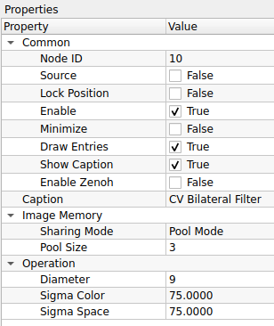
1. Common (การตั้งค่าทั่วไป)
| Property | Default | คำอธิบาย |
|---|---|---|
| Node ID | 10 |
เลขประจำตัวลำดับของโหนด |
| Caption | CV Bilateral Filter |
ชื่อโหนดที่แสดงผลบน Workspace |
2. Image Memory (การจัดการหน่วยความจำภาพ)
| Property | Default | คำอธิบาย |
|---|---|---|
| Sharing Mode | Pool Mode |
รูปแบบการจัดการหน่วยความจำ: - Pool Mode: ใช้หน่วยความจำเดิมวนซ้ำ (ประหยัด RAM) - Broadcast Mode: สร้างสำเนาข้อมูลใหม่แยกออกมา (ปลอดภัยที่สุดหากมีการต่อสายแยกไปหลายทาง) |
| Pool Size | 3 |
จำนวน Buffer ที่เตรียมไว้ (สำหรับ Pool Mode) |
3. Operation (การตั้งค่าความเบลอ)
| Property | Default | คำอธิบาย |
|---|---|---|
| Diameter | 9 |
ขนาดเส้นผ่านศูนย์กลางของพื้นที่รอบพิกเซลที่จะนำมาคำนวณ - ค่าปกติ: 5 - 9 (สำหรับ Real-time) - หมายเหตุ: ยิ่งค่าเยอะยิ่งคำนวณช้ามาก |
| Sigma Color | 75.0000 |
ค่าความต่างของสีที่ยอมให้ผสมกันได้ - ค่าน้อย: สีต้องใกล้เคียงกันจริงๆ ถึงจะเบลอ (รักษาขอบดีเยี่ยม) - ค่ามาก: สีต่างกันก็จับเบลอหมด (ภาพจะดูเป็นปื้นๆ เหมือนสีน้ำ) |
| Sigma Space | 75.0000 |
ค่าระยะห่างของพิกเซลที่มีผลต่อกัน - คล้ายกับ Sigma ใน Gaussian Blur คือยิ่งมากยิ่งเบลอเป็นวงกว้าง |
ความแตกต่าง: Bilateral vs Gaussian Blur
- Gaussian Blur: เบลอแบบไม่สนโลก ทุกอย่างมัวเท่ากันหมด (ทำงานเร็วมาก)
- Bilateral Filter: เบลอแบบเลือกที่รักมักที่ชัง (เนียนเฉพาะผิว ขอบยังคม) แต่แลกมาด้วยการกินสเปค CPU สูงกว่ามาก
Use Case: การทำหน้าเนียน (Skin Smoothing)
หากต้องการทำโหมดบิวตี้ แนะนำให้ตั้งค่าประมาณนี้:
- Diameter:
9(ไม่กว้างเกินไป) - Sigma Color:
75(เกลี่ยสีผิวที่มีรอยด่างดำให้กลืนกัน) - Sigma Space:
75(ระยะเกลี่ยพอประมาณ) - ผลลัพธ์: รูขุมขนและรอยสิวจะหายไป แต่ดวงตาและริมฝีปากยังคมกริบ!
- CV Morph Transformation:

CV Morph Transformation คือโหนดสำหรับการประมวลผลรูปทรงขั้นสูง (Advanced Morphological Operations) ซึ่งเป็นการนำฟังก์ชันพื้นฐานอย่าง Erode และ Dilate มาทำงานร่วมกันตามลำดับขั้นตอน เพื่อแก้ปัญหาทางภาพที่ซับซ้อน เช่น การกำจัด Noise โดยไม่ทำลายขนาดวัตถุ (Opening) หรือการเชื่อมวัตถุที่แตกหักเข้าด้วยกัน (Closing)
ตารางการตั้งค่า (Properties)

1. Common (การตั้งค่าทั่วไป)
| Property | Default | คำอธิบาย |
|---|---|---|
| Node ID | 11 |
เลขประจำตัวลำดับของโหนด |
| Caption | CV Morph Transformation |
ชื่อโหนดที่แสดงผลบน Workspace |
2. Image Memory (การจัดการหน่วยความจำภาพ)
| Property | Default | คำอธิบาย |
|---|---|---|
| Sharing Mode | Pool Mode |
รูปแบบการจัดการหน่วยความจำ: - Pool Mode: ใช้หน่วยความจำเดิมวนซ้ำ (ประหยัด RAM) - Broadcast Mode: สร้างสำเนาข้อมูลใหม่แยกออกมา (ปลอดภัยที่สุดหากมีการต่อสายแยกไปหลายทาง) |
| Pool Size | 3 |
จำนวน Buffer ที่เตรียมไว้ |
3. Operation (การตั้งค่ารูปแบบการแปลง)
| Property | Default | คำอธิบาย |
|---|---|---|
| Iterations (Mode) | MORPH_OPEN |
(ชื่อในโปรแกรมซ้ำกับช่องล่าง แต่คือโหมดการทำงาน) เลือกรูปแบบการแปลง: - MORPH_OPEN: Erode $\to$ Dilate (ลบ Noise จุดขาวๆ) - MORPH_CLOSE: Dilate $\to$ Erode (อุดรูดำๆ ในวัตถุ) - MORPH_GRADIENT: Dilate $-$ Erode (หาเส้นขอบวัตถุ) - MORPH_TOPHAT: Input $-$ Opening (เน้นส่วนสว่างกว่ารอบข้าง) - MORPH_BLACKHAT: Closing $-$ Input (เน้นส่วนมืดกว่ารอบข้าง) |
| Kernel Shape | MORPH_RECT |
รูปร่างของหน้าต่าง (Structuring Element): - MORPH_RECT: สี่เหลี่ยม (นิยมสุด) - MORPH_CROSS: กากบาท - MORTH_ELLIPSE: วงรี (ในโปรแกรมสะกดเป็น MORTH) |
| Kernel Size | 3 x 3 |
ขนาดหน้าต่างคำนวณ (Width x Height) ต้องเป็นเลขคี่ |
| Anchor Point | (0, 0) |
จุดอ้างอิงของ Kernel - (0,0): มุมซ้ายบน- (-1,-1): กึ่งกลาง (ค่ามาตรฐานทั่วไป) |
| Iterations (Count) | 1 |
จำนวนรอบในการทำซ้ำ (ยิ่งเยอะผลลัพธ์ยิ่งชัดเจน) |
4. Display (การแสดงผลขอบภาพ)
| Property | Default | คำอธิบาย |
|---|---|---|
| Border Type | DEFAULT |
วิธีการจัดการขอบภาพ: - DEFAULT: ใช้ค่ามาตรฐาน (Reflect 101) - CONSTANT: เติมขอบด้วยสีดำ - REPLICATE: ยืดขอบภาพออกไป - REFLECT: สะท้อนภาพเหมือนกระจก - WRAP: วนภาพกลับมาแปะ - TRANSPARENT: ไม่เปลี่ยนแปลง - ISOLATED: ไม่สนใจนอกพื้นที่ |
ข้อสังเกต: ชื่อ Iterations ซ้ำกัน
ในตาราง Operation ของโปรแกรม จะมีหัวข้อชื่อ "Iterations" ปรากฏอยู่ 2 บรรทัด:
- บรรทัดบน (Dropdown): คือ "โหมดการทำงาน" (เช่น MORPH_OPEN, MORPH_CLOSE)
- บรรทัดล่าง (ตัวเลข): คือ "จำนวนรอบ" (Loop count)
เวลาตั้งค่าโปรดสังเกตที่ Value ด้านขวาเป็นหลักครับ
เลือกใช้อะไรดี? (Cheat Sheet)
- ถ้าภาพมีจุดฝุ่นขาวๆ เต็มไปหมด: ใช้
MORPH_OPEN(ฝุ่นหาย วัตถุหลักยังอยู่เท่าเดิม) - ถ้าตัวหนังสือขาดๆ หายๆ หรือมีรูพรุน: ใช้
MORPH_CLOSE(รูจะถูกถมเต็ม ตัวหนังสือจะเชื่อมติดกัน) - ถ้าอยากได้แค่เส้นขอบ (Outline): ใช้
MORPH_GRADIENT(จะได้ผลลัพธ์คล้ายโหนด Canny Edge แต่เส้นหนากว่า)
- CV Filter 2D:

CV Filter 2D คือโหนดสำหรับการประมวลผลภาพด้วยการ "คอนโวลูชัน (Convolution)" ซึ่งเป็นการนำตารางตัวเลข (Kernel) ไปคำนวณร่วมกับพิกเซลในภาพเพื่อสร้างเอฟเฟกต์ต่างๆ โหนดนี้มีความยืดหยุ่นสูงสุด เพราะสามารถเปลี่ยนหน้าที่ได้หลากหลายตาม Kernel Type ที่เลือก เช่น อาจจะทำหน้าที่เป็นตัวทำให้ภาพคมชัด (Sharpen) หรือหาเส้นขอบ (Edge Detect) ก็ได้
ตารางการตั้งค่า (Properties)

1. Common (การตั้งค่าทั่วไป)
| Property | Default | คำอธิบาย |
|---|---|---|
| Node ID | 12 |
เลขประจำตัวลำดับของโหนด |
| Caption | CV Filter 2D |
ชื่อโหนดที่แสดงผลบน Workspace |
2. Image Memory (การจัดการหน่วยความจำภาพ)
| Property | Default | คำอธิบาย |
|---|---|---|
| Sharing Mode | Pool Mode |
รูปแบบการจัดการหน่วยความจำ: - Pool Mode: ใช้หน่วยความจำเดิมวนซ้ำ (ประหยัด RAM) - Broadcast Mode: สร้างสำเนาข้อมูลใหม่แยกออกมา (ปลอดภัยที่สุดหากมีการต่อสายแยกไปหลายทาง) |
| Pool Size | 3 |
จำนวน Buffer ที่เตรียมไว้ |
3. Operation (การตั้งค่า Kernel และข้อมูลภาพ)
| Property | Default | คำอธิบาย |
|---|---|---|
| Image Depth | CV_8U |
ความลึกของข้อมูลภาพผลลัพธ์ (Bit Depth): - CV_8U: 8-bit Unsigned (ค่า 0-255) เหมาะสำหรับภาพทั่วไป - CV_32F: 32-bit Float (เก็บค่าทศนิยมและค่าติดลบได้) เหมาะสำหรับการคำนวณที่ต้องการความละเอียดสูง หรือกันข้อมูลสูญหายจากการคำนวณที่ค่าล้น (Overflow) |
| Kernel Type | KERNEL_NULL |
รูปแบบของหน้ากากฟิลเตอร์ที่จะใช้ |
| Kernel Size | 3 |
ขนาดของหน้าต่างคำนวณ (เช่น 3x3, 5x5) |
| Delta | 0.0000 |
ค่าที่จะบวกเพิ่มเข้าไปในผลลัพธ์สุดท้าย (Brightness Offset) - ใช้เพื่อดึงค่าแสงขึ้นในกรณีที่ผลลัพธ์มืดเกินไป |
4. Display (การแสดงผลขอบภาพ)
| Property | Default | คำอธิบาย |
|---|---|---|
| Border Type | DEFAULT |
วิธีการจัดการขอบภาพเมื่อ Kernel ยื่นออกไปนอกภาพ: - DEFAULT: ใช้ค่ามาตรฐาน - CONSTANT: เติมขอบด้วยสีดำ (ค่าคงที่) - REPLICATE: ยืดขอบภาพออกไป - REFLECT: สะท้อนภาพเหมือนกระจก - WRAP: วนภาพกลับมาแปะ - TRANSPARENT: ไม่เปลี่ยนแปลงพิกเซล - ISOLATED: ไม่สนใจพื้นที่นอกขอบเขต |
ระวังเรื่อง Image Depth (CV_32F)
การเลือกใช้ CV_32F จะทำให้ข้อมูลภาพเปลี่ยนจากตัวเลขจำนวนเต็ม (0-255) เป็นทศนิยม (Float) ซึ่งอาจทำให้ โหนดบางตัวแสดงผลไม่ได้ (จอดำ) หรือ Error
- ข้อแนะนำ: หากใช้
CV_32Fเพื่อคำนวณเสร็จแล้ว ควรแปลงกลับเป็นCV_8Uด้วยโหนด Convert Scale Abs หรือ Normalize ก่อนส่งไปแสดงผลที่หน้าจอ
- CV In Range:

CV In Range คือโหนดสำหรับการแยกวัตถุออกจากพื้นหลัง (Segmentation) โดยใช้วิธี "กำหนดค่าขีดจำกัด (Thresholding)" เพื่อแปลงภาพให้เป็นขาว-ดำ (Binary) รองรับทั้งการกำหนดค่าเอง (Global), การให้ AI หาค่าให้ (Automatic), และการปรับค่าตามสภาพแสงเฉพาะจุด (Adaptive)
ตารางการตั้งค่า (Properties)
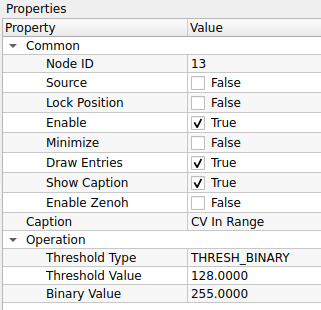
1. Common (การตั้งค่าทั่วไป)
| Property | Default | คำอธิบาย |
|---|---|---|
| Node ID | 13 |
เลขประจำตัวลำดับของโหนด |
| Caption | CV In Range |
ชื่อโหนดที่แสดงผลบน Workspace |
2. Operation (การตั้งค่าการตัดสี)
| Property | Default | คำอธิบาย |
|---|---|---|
| Threshold Type | THRESH_BINARY |
รูปแบบเงื่อนไขการตัดค่าสี (ดูคำอธิบายละเอียดด้านล่าง): 1. แบบกำหนดค่าเอง (Manual): - THRESH_BINARY: ขาว/ดำ (ยอดนิยมสุด)- THRESH_BINARY_INV: ดำ/ขาว (กลับสี)- THRESH_TRUNC: ตัดยอดกราฟ (ถ้าเกินค่ากำหนด ให้ปรับลงมาเท่าค่ากำหนด)- THRESH_TOZERO: ถ้าต่ำกว่าเกณฑ์ ให้เป็นสีดำ (ส่วนที่เหลือเก็บสีเดิมไว้)- THRESH_TOZERO_INV: ถ้าเกินเกณฑ์ ให้เป็นสีดำ2. แบบอัตโนมัติ (Automatic): - THRESH_OTSU: คำนวณค่าจุดตัดที่ดีที่สุดให้เอง (เหมาะกับภาพที่มี 2 โทนสีชัดเจน)- THRESH_TRIANGLE: คำนวณด้วยวิธี Triangle (เหมาะกับภาพที่มี Histogram ยอดเดียว)3. แบบปรับตัว (Adaptive): - ADAPTIVE_THRESH_MEAN_C: ใช้ค่าเฉลี่ยของพื้นที่รอบๆ เป็นเกณฑ์- ADAPTIVE_THRESH_GAUSSIAN_C: ใช้ค่าเฉลี่ยแบบถ่วงน้ำหนัก (Gaussian) เป็นเกณฑ์ |
| Threshold Value | 128.0000 |
ค่าความสว่างจุดตัด (0-255) - หมายเหตุ: หากเลือกโหมด OTSU หรือ TRIANGLE ค่านี้จะถูกเมิน (เพราะระบบหาค่าให้เอง) |
| Binary Value | 255.0000 |
ค่าสีที่จะนำไปแทนที่เมื่อผ่านเงื่อนไข (ปกติใช้ 255 เพื่อให้เป็นสีขาวสุด) |
เลือกใช้ Type ไหนดี? (Cheat Sheet)
- งานทั่วไป (แสงสว่างเท่ากันทั้งภาพ): ใช้
THRESH_BINARYแล้วปรับค่า Threshold Value เอง - ขี้เกียจปรับค่าเอง: ใช้
THRESH_OTSU(ระบบจะหาค่าที่แยกวัตถุกับพื้นหลังได้ดีที่สุดให้) - งานปราบเซียน (แสงส่องมาแค่ฝั่งเดียว/มีเงาบัง): ใช้
ADAPTIVE_THRESH_GAUSSIAN_C(ระบบจะคำนวณเกณฑ์ตัดแสงแยกกันทุกจุด ทำให้เห็นตัวหนังสือชัดแม้ในเงามืด)
ข้อสังเกตเรื่องชื่อโหนด
โหนดนี้ชื่อ CV In Range แต่ฟังก์ชันภายในคือ Threshold อย่างเต็มรูปแบบ หากคุณต้องการใช้งานฟังก์ชัน inRange จริงๆ (ที่กำหนดช่วงสี Min-Max เช่น เอาเฉพาะสีแดง) อาจต้องตรวจสอบว่ามีโหนดอื่นชื่อ CV Color Threshold หรือไม่ หรือต้องประยุกต์ใช้โหนดนี้หลายตัวร่วมกัน
- CV Flood Fill:

CV Flood Fill คือโหนดสำหรับการ "เทสี" ลงในพื้นที่ที่กำหนด (Region Growing) โดยเริ่มจากจุดเริ่มต้น (Seed Point) แล้วขยายวงกว้างออกไปเรื่อยๆ ตราบเท่าที่พิกเซลข้างเคียงยังมีสีเหมือนหรือใกล้เคียงกับจุดเดิม นิยมใช้ในการเติมเต็มรูโหว่ของวัตถุ (Hole Filling) หรือใช้แยกวัตถุออกจากพื้นหลัง
ตารางการตั้งค่า (Properties)

1. Common (การตั้งค่าทั่วไป)
| Property | Default | คำอธิบาย |
|---|---|---|
| Node ID | 14 |
เลขประจำตัวลำดับของโหนด |
| Caption | CV Flood Fill |
ชื่อโหนดที่แสดงผลบน Workspace |
2. Image Memory (การจัดการหน่วยความจำภาพ)
| Property | Default | คำอธิบาย |
|---|---|---|
| Sharing Mode | Pool Mode |
รูปแบบการจัดการหน่วยความจำ: - Pool Mode: ใช้หน่วยความจำเดิมวนซ้ำ (ประหยัด RAM) - Broadcast Mode: สร้างสำเนาข้อมูลใหม่แยกออกมา (ปลอดภัยที่สุดหากมีการต่อสายแยกไปหลายทาง) |
| Pool Size | 3 |
จำนวน Buffer ที่เตรียมไว้ |
3. Operation (การตั้งค่าการเทสี)
| Property | Default | คำอธิบาย |
|---|---|---|
| Seed Point | (0, 0) |
จุดเริ่มต้นที่จะเริ่มเทสี (X, Y) - สำคัญ: ในการใช้งานจริง ค่านี้มักจะรับมาจาก Mouse Click หรือจุด Centroid ของวัตถุ |
| Fill Color (B,G,R) | 0, 0, 0 |
สีใหม่ที่จะเทลงไป (สำหรับภาพสี) |
| Fill Color Gray | 0 |
ค่าความสว่างที่จะเทลงไป (สำหรับภาพขาวดำ Grayscale) |
| Flags | 4 neighbor pixels |
เงื่อนไขการไหลของสี: - 4 neighbor pixels: สีไหลไปทาง ซ้าย-ขวา-บน-ล่าง เท่านั้น (เหมาะกับรูปทรงเรขาคณิต) - 8 neighbor pixels: สีไหลไปรอบทิศรวมถึงแนวทแยง (เหมาะกับภาพธรรมชาติ) - FLOODFILL_MASK_ONLY: ไม่เปลี่ยนสีในภาพจริง แต่จะไปสร้างพื้นที่สีขาวบน "ภาพ Mask" แทน - FLOODFILL_FIXED_RANGE: เปรียบเทียบสีกับ "จุดเริ่มต้น (Seed)" เท่านั้น (ถ้าไม่ติ๊ก จะเทียบกับพิกเซลข้างๆ ที่เพิ่งเทไป ซึ่งสีอาจเพี้ยนไปเรื่อยๆ ได้) |
4. Display (การแสดงผลขอบเขต)
| Property | Default | คำอธิบาย |
|---|---|---|
| Define Boundaries | False |
เปิด/ปิด การกำหนดกรอบพื้นที่ (Bounding Box) |
| Boundary Point 1 | (0, 0) |
จุดมุมที่ 1 ของกรอบขอบเขต |
| Boundary Point 2 | (0, 0) |
จุดมุมที่ 2 ของกรอบขอบเขต |
| Mask Color | 255 |
ค่าสีที่จะใช้เขียนลงใน Mask (กรณีที่มีการสร้าง Mask จากการเทสี) |
เทคนิค: FIXED_RANGE คืออะไร?
- ถ้าไม่ใช้ Fixed Range: สีจะไหลไปเรื่อยๆ เหมือนไฟลามทุ่ง ถ้าสีเปลี่ยนทีละนิดๆ มันก็ไหลไปได้เรื่อยๆ จนทั่วภาพ
- ถ้าใช้ Fixed Range (แนะนำ): ระบบจะยึด "สีของจุดเริ่มต้น" เป็นหลักเสมอ ถ้าจุดไหนสีต่างจากจุดเริ่มต้นเกินเกณฑ์ มันจะหยุดทันที (ช่วยคุมไม่ให้สีไหลเลอะเทอะออกนอกวัตถุ)
Use Case: การอุดรู (Hole Filling)
หากเราทำ Threshold แล้วได้วัตถุสีขาวที่มี "รูสีดำ" อยู่ข้างใน: 1. ใช้ Flood Fill เทสีขาวลงไปในรูสีดำนั้น 2. ผลลัพธ์คือวัตถุจะทึบตันสมบูรณ์ (Solid object)
- CV Median Blur:

CV Median Blur คือโหนดสำหรับการปรับปรุงคุณภาพภาพ (Image Filtering) ด้วยวิธี "ค่ามัธยฐาน (Median Filtering)" หลักการทำงานคือระบบจะนำพิกเซลรอบๆ มาเรียงลำดับจากน้อยไปมาก แล้วเลือกค่าที่อยู่ "ตรงกลาง" (Median) มาแทนที่พิกเซลเดิม วิธีนี้มีประสิทธิภาพสูงสุดในการกำจัดจุดรบกวนแบบฉับพลัน (Impulse Noise) หรือที่เรียกว่า Salt-and-Pepper Noise โดยยังคงรักษาความคมชัดของเส้นขอบวัตถุไว้ได้ดีกว่าการเบลอแบบเฉลี่ย (Mean/Gaussian)
ตารางการตั้งค่า (Properties)
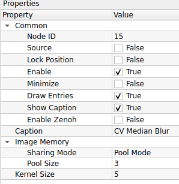
1. Common (การตั้งค่าทั่วไป)
| Property | Default | คำอธิบาย |
|---|---|---|
| Node ID | 15 |
เลขประจำตัวลำดับของโหนด |
| Caption | CV Median Blur |
ชื่อโหนดที่แสดงผลบน Workspace |
2. Image Memory (การจัดการหน่วยความจำภาพ)
| Property | Default | คำอธิบาย |
|---|---|---|
| Sharing Mode | Pool Mode |
รูปแบบการจัดการหน่วยความจำ: - Pool Mode: ใช้หน่วยความจำเดิมวนซ้ำ (ประหยัด RAM) - Broadcast Mode: สร้างสำเนาข้อมูลใหม่แยกออกมา (ปลอดภัยที่สุดหากมีการต่อสายแยกไปหลายทาง) |
| Pool Size | 3 |
จำนวน Buffer ที่เตรียมไว้ |
3. Operation (การตั้งค่าความเบลอ)
| Property | Default | คำอธิบาย |
|---|---|---|
| Kernel Size | 5 |
ขนาดหน้าต่างที่จะนำมาคำนวณ (Aperture Linear Size) - กฎเหล็ก: ค่าต้องเป็น เลขคี่ที่มากกว่า 1 เท่านั้น (เช่น 3, 5, 7, 9...) - 3: ลบจุดรบกวนเล็กน้อย ขอบยังคมกริบ - 5: ค่ามาตรฐาน ลบจุดรบกวนได้ดี - 7+: เริ่มทำให้ภาพดูเหมือนภาพวาดสีน้ำมัน (รายละเอียดเล็กๆ จะหายไป) |
Median Blur vs Gaussian Blur ใช้อันไหนดี?
- Gaussian Blur: ใช้เมื่อต้องการทำภาพให้นวล เบลอฉากหลัง หรือลด Noise ทั่วไปที่กระจายสม่ำเสมอ
- Median Blur (ตัวนี้): ใช้เมื่อเจอภาพที่มี "จุดเม็ดสีขาว/ดำ กระจายอยู่" (Dead Pixel หรือฝุ่นเกาะเลนส์) เพราะมันจะลบจุดพวกนี้หายวับไปเลยโดยที่ภาพหลักไม่เสียความคมชัด
ข้อควรระวัง
การใช้ Kernel Size ที่ใหญ่เกินไปกับโหนด Median Blur จะทำให้ภาพดูแบนและดูเป็นการ์ตูน (Cartoonish) และที่สำคัญคือ กินทรัพยากรเครื่องมากกว่า Gaussian Blur ค่อนข้างมากครับ
9. Image Operation (การกระทำกับภาพ)
การนำภาพสองภาพมาทำปฏิกิริยากันทางคณิตศาสตร์

- CV Overlay Image:

CV Overlay Image คือโหนดสำหรับการซ้อนภาพ (Image Composition) โดยนำภาพขนาดเล็ก (Overlay) ไปวางทับบนภาพหลัก (Background) ณ ตำแหน่งพิกัด X, Y ที่กำหนด นิยมใช้ในการใส่โลโก้บริษัท, การแสดงผลแบบจอซ้อนจอ (Picture-in-Picture), หรือการนำผลลัพธ์ที่ตรวจจับได้ (ROI) กลับไปแปะคืนที่เดิม
ตารางการตั้งค่า (Properties)

1. Common (การตั้งค่าทั่วไป)
| Property | Default | คำอธิบาย |
|---|---|---|
| Node ID | 16 |
เลขประจำตัวลำดับของโหนด |
| Caption | CV Overlay Image |
ชื่อโหนดที่แสดงผลบน Workspace |
2. Position (การกำหนดตำแหน่ง)
| Property | Default | คำอธิบาย |
|---|---|---|
| X Offset | 0 |
ระยะห่างจากขอบซ้ายของภาพหลัก (แกน X) - ค่าบวก (+) จะขยับภาพไปทางขวา |
| Y Offset | 0 |
ระยะห่างจากขอบบนของภาพหลัก (แกน Y) - ค่าบวก (+) จะขยับภาพลงด้านล่าง |
ระบบพิกัดภาพ (Coordinate System)
ในคอมพิวเตอร์กราฟิก จุด (0, 0) จะอยู่ที่ "มุมซ้ายบน" ของภาพเสมอครับ
- X Offset: ยิ่งมาก ภาพยิ่งเลื่อนไปขวา
- Y Offset: ยิ่งมาก ภาพยิ่งเลื่อนลงล่าง
Use Case: การทำ Picture-in-Picture
หากคุณมีกล้อง 2 ตัว (กล้องมุมกว้าง และกล้องซูม): 1. ต่อสายจากกล้องมุมกว้างเข้า Input หลัก (Background) 2. ต่อสายจากกล้องซูม (ที่ย่อขนาดแล้ว) เข้า Input รอง (Overlay) 3. ปรับ X Offset, Y Offset เพื่อย้ายภาพกล้องซูมไปไว้ที่มุมจอ 4. คุณจะได้ภาพวงจรปิดที่มีจอเล็กซ้อนอยู่มุมขวา เหมือนในหนังเลยครับ!
- CV Addition:

CV Addition คือโหนดสำหรับการคำนวณทางคณิตศาสตร์ด้วยการ "บวก" ค่าพิกเซลของภาพ 2 ภาพเข้าด้วยกัน ($Dst = Src1 + Src2$) ผลลัพธ์ที่ได้คือภาพที่สว่างขึ้น (เพราะค่าสีเพิ่มขึ้น) นิยมใช้ในการรวมเลเยอร์แสง หรือซ้อนภาพเอฟเฟกต์แสงสว่าง (Light Leaks) ลงบนภาพหลัก
ตารางการตั้งค่า (Properties)
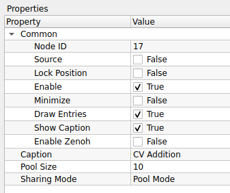
| Property | Default | คำอธิบาย |
|---|---|---|
| Node ID | 17 |
เลขประจำตัวลำดับของโหนด |
| Caption | CV Addition |
ชื่อโหนดที่แสดงผลบน Workspace |
| Pool Size | 10 |
จำนวน Buffer ที่เตรียมไว้ (สังเกต: โหนดนี้ตั้งค่ามาสูงกว่าปกติที่ 3 อาจเพราะรองรับการประมวลผลที่รวดเร็วหรือมีการพักข้อมูลเยอะ) |
| Sharing Mode | Pool Mode |
รูปแบบการจัดการหน่วยความจำ: - Pool Mode: ใช้หน่วยความจำเดิมวนซ้ำ (ประหยัด RAM) - Broadcast Mode: สร้างสำเนาข้อมูลใหม่แยกออกมา (ปลอดภัยที่สุดหากมีการต่อสายแยกไปหลายทาง) |
ระวังเรื่องแสงจ้าเกิน (Saturation)
การบวกค่าสีจะทำให้ค่าตัวเลขสูงขึ้นเรื่อยๆ จนถึงขีดจำกัดที่ 255 (สีขาว)
- หากภาพต้นฉบับสว่างอยู่แล้ว เมื่อนำมาบวกกัน ภาพผลลัพธ์อาจจะ "ขาวโพลน" จนมองไม่เห็นรายละเอียด (Overexposed)
- หากต้องการผสมภาพโดยไม่ให้สว่างเกินไป แนะนำให้ใช้โหนด CV Add Weighted (ถ้ามี) ซึ่งจะสามารถปรับลดความเข้มของแต่ละภาพได้
เทคนิค: ใช้เพิ่มความสว่าง
คุณสามารถใช้โหนดนี้ "เพิ่มความสว่าง (Brightness)" ให้ภาพได้ โดยการนำภาพหลักมาบวกกับ "ภาพสีเทา หรือ สีดำที่มีค่าสีน้อยๆ" (Scalar) ค่าความสว่างก็จะถูกบวกเพิ่มเข้าไปในทุกพิกเซลครับ
- CV Matrix Operation:

CV Matrix Operation คือโหนดสำหรับการประมวลผลทางคณิตศาสตร์ระหว่างภาพ 2 ภาพ (Matrix Arithmetic) แบบพิกเซลต่อพิกเซล ช่วยให้คุณสามารถนำภาพมาคำนวณหาผลลัพธ์ใหม่ได้หลากหลาย ทั้งการผสมภาพ (Arithmetic), การหาความต่าง, หรือการเปรียบเทียบค่าเพื่อสร้างเงื่อนไข (Comparison)
ตารางการตั้งค่า (Properties)

| Property | Default | คำอธิบาย |
|---|---|---|
| Node ID | 18 |
เลขประจำตัวลำดับของโหนด |
| Caption | CV Matrix Operation |
ชื่อโหนดที่แสดงผลบน Workspace |
| Operator | + |
เลือกรูปแบบการคำนวณ (ดูรายละเอียดด้านล่าง): 1. คณิตศาสตร์ (Arithmetic): +, -, *, /2. การเปรียบเทียบ (Comparison): >, >=, <, <=3. ค่าสูงสุด/ต่ำสุด (Extremum): MAX, MIN |
เจาะลึก: แต่ละเครื่องหมายทำหน้าที่อะไร?
กลุ่มที่ 1: คณิตศาสตร์ (ให้ผลลัพธ์เป็นภาพโทนสีเทา/สีปกติ)
* + (Add): นำค่าสีมารวมกัน (ภาพจะสว่างขึ้น)
* - (Subtract): ใช้หา "ความแตกต่าง" (ส่วนที่เหมือนกันลบกันได้ 0 คือสีดำ ส่วนที่ต่างกันจะสว่างขึ้น)
* * (Multiply): ใช้บังภาพ (Masking) สีดำคูณอะไรก็ได้ 0 (หายไป), สีขาวคูณอะไรก็ได้เท่าเดิม (คงอยู่)
* / (Divide): ใช้ลดทอนค่าแสง หรือหาอัตราส่วนของความสว่าง
กลุ่มที่ 2: การเปรียบเทียบ (ให้ผลลัพธ์เป็นภาพขาว-ดำ เท่านั้น)
* >, >=, <, <=: ใช้เทียบค่าพิกเซลตำแหน่งเดียวกันของทั้ง 2 ภาพ
* ถ้าจริง: ได้ค่า 255 (สีขาว)
* ถ้าเท็จ: ได้ค่า 0 (สีดำ)
* ประโยชน์: ใช้สร้าง Mask แบบ Dynamic เช่น "เอาเฉพาะส่วนที่ภาพ A สว่างกว่าภาพ B"
กลุ่มที่ 3: เลือกค่าสุดโต่ง (Blend Modes)
* MAX (Lighten): เทียบกันพิกเซลต่อพิกเซล ใครสว่างกว่าเอาคนนั้น (ผลลัพธ์เหมือนโหมด Lighten ใน Photoshop)
* MIN (Darken): เทียบกันพิกเซลต่อพิกเซล ใครมืดกว่าเอาคนนั้น
ข้อควรระวังเรื่องการหาร (/)
การหารด้วย 0 (Divide by Zero) อาจทำให้โปรแกรมเกิดข้อผิดพลาดหรือได้ผลลัพธ์เป็นค่าสูงสุด/ต่ำสุด ขึ้นอยู่กับการจัดการ Error ของระบบ แนะนำให้ระวังหากภาพตัวหารมีพื้นที่สีดำสนิท (ค่า 0)
- CV Blend Images:

CV Blend Images คือโหนดสำหรับการผสมภาพ 2 ภาพเข้าด้วยกันแบบเชิงเส้น (Linear Blending) โดยใช้วิธีถ่วงน้ำหนัก (Weighted Sum) ตามสูตร $Dst = (Src1 \times \alpha) + (Src2 \times \beta) + \gamma$ ช่วยให้สร้างเอฟเฟกต์ภาพโปร่งแสง หรือการเปลี่ยนผ่านภาพ (Transition) ได้อย่างนุ่มนวล
ตารางการตั้งค่า (Properties)
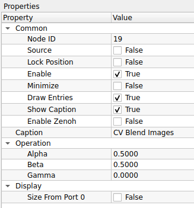
| Property | Default | คำอธิบาย |
|---|---|---|
| Node ID | 19 |
เลขประจำตัวลำดับของโหนด |
| Caption | CV Blend Images |
ชื่อโหนดที่แสดงผลบน Workspace |
| Alpha | 0.5000 |
น้ำหนักความเข้มของ ภาพที่ 1 (Input แรก) - 1.0: เห็นภาพแรกชัดสุด (100%) - 0.0: ไม่เห็นภาพแรกเลย |
| Beta | 0.5000 |
น้ำหนักความเข้มของ ภาพที่ 2 (Input สอง) - ปกติมักตั้งให้สัมพันธ์กับ Alpha (เช่น ถ้า Alpha 0.7, Beta ควรเป็น 0.3 เพื่อให้รวมกันได้ 1) |
| Gamma | 0.0000 |
ค่าความสว่างที่จะบวกเพิ่มเข้าไปในผลลัพธ์สุดท้าย (Brightness Offset) |
| Size From Port 0 | False |
ตัวช่วยปรับขนาดภาพอัตโนมัติ - True: บังคับให้ภาพที่ 2 ยืด/หด ขนาดให้เท่ากับภาพที่ 1 (Port 0) เสมอก่อนนำมาผสม (ป้องกัน Error เรื่องขนาดภาพไม่เท่ากัน) - False: ใช้ขนาดภาพตามจริง (หากขนาดไม่เท่ากัน โปรแกรมอาจแจ้ง Error) |
สูตรการผสมภาพ (The Recipe)
- ภาพซ้อนมาตรฐาน (50-50):
Alpha = 0.5,Beta = 0.5 - ภาพแรกจางๆ บนภาพหลังชัดๆ:
Alpha = 0.3,Beta = 0.9 - เพิ่มความสว่าง (Over Exposure):
Alpha = 1.0,Beta = 1.0(ค่าสีจะรวมกันจนสว่างจ้า)
ข้อควรระวังเรื่องขนาดภาพ
ฟังก์ชัน addWeighted ของ OpenCV บังคับว่า "ภาพทั้ง 2 ต้องมีขนาด (Width x Height) เท่ากันเป๊ะ"
- หากคุณต่อสายมาจากแหล่งที่ขนาดต่างกัน (เช่น กล้องคนละตัว) อย่าลืมติ๊ก
Size From Port 0เป็น True เพื่อให้โหนดช่วยปรับขนาดให้โดยอัตโนมัติครับ ไม่งั้นโปรแกรมจะหยุดทำงาน
- CV Template Matcing:

CV Template Matching คือโหนดสำหรับการค้นหาตำแหน่งของวัตถุในภาพ โดยนำภาพต้นแบบขนาดเล็ก (Template) ไปเลื่อนทาบเปรียบเทียบกับภาพหลักทีละจุด (Sliding Window) เพื่อหาตำแหน่งที่มีความคล้ายคลึงกันมากที่สุด เมื่อเจอแล้วจะทำการวาดกรอบสี่เหลี่ยม (Bounding Box) ล้อมรอบวัตถุนั้นให้ทันที
ตารางการตั้งค่า (Properties)

| Property | Default | คำอธิบาย |
|---|---|---|
| Node ID | 20 |
เลขประจำตัวลำดับของโหนด |
| Caption | CV Template Matching |
ชื่อโหนดที่แสดงผลบน Workspace |
| Matching Method | TM_SQDIFF |
วิธีการคำนวณความเหมือน: - TM_SQDIFF: หาจุดต่าง (ยิ่งน้อยยิ่งเหมือน) - TM_SQDIFF_NORMED: หาจุดต่างแบบปรับฐาน (ทนต่อแสงเงาเปลี่ยน) - TM_CCORR: หาความเหมือน (ยิ่งมากยิ่งเหมือน) - TM_CCORR_NORMED: หาความเหมือนแบบปรับฐาน - TM_CCOEFF: หาความสัมพันธ์ของสัมประสิทธิ์ - TM_CCOEFF_NORMED: (นิยมใช้ที่สุด) แม่นยำสูงแม้แสงเปลี่ยน |
| Line Color (B,G,R) | 0, 0, 0 |
สีของกรอบสี่เหลี่ยมที่จะวาดล้อมรอบวัตถุที่เจอ |
| Line Thickness | 3 |
ความหนาของเส้นกรอบ |
| Line Type | LINE_8 |
รูปแบบของเส้น: - LINE_8: เส้นเชื่อมต่อ 8 ทิศทาง (มาตรฐาน) - LINE_4: เส้นเชื่อมต่อ 4 ทิศทาง (เส้นจะดูเหลี่ยมกว่า) - LINE_AA: เส้นลบรอยหยัก (Anti-Aliased) เส้นจะนวลสวยที่สุด |
เทคนิค: ทำไมต้องใช้แบบ NORMED?
หากคุณเลือกใช้ตัวเลือกที่มีคำว่า _NORMED (เช่น TM_CCOEFF_NORMED) ระบบจะทำการคำนวณโดยหารเฉลี่ยค่าความสว่างให้
- ข้อดี: ช่วยให้หาวัตถุเจอ "แม้ว่าแสงในภาพจะเปลี่ยนไป" (เช่น ภาพต้นแบบถ่ายตอนสว่าง แต่ภาพจริงถ่ายตอนมืดลงนิดหน่อย)
- ข้อเสีย: อาจจะคำนวณช้ากว่าแบบธรรมดาเล็กน้อย
ระวัง! วิธีการอ่านค่าไม่เหมือนกัน
- กลุ่ม SQDIFF: ต้องหาค่า ต่ำสุด (Min Location) ถึงจะเป็นจุดที่เจอวัตถุ
- กลุ่ม CCORR / CCOEFF: ต้องหาค่า สูงสุด (Max Location) ถึงจะเป็นจุดที่เจอวัตถุ
- CV Resize:

CV Resize คือโหนดสำหรับการปรับเปลี่ยนขนาดความกว้างและความสูงของภาพ (Image Rescaling) ให้เป็นไปตามค่าพิกเซลที่กำหนด นิยมใช้เพื่อปรับขนาดภาพให้เท่ากันทุกเฟรม (Standardization) หรือลดขนาดภาพเพื่อเพิ่มความเร็วในการประมวลผล
ตารางการตั้งค่า (Properties)
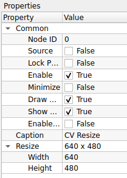
| Property | Default | คำอธิบาย |
|---|---|---|
| Node ID | 0 |
เลขประจำตัวลำดับของโหนด (โหนดเริ่มต้น) |
| Caption | CV Resize |
ชื่อโหนดที่แสดงผลบน Workspace |
| Width | 640 |
ความกว้างใหม่ที่ต้องการ (หน่วยเป็นพิกเซล) |
| Height | 480 |
ความสูงใหม่ที่ต้องการ (หน่วยเป็นพิกเซล) |
ระวังเรื่องสัดส่วนภาพ (Aspect Ratio)
การกำหนดค่า Width และ Height เองโดยอิสระ อาจทำให้ภาพเกิดการ "บิดเบี้ยว (Distortion)" ได้ หากสัดส่วนใหม่ไม่ตรงกับสัดส่วนเดิม
- ตัวอย่าง: ภาพเดิมเป็นสี่เหลี่ยมจัตุรัส ถ้าบีบให้เป็นสี่เหลี่ยมผืนผ้า ภาพวัตถุข้างในจะดูแบนหรือยืดผิดรูปทันที
Node ID 0 คืออะไร?
ในระบบ Programming หรือ Data Flow ส่วนใหญ่ ID 0 มักจะหมายถึง "จุดเริ่มต้น (Entry Point)" หรือโหนดแรกสุดที่ถูกสร้างขึ้น หากโหนดนี้คือ Resize แสดงว่าระบบของคุณอาจจะมีการบังคับขนาดภาพตั้งแต่นำเข้า (Input) เลยเพื่อมาตรฐานเดียวกันทั้งระบบครับ
- CV ROI:

CV ROI (Region of Interest) คือโหนดสำหรับการกำหนด "พื้นที่ที่สนใจ" หรือการตัดภาพ (Cropping) เพื่อเลือกเฉพาะส่วนหนึ่งของภาพมาประมวลผลต่อ ช่วยลดภาระการทำงานของระบบ (เพราะภาพเล็กลง) และช่วยตัดสิ่งรบกวนรอบข้างที่ไม่จำเป็นออกไป
ตารางการตั้งค่า (Properties)

| Property | Default | คำอธิบาย |
|---|---|---|
| Node ID | 1 |
เลขประจำตัวลำดับของโหนด |
| Caption | CV ROI |
ชื่อโหนดที่แสดงผลบน Workspace |
| X | 0 |
พิกัดเริ่มต้นแนวนอน (นับจากซ้ายไปขวา) |
| Y | 0 |
พิกัดเริ่มต้นแนวตั้ง (นับจากบนลงล่าง) |
| Width | 640 |
ความกว้างของพื้นที่ที่ต้องการตัดออกมา |
| Height | 480 |
ความสูงของพื้นที่ที่ต้องการตัดออกมา |
เทคนิค: ระบบพิกัดภาพ (Coordinate System)
ในคอมพิวเตอร์กราฟิก จุดกำเนิด (0, 0) จะอยู่ที่ "มุมซ้ายบนสุด" ของภาพ
- X: เพิ่มขึ้นไปทางขวา
- Y: เพิ่มขึ้นลงด้านล่าง
- ดังนั้นการตั้งค่า ROI คือการบอกว่า "เริ่มตัดที่จุด (X,Y) แล้วกวาดความกว้างไปทางขวา (Width) และกวาดลงล่าง (Height)"
ระวัง! พื้นที่เกินขอบเขต (Out of Bounds)
หากคุณกำหนดค่า X, Y หรือ Width, Height รวมกันแล้ว "เกินขนาดของภาพต้นฉบับ" (เช่น ภาพกว้าง 640 แต่ตั้ง ROI ไปเริ่มที่ 600 แล้วกว้างอีก 100 = 700) โปรแกรมอาจจะแจ้ง Error หรือหยุดทำงานได้ ควรตรวจสอบขนาดภาพต้นฉบับให้แน่ใจก่อนตั้งค่าครับ
Use Case: การโฟกัสเฉพาะจุด
สมมติคุณตั้งกล้องดูสายพานการผลิต แต่ต้องการตรวจเช็คแค่ "ฉลากสินค้า" ที่อยู่ตรงกลางภาพ 1. ใช้ CV ROI ตัดเฉพาะส่วนกลางภาพออกมา 2. ส่งภาพที่ตัดแล้วไปเข้ากระบวนการอ่านบาร์โค้ด หรือ OCR 3. ผลลัพธ์: ระบบทำงานเร็วขึ้นมาก เพราะไม่ต้องเสียเวลาสแกนพื้นที่ว่างรอบๆ
- CV Bitwise Operation:

CV Bitwise Operation คือโหนดสำหรับการดำเนินการทางตรรกะ (Logic) ในระดับบิตของแต่ละพิกเซล นิยมใช้เป็นเครื่องมือหลักในการทำ "หน้ากาก (Masking)" เพื่อตัดส่วนที่ไม่ต้องการ, การรวมภาพขาวดำ, หรือการหาความแตกต่างของรูปทรง
ตารางการตั้งค่า (Properties)

| Property | Default | คำอธิบาย |
|---|---|---|
| Node ID | 2 |
เลขประจำตัวลำดับของโหนด |
| Caption | CV Bitwise Operation |
ชื่อโหนดที่แสดงผลบน Workspace |
| Bitwise | AND |
คำสั่งตรรกะที่ต้องการใช้งาน: - AND: เอาเฉพาะส่วนที่ "ซ้อนทับกัน" (Intersection) ใช้สำหรับบังภาพ (Masking) - OR: เอาส่วนที่มี "สีขาวทั้งหมด" มารวมกัน (Union) ใช้รวม Mask หลายชิ้นเข้าด้วยกัน - XOR: เอาเฉพาะส่วนที่ "ต่างกัน" (Difference) ถ้าเหมือนกันจะเป็นสีดำ - NOT: กลับค่าสี (Invert) ขาวเป็นดำ ดำเป็นขาว |
เจาะลึก: เลือกใช้อันไหนดี?
- ใช้
ANDเมื่อ: ต้องการ "ตัดภาพ" (เช่น มีภาพคน กับภาพ Mask สีขาวที่เป็นตัวคน -> พอ AND กัน จะได้ภาพคนลอยอยู่บนพื้นดำ) - ใช้
ORเมื่อ: ต้องการ "รวมภาพ" (เช่น มี Mask ของรถยนต์ กับ Mask ของคนเดินเท้า -> พอ OR กัน จะได้ Mask ที่รวมทั้งรถและคนไว้ด้วยกัน) - ใช้
NOTเมื่อ: ต้องการ "กลับด้าน" (เช่น มี Mask ที่เจาะรูตรงกลางขาว -> พอ NOT จะได้วงกลมดำทึบตรงกลางแทน) - ใช้
XORเมื่อ: ต้องการเช็คว่า "ภาพเปลี่ยนไปตรงไหน" (เช่น เทียบภาพก่อนและหลังวัตถุขยับ ส่วนที่ขยับจะกลายเป็นสีขาว)
Input ไม่เท่ากัน
- คำสั่ง AND, OR, XOR ต้องการ Input 2 ช่อง (ภาพ A และ ภาพ B)
- คำสั่ง NOT ต้องการ Input แค่ 1 ช่อง เท่านั้น (เพราะแค่กลับสีภาพตัวเอง)
- CV Image ROI:

CV Image ROI คือโหนดสำหรับการกำหนดพื้นที่ที่สนใจ (Region of Interest) โดยใช้วิธีระบุ "จุดมุมทะแยง" 2 จุด (เช่น มุมซ้ายบน และ มุมขวาล่าง) แทนการระบุขนาด โหนดนี้มาพร้อมกับความสามารถในการวาดเส้นกรอบ (Bounding Box) เพื่อแสดงพื้นที่ที่เลือกบนภาพได้ด้วย
ตารางการตั้งค่า (Properties)
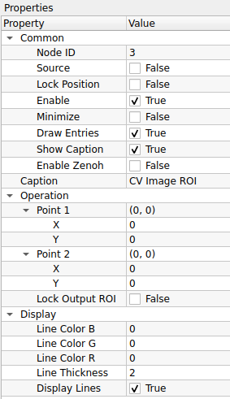
| Property | Default | คำอธิบาย |
|---|---|---|
| Node ID | 3 |
เลขประจำตัวลำดับของโหนด |
| Caption | CV Image ROI |
ชื่อโหนดที่แสดงผลบน Workspace |
| Point 1 | (0, 0) |
พิกัดของจุดมุมที่ 1 (ปกติคือมุมซ้ายบน) |
| Point 2 | (0, 0) |
พิกัดของจุดมุมที่ 2 (ปกติคือมุมขวาล่าง) |
| Lock Output ROI | False |
ตัวเลือกการส่งออกภาพ: - True: ตัดภาพ (Crop) ให้เหลือเฉพาะส่วนในกรอบส่งออกไป - False: ส่งภาพเต็มออกไปเหมือนเดิม (แต่แปะข้อมูล ROI หรือวาดเส้นกรอบทับ) |
| Line Color (B,G,R) | 0, 0, 0 |
สีของเส้นกรอบที่จะวาดแสดงผล |
| Line Thickness | 2 |
ความหนาของเส้นกรอบ |
| Display Lines | True |
เปิด/ปิด การวาดเส้นกรอบสี่เหลี่ยมบนภาพ |
ความแตกต่าง: CV ROI (ID 1) vs CV Image ROI (ID 3)
- CV ROI (ID 1): เหมาะสำหรับงานที่ "รู้ขนาดที่แน่นอน" (เช่น ต้องการตัดภาพขนาด 640x480 เสมอ โดยแค่ขยับจุดเริ่ม X,Y ไปเรื่อยๆ)
- CV Image ROI (ID 3): เหมาะสำหรับงานที่ "รู้ตำแหน่งจุดเริ่มและจุดจบ" (เช่น การลากเมาส์คลุมพื้นที่ ซึ่งจะได้ค่า P1 และ P2 มา) และโหนดนี้เหมาะสำหรับใช้เพื่อ "Visualization (การแสดงผล)" มากกว่า เพราะมีตัวเลือกให้วาดเส้นกรอบโชว์ได้ทันที
ลำดับจุดสำคัญไหม?
โดยปกติโปรแกรม OpenCV จะคำนวณสี่เหลี่ยมจาก Min/Max ของพิกัด ดังนั้นคุณจะกำหนด Point 1 เป็นมุมขวาล่าง และ Point 2 เป็นมุมซ้ายบนก็ได้ ผลลัพธ์จะได้กรอบสี่เหลี่ยมพื้นที่เดิมครับ
- CV Rotate:

CV Rotate คือโหนดสำหรับการหมุนภาพ (Image Rotation) รอบจุดกึ่งกลางภาพตามมุมองศาที่กำหนด ช่วยให้สามารถแก้ไขภาพที่ถ่ายมาเอียง (Tilt correction) หรือกลับหัวภาพให้ถูกต้องได้
ตารางการตั้งค่า (Properties)

| Property | Default | คำอธิบาย |
|---|---|---|
| Node ID | 4 |
เลขประจำตัวลำดับของโหนด |
| Caption | CV Rotate |
ชื่อโหนดที่แสดงผลบน Workspace |
| Rotate | 180.0000 |
มุมที่ต้องการหมุน (หน่วยเป็นองศา) - ค่าบวก (+): หมุนทวนเข็มนาฬิกา (Counter-Clockwise) - ค่าลบ (-): หมุนตามเข็มนาฬิกา (Clockwise) |
มุมยอดนิยม
- 90°: หมุนตะแคงซ้าย
- -90° (หรือ 270°): หมุนตะแคงขวา
- 180°: กลับหัว (Upside Down)
ระวังเรื่องขอบภาพ (Clipping)
การหมุนภาพด้วยมุมที่ไม่ใช่ 90, 180, หรือ 270 องศา (เช่น 45 องศา) มักจะทำให้เกิดผลกระทบ 2 อย่าง:
- ขอบดำ: จะเกิดพื้นที่ว่างสีดำขึ้นที่มุมทั้ง 4 ของภาพ
- ภาพโดนตัด: ส่วนมุมของภาพเดิมอาจจะหลุดออกนอกกรอบเฟรม หากระบบไม่ได้ทำการขยายขนาดเฟรมให้อัตโนมัติ
10. Image Processing (การประมวลผลภาพ)
ฟังก์ชันพื้นฐานสำหรับปรับเปลี่ยนลักษณะของภาพ

- CV Find Contour:

CV Find Contour คือโหนดสำหรับการค้นหาเส้นขอบ (Boundary) ของวัตถุในภาพ โดยรับอินพุตเป็นภาพขาว-ดำ (Binary Image) ระบบจะทำการลากเส้นเชื่อมต่อจุดที่มีความต่อเนื่องกัน เพื่อสร้างเป็นโครงสร้างข้อมูลเส้นขอบ (Vector of Points) สำหรับนำไปวิเคราะห์รูปร่างทางเรขาคณิตต่อไป
ตารางการตั้งค่า (Properties)
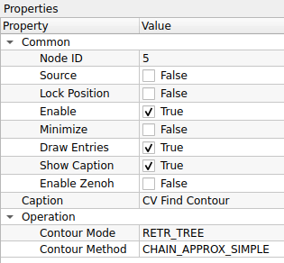
| Property | Default | คำอธิบาย |
|---|---|---|
| Node ID | 5 |
เลขประจำตัวลำดับของโหนด |
| Caption | CV Find Contour |
ชื่อโหนดที่แสดงผลบน Workspace |
| Contour Mode | RETR_TREE |
รูปแบบการจัดลำดับชั้นของเส้นขอบ (Hierarchy): - RETR_EXTERNAL: หาเฉพาะเส้นขอบ "นอกสุด" เท่านั้น (ไม่สนรูข้างใน) - RETR_LIST: หาเส้นขอบทั้งหมด แต่ไม่จัดลำดับชั้น (ไม่สนว่าใครอยู่ในใคร) - RETR_CCOMP: จัดลำดับชั้นแค่ 2 ระดับ (ระดับนอกสุด และระดับรู) - RETR_TREE: (ละเอียดสุด) จัดลำดับชั้นสมบูรณ์แบบเป็นโครงสร้างต้นไม้ (Nested Layer) - RETR_FLOODFILL: ใช้เทคนิค Floodfill ในการหาเส้นขอบ (เหมาะกับบางงานเฉพาะ) |
| Contour Method | CHAIN_APPROX_SIMPLE |
วิธีการบันทึกจุดพิกัดของเส้นขอบ: - CHAIN_APPROX_NONE: เก็บ "ทุกจุด" พิกัด (ละเอียดมาก แต่กินเมมโมรี่มหาศาล) - CHAIN_APPROX_SIMPLE: (แนะนำ) เก็บเฉพาะ "จุดมุม" แล้วลากเส้นเชื่อม (ประหยัดเมมโมรี่มาก) - CHAIN_APPROX_TC89_L1: ใช้อัลกอริทึม Teh-Chin (L1) ลดจำนวนจุดรบกวน - CHAIN_APPROX_TC89_KCOS: ใช้อัลกอริทึม Teh-Chin (KCOS) ลดจำนวนจุดรบกวน |
กฎเหล็ก: Input ต้องเป็นภาพขาว-ดำ
โหนดนี้ทำงานได้ดีที่สุดกับภาพ Binary Image (ภาพที่มีแค่สีขาวกับดำ) เท่านั้น
- ก่อนเข้าโหนดนี้: ควรผ่านกระบวนการ
Threshold,Canny Edge Detection, หรือinRangeมาก่อนเสมอ - หลักการมองเห็น: OpenCV จะมองหา "วัตถุสีขาว" บน "พื้นหลังสีดำ" (White objects on Black background)
เลือก Mode ไหนดี?
- งานนับจำนวนของ (Counting): ใช้
RETR_EXTERNALก็พอ เพราะเราแค่อยากรู้วัตถุหลัก ไม่สนลวดลายข้างใน - งานอ่านตัวหนังสือที่มีรู (OCR / Shape): ใช้
RETR_TREEหรือRETR_CCOMPเพื่อให้รู้ว่าในตัวอักษร A, B, O มีรูตรงกลางหรือไม่
- CV Draw Contour:

CV Draw Contour คือโหนดสำหรับการแสดงผลเส้นขอบวัตถุ (Visualization) โดยนำข้อมูลพิกัดเส้นขอบ (Contours) ที่คำนวณได้มาวาดเป็นเส้นสีลงบนภาพต้นฉบับ ช่วยให้ผู้ใช้ตรวจสอบได้ว่าระบบตรวจจับวัตถุได้ถูกต้องหรือไม่
ตารางการตั้งค่า (Properties)

| Property | Default | คำอธิบาย |
|---|---|---|
| Node ID | 7 |
เลขประจำตัวลำดับของโหนด |
| Caption | CV Draw Contour |
ชื่อโหนดที่แสดงผลบน Workspace |
| B value | 0 |
ค่าสีน้ำเงิน (Blue) ของเส้นขอบ |
| G value | 255 |
ค่าสีเขียว (Green) ของเส้นขอบ |
| R value | 0 |
ค่าสีแดง (Red) ของเส้นขอบ |
| Line Thickness | 2 |
ความหนาของเส้น (หน่วยเป็นพิกเซล) |
| Line Type | LINE_8 |
รูปแบบของเส้น: - LINE_8: เส้นเชื่อมต่อ 8 ทิศทาง (มาตรฐาน เส้นไม่ขาด) - LINE_4: เส้นเชื่อมต่อ 4 ทิศทาง (เส้นอาจดูเหลี่ยมกว่า) - LINE_AA: เส้นลบรอยหยัก (Anti-Aliased) เส้นจะนวลและสวยที่สุด (แต่อาจกินทรัพยากรเพิ่มเล็กน้อย) |
เทคนิค: การระบายสีทึบ (Fill Poly)
หากคุณกำหนดค่า Line Thickness เป็น -1 (ค่าติดลบ)
- โปรแกรมจะไม่วาดแค่เส้นขอบ แต่จะ "ระบายสีทึบ (Fill)" ลงไปในพื้นที่ภายในเส้นขอบทั้งหมดแทน
- ประโยชน์: ใช้สร้าง Mask หรือระบายสีเพื่อเน้นวัตถุทั้งชิ้น
ลำดับการต่อสาย (Wiring)
โหนดนี้ต้องการ Input 2 อย่างเสมอ:
- Image: ภาพที่จะให้วาดเส้นทับลงไป (จะเป็นภาพสีหรือขาวดำก็ได้)
- Contours: ข้อมูลเส้นขอบที่ส่งมาจากโหนด CV Find Contour เท่านั้น (ถ้าไม่ต่อสายนี้ จะไม่มีอะไรให้วาด)
- CV Distance Transform:

CV Distance Transform คือโหนดสำหรับการคำนวณระยะห่างระหว่างแต่ละพิกเซลของวัตถุกับขอบเขตที่ใกล้ที่สุด ผลลัพธ์ที่ได้คือภาพโทนสีเทา (Grayscale) ที่ความสว่างของพิกเซลจะบอกถึง "ระยะห่างจากขอบ" (ยิ่งสว่างแสดงว่ายิ่งอยู่กึ่งกลางวัตถุ) นิยมใช้ในขั้นตอนเตรียมภาพสำหรับการแบ่งส่วนวัตถุ (Segmentation)
ตารางการตั้งค่า (Properties)
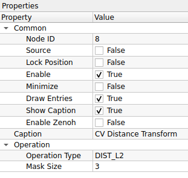
| Property | Default | คำอธิบาย |
|---|---|---|
| Node ID | 8 |
เลขประจำตัวลำดับของโหนด |
| Caption | CV Distance Transform |
ชื่อโหนดที่แสดงผลบน Workspace |
| Operation Type | DIST_L2 |
สูตรการคำนวณระยะทาง: - DIST_C: (Chessboard) ระยะทางแบบเดินตัว Max (เหมือนตัว King ในหมากรุก) - DIST_L1: (Manhattan) ระยะทางแบบเดินตามตาราง (บวกค่า |x1-x2| + |y1-y2|) - DIST_L2: (Euclidean) ระยะทางเส้นตรงจริง (แม่นยำและนิยมที่สุด) - DIST_L12: (L1-L2 Metric) การประมาณค่าแบบผสม เพื่อความรวดเร็ว |
| Mask Size | 3 |
ขนาดของหน้ากากที่ใช้คำนวณ: - 0: (Precise) ใช้หน้ากากแม่นยำสูง (Pixel-perfect) สำหรับ DIST_L2 เท่านั้น- 3: ใช้หน้ากากขนาด 3x3 (คำนวณเร็ว) - 5: ใช้หน้ากากขนาด 5x5 (แม่นยำกว่า 3x3 เล็กน้อย) |
Use Case: การแยกเหรียญที่วางติดกัน
หากคุณมีภาพเหรียญวางเบียดกันจนขอบชนกัน การใช้ Find Contour ปกติจะมองเห็นเป็นก้อนเดียวใหญ่ๆ
- ใช้ CV Distance Transform ภาพจะเปลี่ยนเป็นจุดสว่างๆ ตรงกลางเหรียญแต่ละเหรียญ (เหมือนยอดเขา)
- พื้นที่รอยต่อระหว่างเหรียญจะมืดกว่า เพราะอยู่ใกล้ขอบ
- นำภาพผลลัพธ์ไปทำ Threshold ตัดเอาเฉพาะส่วนที่สว่างที่สุด (ยอดเขา)
- คุณจะได้จุดกึ่งกลางของแต่ละเหรียญแยกออกจากกันอย่างชัดเจน!
Mask Size 0 คืออะไร?
ปกติ Mask Size จะเป็นขนาดตาราง (3x3, 5x5) แต่ถ้าเลือก 0 OpenCV จะใช้อัลกอริทึมพิเศษ (Saito-Toriwaki หรือใกล้เคียง) เพื่อหาค่าระยะทางแบบ Precise Euclidean Distance ซึ่งแม่นยำที่สุด แต่ ต้องใช้คู่กับ DIST_L2 เท่านั้น
- CV Hough Lines PoinSet:

CV Hough Lines PointSet คือโหนดสำหรับการตรวจจับเส้นตรงจาก "ชุดจุดพิกัด" (Point Set) โดยใช้อัลกอริทึม Standard Hough Transform โหนดนี้จะรับข้อมูลขาเข้าเป็นรายการของจุด (เช่น จุดจากเส้นรอบรูป หรือจุด Keypoints) และค้นหาว่ามีจุดกลุ่มไหนที่เรียงตัวกันเป็นเส้นตรงบ้าง ผลลัพธ์ที่ได้คือสมการเส้นตรงในรูปแบบ $(\rho, \theta)$
ตารางการตั้งค่า (Properties)

Common & Image Memory
| Property | Default | คำอธิบาย |
|---|---|---|
| Node ID | 9 |
เลขประจำตัวลำดับของโหนด |
| Sharing Mode | Pool Mode |
โหมดการจัดการหน่วยความจำภาพ: - Pool Mode: ใช้ระบบ Memory Pool เพื่อนำหน่วยความจำกลับมาใช้ใหม่ (ประหยัดทรัพยากร) - Broadcast Mode: ส่งข้อมูลแบบกระจาย (เหมาะกับกรณีที่มีโหนดลูกข่ายรับข้อมูลหลายตัวพร้อมกัน) |
| Pool Size | 3 |
จำนวน Buffer สูงสุดที่จะจองไว้ใน Pool (เฉพาะ Pool Mode) |
Operation
| Property | Default | คำอธิบาย |
|---|---|---|
| Lines Max | 64 |
จำนวนเส้นตรงสูงสุดที่ต้องการให้ส่งออกมา (Output limit) |
| Threshold | 50 |
คะแนนขั้นต่ำ (Vote) ที่จะนับว่าเป็นเส้นตรง (ต้องมีจุดเรียงกันอย่างน้อยกี่จุดจึงจะยอมรับ) |
| Min/Max Rho | -200 ถึง 200 |
ขอบเขตระยะห่างจากจุดกำเนิด ($\rho$) ที่ต้องการค้นหา |
| Rho Step | 1.0 |
ความละเอียดของการค้นหาระยะห่าง ($\rho$) ทีละกี่พิกเซล |
| Min/Max Theta | 0 ถึง 180 |
ขอบเขตมุม ($\theta$) ที่ต้องการค้นหา (หน่วยเป็นองศา) |
| Theta Step | 1.0 |
ความละเอียดของการค้นหามุม ($\theta$) ทีละกี่องศา |
| Strongest N Only | True |
หากเปิดใช้งาน จะคัดเลือกเฉพาะเส้นที่มีคะแนน (Vote) สูงสุดจำนวน N เส้น (ตามค่า Lines Max) เรียงจากมากไปน้อย |
Display
| Property | Default | คำอธิบาย |
|---|---|---|
| Display Lines | True |
เปิด/ปิด การวาดเส้นผลลัพธ์ลงบนภาพ |
| Line Color (B,G,R) | 255, 0, 255 |
กำหนดสีของเส้น (ค่าตั้งต้น: สีม่วง Magenta) |
| Line Thickness | 1 |
ความหนาของเส้น |
| Line Type | LINE_8 |
รูปแบบอัลกอริทึมการวาดเส้น: - LINE_8: เส้นแบบ 8-connected (มาตรฐาน) - LINE_4: เส้นแบบ 4-connected - LINE_AA: (Anti-aliased) เส้นขอบเรียบ ลดรอยหยัก (สวยงามแต่กินทรัพยากรเพิ่มขึ้น) |
Use Case: การหาแนวเส้นขอบจาก Contour
หากคุณใช้โหนด Find Contour เพื่อหาขอบเขตของวัตถุสี่เหลี่ยม แต่จุดที่ได้อาจจะขรุขระหรือไม่เรียบเนียน
- ส่งข้อมูลจุดจาก Find Contour เข้าสู่ CV Hough Lines PointSet
- ปรับค่า Threshold ให้เหมาะสม เพื่อกรองจุดรบกวน (Noise) ออกไป
- ผลลัพธ์ที่ได้คือ เส้นตรงในอุดมคติ (Ideal Lines) ที่ลากผ่านกลุ่มจุดเหล่านั้น ซึ่งสามารถนำไปคำนวณหามุมเอียง (Rotation Angle) ของวัตถุได้แม่นยำกว่าการใช้ Bounding Box
Rho ($\rho$) และ Theta ($\theta$) คืออะไร?
ระบบ Hough Transform ไม่ได้ใช้สมการ $y = mx + c$ แต่ใช้ระบบพิกัดเชิงขั้ว:
- $\rho$ (Rho): ระยะห่างตั้งฉากจากจุดกำเนิด (มุมซ้ายบนของภาพ) ไปยังเส้นตรง
- $\theta$ (Theta): มุมของเส้นตั้งฉากนั้น (หน่วยเป็นองศา)
- CV Hough Lines P:

CV Hough Lines P คือโหนดสำหรับการตรวจจับเส้นตรงโดยใช้ Probabilistic Hough Transform ซึ่งเป็นเวอร์ชันปรับปรุงที่ทำงานได้รวดเร็วกว่าแบบมาตรฐาน โหนดนี้จะสุ่มเลือกจุดพิกัดมาคำนวณเพียงบางส่วน (แทนที่จะใช้ทุกจุด) และผลลัพธ์ที่ได้จะเป็น ส่วนของเส้นตรง (Line Segments) ที่ระบุพิกัดจุดเริ่มต้น $(x_1, y_1)$ และจุดสิ้นสุด $(x_2, y_2)$ ทำให้เหมาะกับการตรวจจับวัตถุที่มีขอบเขตชัดเจน
ตารางการตั้งค่า (Properties)
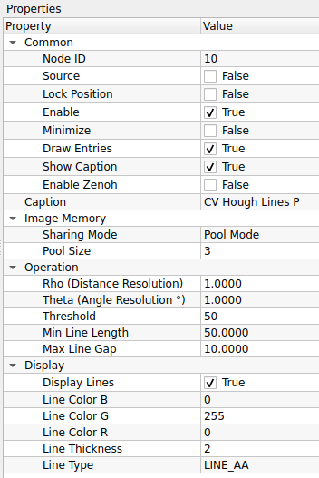
Common
| Property | Default | คำอธิบาย |
|---|---|---|
| Node ID | 10 |
เลขประจำตัวลำดับของโหนด |
| Caption | CV Hough Lines P |
ชื่อโหนดที่แสดงผลบน Workspace |
Image Memory
| Property | Default | คำอธิบาย |
|---|---|---|
| Sharing Mode | Pool Mode |
โหมดการจัดการหน่วยความจำภาพ: - Pool Mode: ใช้ระบบ Memory Pool เพื่อนำหน่วยความจำกลับมาใช้ใหม่ (ประหยัดทรัพยากร) - Broadcast Mode: ส่งข้อมูลแบบกระจาย (เหมาะกับกรณีที่มีโหนดลูกข่ายรับข้อมูลหลายตัวพร้อมกัน) |
| Pool Size | 3 |
จำนวน Buffer สูงสุดที่จะจองไว้ใน Pool (เฉพาะ Pool Mode) |
Operation
| Property | Default | คำอธิบาย |
|---|---|---|
| Rho | 1.0 |
ความละเอียดของการค้นหาระยะห่าง (หน่วยเป็นพิกเซล) |
| Theta | 1.0 |
ความละเอียดของการค้นหามุม (หน่วยเป็นองศา) |
| Threshold | 50 |
คะแนนขั้นต่ำ (Vote) ที่จะนับว่าเป็นเส้นตรง |
| Min Line Length | 50.0 |
ความยาวต่ำสุดของเส้นที่ยอมรับ (เส้นที่สั้นกว่านี้จะถูกตัดทิ้ง) |
| Max Line Gap | 10.0 |
ระยะห่างสูงสุดระหว่างจุดที่ยังอนุญาตให้เชื่อมต่อกันเป็นเส้นเดียวกันได้ (ช่วยเชื่อมเส้นที่ขาดช่วง) |
Display
| Property | Default | คำอธิบาย |
|---|---|---|
| Display Lines | True |
เปิด/ปิด การวาดเส้นผลลัพธ์ลงบนภาพ |
| Line Color (B,G,R) | 0, 255, 0 |
กำหนดสีของเส้น (ค่าตั้งต้น: สีเขียว Lime 0, 255, 0) |
| Line Thickness | 2 |
ความหนาของเส้น |
| Line Type | LINE_AA |
รูปแบบอัลกอริทึมการวาดเส้น: - LINE_8: เส้นแบบ 8-connected (มาตรฐาน) - LINE_4: เส้นแบบ 4-connected - LINE_AA: (Anti-aliased) เส้นขอบเรียบ ลดรอยหยัก (สวยงามแต่กินทรัพยากรเพิ่มขึ้น แนะนำสำหรับงานแสดงผล) |
Use Case: การตรวจจับเส้นเลนถนน (Lane Detection)
โหนดนี้เหมาะมากสำหรับงานตรวจจับเลนถนนหรือขอบวัตถุที่เป็นเส้นยาวแต่มีการขาดช่วง
- ปรับ Min Line Length ให้ยาวพอที่จะกรอง Noise เล็กๆ น้อยๆ ออกไป
- ปรับ Max Line Gap เพื่อช่วยเชื่อมเส้นถนนที่อาจจะลอกหรือขาดหายเป็นช่วงๆ ให้กลายเป็นเส้นเดียวกัน
- ผลลัพธ์ที่ได้จะเป็นเส้นสีเขียวทับลงบนตำแหน่งเลนถนนจริง
Standard vs Probabilistic Hough
- Standard (Hough Lines): คำนวณทุกจุด, ได้เส้นตรงความยาวอนันต์ ($\rho, \theta$), ช้ากว่า
- Probabilistic (Hough Lines P): สุ่มคำนวณบางจุด, ได้ส่วนของเส้นตรงชัดเจน $(x_1,y_1, x_2,y_2)$, เร็วกว่าและนิยมใช้มากกว่า
- CV Hough Lines:

CV Hough Lines คือโหนดสำหรับการตรวจจับเส้นตรงโดยใช้ Standard Hough Transform โหนดนี้จะรับภาพขาวดำ (Binary Image) และค้นหาเส้นตรงที่ตัดผ่านภาพ ผลลัพธ์ที่ได้จะไม่ใช่จุดเริ่มต้น-สิ้นสุด (Segment) แต่จะเป็น สมการเส้นตรง $(\rho, \theta)$ ซึ่งเปรียบเสมือนเส้นตรงที่มีความยาวไม่สิ้นสุดลากผ่านขอบเขตของภาพ
ตารางการตั้งค่า (Properties)

Common
| Property | Default | คำอธิบาย |
|---|---|---|
| Node ID | 11 |
เลขประจำตัวลำดับของโหนด |
| Caption | CV Hough Lines |
ชื่อโหนดที่แสดงผลบน Workspace |
Image Memory
| Property | Default | คำอธิบาย |
|---|---|---|
| Sharing Mode | Pool Mode |
โหมดการจัดการหน่วยความจำภาพ: - Pool Mode: ใช้ระบบ Memory Pool เพื่อนำหน่วยความจำกลับมาใช้ใหม่ (ประหยัดทรัพยากร) - Broadcast Mode: ส่งข้อมูลแบบกระจาย (เหมาะกับกรณีที่มีโหนดลูกข่ายรับข้อมูลหลายตัวพร้อมกัน) |
| Pool Size | 3 |
จำนวน Buffer สูงสุดที่จะจองไว้ใน Pool (เฉพาะ Pool Mode) |
Operation
| Property | Default | คำอธิบาย |
|---|---|---|
| Rho | 1.0 |
ความละเอียดของการค้นหาระยะห่าง (หน่วยเป็นพิกเซล) |
| Theta | 1.0 |
ความละเอียดของการค้นหามุม (หน่วยเป็นองศา) |
| Threshold | 100 |
คะแนนขั้นต่ำ (Vote) ที่จะนับว่าเป็นเส้นตรง (ค่ายิ่งสูง จะได้เฉพาะเส้นที่ชัดจริงๆ เท่านั้น) |
Display
| Property | Default | คำอธิบาย |
|---|---|---|
| Display Lines | True |
เปิด/ปิด การวาดเส้นผลลัพธ์ลงบนภาพ |
| Line Color (B,G,R) | 255, 0, 0 |
กำหนดสีของเส้น (ค่าตั้งต้น: สีน้ำเงิน Blue 255, 0, 0) |
| Line Thickness | 2 |
ความหนาของเส้น |
| Line Type | LINE_AA |
รูปแบบอัลกอริทึมการวาดเส้น: - LINE_8: เส้นแบบ 8-connected (มาตรฐาน) - LINE_4: เส้นแบบ 4-connected - LINE_AA: (Anti-aliased) เส้นขอบเรียบ ลดรอยหยัก (สวยงามแต่กินทรัพยากรเพิ่มขึ้น) |
Use Case: การหาองศาเพื่อหมุนภาพ (Skew Correction)
เนื่องจากโหนดนี้ให้ค่าผลลัพธ์เป็นมุม $\theta$ (Theta) ของเส้นตรงที่ยาวที่สุดในภาพ จึงนิยมนำมาใช้ในการ:
- หาเส้นขอบกระดาษหรือเส้นบรรทัดในเอกสารที่สแกนมาเอียงๆ
- คำนวณค่าเฉลี่ยของมุม $\theta$ ที่ตรวจจับได้
- นำค่ามุมนั้นไปสั่งหมุนภาพกลับให้ตรง (Deskewing)
ข้อควรระวัง: เส้นยาวทะลุจอ!
ความแตกต่างสำคัญระหว่างโหนดนี้กับ Hough Lines P:
- CV Hough Lines (Standard): ได้เส้นตรงที่ลากยาวตั้งแตสุดขอบซ้ายไปขอบขวาของภาพ (ไม่มีจุดจบ) เหมาะกับการหา "แนวโน้ม" หรือ "องศา" ของภาพ
- CV Hough Lines P (Probabilistic): ได้เส้นที่มีจุดหัว-ท้ายชัดเจน เหมาะกับการหา "วัตถุ" หรือ "ขอบเขต"
- CV Connected Components:

CV Connected Components คือโหนดสำหรับการทำ Labeling หรือการระบุและแยกกลุ่มของพิกเซลที่เชื่อมต่อกัน (Blobs) ในภาพ Binary ผลลัพธ์ที่ได้ไม่ใช่ภาพสีทั่วไป แต่เป็น Label Map (ข้อมูลชนิด Integer) ที่แต่ละพิกเซลจะเก็บค่า "หมายเลข ID ของวัตถุ" ที่มันสังกัดอยู่ (เช่น พื้นหลัง=0, วัตถุชิ้นแรก=1, วัตถุชิ้นสอง=2, ...) นิยมใช้ในการนับจำนวนวัตถุหรือแยกวัตถุเพื่อไปวิเคราะห์ต่อ
ตารางการตั้งค่า (Properties)

Common
| Property | Default | คำอธิบาย |
|---|---|---|
| Node ID | 12 |
เลขประจำตัวลำดับของโหนด |
| Caption | CV Connected Components |
ชื่อโหนดที่แสดงผลบน Workspace |
Operation
| Property | Default | คำอธิบาย |
|---|---|---|
| Connectivity | 4 |
รูปแบบการเชื่อมต่อของพิกเซลข้างเคียง: - 4: เชื่อมต่อเฉพาะ บน-ล่าง-ซ้าย-ขวา (เหมาะกับวัตถุที่แยกกันชัดเจน) - 8: เชื่อมต่อรวมแนวทแยงด้วย (เหมาะกับวัตถุที่มีรอยต่อบางๆ หรือจุดสัมผัสที่มุม) |
| Image Type | CV_32S |
ชนิดข้อมูลของภาพผลลัพธ์: - CV_32S: (32-bit Signed Integer) มาตรฐาน OpenCV รองรับจำนวนวัตถุได้มหาศาล - CV_16U: (16-bit Unsigned) ประหยัดหน่วยความจำกว่า แต่รองรับวัตถุได้สูงสุด 65,535 ชิ้น |
| Algorithm Type | CCL_DEFAULT |
อัลกอริทึมที่ใช้ประมวลผล: - CCL_DEFAULT: ให้ OpenCV เลือกวิธีที่เหมาะสมที่สุด (SAUF หรือ BBDT) - CCL_WU: (Wu's Algorithm) อัลกอริทึม SAUF แบบดั้งเดิม - CCL_GRANA: (Grana's Algorithm) อัลกอริทึม BBDT ที่ทำงานได้รวดเร็วมากบน CPU รุ่นใหม่ |
Display
| Property | Default | คำอธิบาย |
|---|---|---|
| Visualize | False |
เปิด/ปิด การแสดงผลภาพสี: - False: ส่งข้อมูลเป็น Label Map (ภาพมืดๆ ดูด้วยตาเปล่าไม่รู้เรื่อง แต่คอมพิวเตอร์เข้าใจ) - True: แปลง ID ของวัตถุเป็นสีต่างๆ แบบสุ่ม (Random Colors) เพื่อให้มนุษย์ดูผลลัพธ์ได้ง่ายขึ้น |
Use Case: การนับจำนวนเม็ดยา
หากคุณมีภาพถ่ายเม็ดยาสีขาวบนพื้นดำ และผ่านการทำ Threshold มาแล้ว
- ใช้ CV Connected Components ประมวลผลภาพ
- ค่าสูงสุด (Max Value) ในภาพผลลัพธ์ คือ จำนวนเม็ดยาทั้งหมด ที่นับได้
- หากต้องการหาขนาดพื้นที่ของเม็ดยาแต่ละเม็ด ก็สามารถนับจำนวนพิกเซลของแต่ละ ID (1, 2, 3...) ได้ทันที
Visualize: False vs True
- ใช้งานจริง (Processing): ควรตั้งเป็น
Falseเพื่อให้โหนดถัดไปได้รับค่า ID ที่ถูกต้อง (1, 2, 3...) ไปคำนวณต่อ - ดีบัก (Debugging): ควรตั้งเป็น
Trueเฉพาะตอนที่ต้องการดูด้วยตาว่าโหนดแยกวัตถุได้ถูกต้องหรือไม่ เพราะสีที่แสดงผลออกมาเป็นเพียงการระบายสี (Visualization) ไม่ใช่ข้อมูล ID จริง
- CV Hough Circle:

CV Hough Circles คือโหนดสำหรับการตรวจจับวัตถุทรงกลมในภาพโดยใช้ Hough Circle Transform เหมาะสำหรับงานตรวจจับเหรียญ, ลูกบอล, หรือรูเจาะต่างๆ โหนดนี้มีความซับซ้อนกว่าการหาเส้นตรงเล็กน้อย เนื่องจากต้องระบุทั้งจุดศูนย์กลางและรัศมีของวงกลม
ตารางการตั้งค่า (Properties)
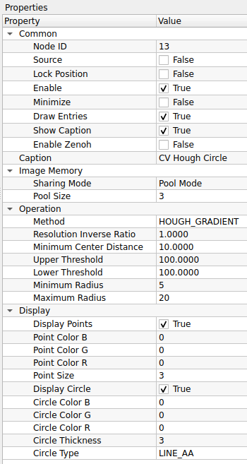
Common
| Property | Default | คำอธิบาย |
|---|---|---|
| Node ID | 13 |
เลขประจำตัวลำดับของโหนด (คาดการณ์จากลำดับ) |
| Caption | CV Hough Circles |
ชื่อโหนดที่แสดงผลบน Workspace |
Image Memory
| Property | Default | คำอธิบาย |
|---|---|---|
| Sharing Mode | Pool Mode |
โหมดการจัดการหน่วยความจำภาพ: - Pool Mode: ใช้ระบบ Memory Pool (แนะนำ) - Broadcast Mode: ส่งข้อมูลแบบกระจาย |
| Pool Size | 3 |
จำนวน Buffer สูงสุดที่จะจองไว้ใน Pool |
Operation
| Property | Default | คำอธิบาย |
|---|---|---|
| Method | HOUGH_GRADIENT |
อัลกอริทึมที่ใช้: - HOUGH_GRADIENT: (Standard) ใช้วิธีคำนวณ Gradient ของขอบภาพ (นิยมใช้ที่สุด) - HOUGH_GRADIENT_ALT: (Alternative) แม่นยำกว่าสำหรับวงกลมที่สมบูรณ์ ลด False Positive ได้ดีกว่าแบบปกติ |
| Resolution Inverse Ratio | 1.0 |
อัตราส่วนความละเอียดของตัวสะสม (dp): - 1.0: ความละเอียดเท่าภาพต้นฉบับ - 2.0: ความละเอียดครึ่งหนึ่ง (คำนวณเร็วขึ้น แต่อาจพลาดวงกลมเล็กๆ) |
| Minimum Center Distance | 20.0 |
(minDist) ระยะห่างต่ำสุดระหว่างจุดศูนย์กลางของวงกลมแต่ละวง (ถ้าน้อยเกินไป อาจตรวจเจอวงกลมซ้อนกันหลายวงในวัตถุเดียว) |
| Upper Threshold | 100 |
(param1) ค่า Threshold สูงสุดสำหรับ Canny Edge Detector ภายในฟังก์ชัน |
| Lower Threshold | 100 |
(param2) ค่า Threshold สำหรับการโหวตที่จุดศูนย์กลาง (ค่ายิ่งน้อย ยิ่งเจอวงกลมเยอะรวมถึงวงกลมปลอม, ค่ายิ่งมาก จะเจอเฉพาะวงกลมที่ชัดจริงๆ) |
| Minimum Radius | 0 |
รัศมีต่ำสุดของวงกลมที่จะตรวจจับ (0 = ไม่จำกัด) |
| Maximum Radius | 0 |
รัศมีสูงสุดของวงกลมที่จะตรวจจับ (0 = ไม่จำกัด) |
Display
| Property | Default | คำอธิบาย |
|---|---|---|
| Display Circles | True |
เปิด/ปิด การวาดวงกลมผลลัพธ์ลงบนภาพ |
| Circle Color (B,G,R) | 0, 255, 0 |
กำหนดสีของเส้นวงกลม |
| Circle Thickness | 2 |
ความหนาของเส้นวงกลม |
| Circle Type | LINE_AA |
รูปแบบอัลกอริทึมการวาดเส้น: - LINE_8: เส้นแบบ 8-connected - LINE_4: เส้นแบบ 4-connected - LINE_AA: (Anti-aliased) เส้นขอบเรียบ ลดรอยหยัก (แนะนำเพื่อให้วงกลมดูสวยงาม) |
Use Case: การนับเหรียญ
- ตั้งค่า Method เป็น
HOUGH_GRADIENT - ปรับ Minimum Center Distance ให้มีค่าประมาณขนาดของเหรียญ (เพื่อไม่ให้ตรวจจับซ้ำที่จุดเดิม)
- ปรับ Lower Threshold (param2) ลงเรื่อยๆ จนกว่าจะเริ่มเห็นวงกลมครบทุกเหรียญ (ระวังอย่าให้ต่ำเกินไปจนเจอ Noise)
- หากรู้ขนาดเหรียญที่แน่นอน ให้ระบุ Min/Max Radius เพื่อกรองวงกลมขนาดอื่นทิ้งไป
HOUGH_GRADIENT vs ALT
หากคุณใช้ HOUGH_GRADIENT แล้วเจอปัญหาวงกลมซ้อนกันเยอะๆ หรือปรับค่ายาก ลองเปลี่ยนเป็น HOUGH_GRADIENT_ALT ซึ่งเป็นวิธีใหม่ใน OpenCV ที่มักจะให้ผลลัพธ์แม่นยำกว่าและตั้งค่าง่ายกว่า (ค่า param2 จะเปลี่ยนไปใช้ช่วง 0.0-1.0 แทนที่จะเป็นจำนวนโหวต)
- CV Sobel and Scharr:
<p lign="center">

</p>
CV Sobel and Scharr คือโหนดสำหรับการตรวจจับขอบภาพโดยใช้หลักการทางคณิตศาสตร์เรื่อง "อนุพันธ์" (Derivatives) เพื่อคำนวณหาการเปลี่ยนแปลงของความสว่างในแนวแกน X และ Y * Sobel: เป็นวิธีมาตรฐานที่นิยมใช้กรองหาขอบภาพ โดยใช้ Gaussian Smoothing ร่วมกับ Differential Operator ทำให้ทนต่อสัญญาณรบกวนได้ดี * Scharr: เป็นเวอร์ชันปรับปรุงของ Sobel (เฉพาะขนาด 3x3) ที่ให้ผลลัพธ์ความชันที่แม่นยำกว่าและมีความสมมาตรในการหมุนมากกว่า
ตารางการตั้งค่า (Properties)

Common
| Property | Default | คำอธิบาย |
|---|---|---|
| Node ID | 14 |
เลขประจำตัวลำดับของโหนด |
| Caption | CV Sobel and Scharr |
ชื่อโหนดที่แสดงผลบน Workspace |
Operation
| Property | Default | คำอธิบาย |
|---|---|---|
| X order | 1 |
อันดับของอนุพันธ์ในแนวแกน X (แนวนอน): - 1: หาขอบแนวตั้ง (Vertical Edges) - 0: ไม่หาในแนวนี้ |
| Y order | 1 |
อันดับของอนุพันธ์ในแนวแกน Y (แนวตั้ง): - 1: หาขอบแนวนอน (Horizontal Edges) - 0: ไม่หาในแนวนี้ |
| Kernel Size | 3 |
ขนาดของหน้ากากกรอง (ต้องเป็นเลขคี่): - 3, 5, 7: ใช้ Sobel Operator ตามขนาดปกติ - -1: (ค่าพิเศษ) ใช้ Scharr Operator (3x3) ซึ่งแม่นยำกว่า Sobel 3x3 ปกติ |
| Scale | 1.0000 |
ตัวคูณค่าผลลัพธ์ (ใช้ปรับความสว่างของเส้นขอบให้ชัดขึ้น) |
| Delta | 0.0000 |
ค่าคงที่ที่บวกเพิ่มเข้าไปในผลลัพธ์ (ใช้ปรับความสว่างพื้นหลัง) |
Display
| Property | Default | คำอธิบาย |
|---|---|---|
| Border Type | DEFAULT |
วิธีการจัดการพิกเซลที่ขอบภาพ (Padding) เมื่อ Kernel ยื่นออกนอกภาพ: - DEFAULT: (Reflect 101) สะท้อนภาพแบบสมมาตร (gfedcb|abcdefgh|hgfedc) - CONSTANT: เติมค่าคงที่ (สีดำ) ล้อมรอบ - REPLICATE: ทำซ้ำพิกเซลขอบสุด (aaaaaa|abcdefgh|hhhhhh) - REFLECT: สะท้อนภาพแบบกระจกเงา (fedcba|abcdefgh|hgfedc) - WRAP: เชื่อมต่อขอบซ้าย-ขวา (cdefgh|abcdefgh|abcdefg) - TRANSPARENT: ไม่เปลี่ยนแปลงพิกเซลที่ขอบเดิม - ISOLATED: ไม่สนใจพิกเซลนอก ROI |
Use Case: การหาขอบเฉพาะแนวตั้ง (Vertical Edge Detection)
เทคนิคนี้มีประโยชน์มากเมื่อต้องการตรวจจับเสา, ขอบกำแพง, หรือเส้นเลนถนนแนวตั้ง
- ตั้งค่า X order = 1 (หาความชันแนวนอน -> เจอเส้นตั้ง)
- ตั้งค่า Y order = 0 (ไม่สนใจความชันแนวตั้ง -> ตัดเส้นนอนทิ้ง)
- ผลลัพธ์ที่ได้จะเน้นเฉพาะเส้นที่เป็นแนวตั้ง ส่วนเส้นแนวนอนจะจางหายไป
Sobel vs Scharr (Kernel Size)
- ถ้าคุณต้องการใช้ Kernel ขนาดเล็ก 3x3 แนะนำให้แก้ค่า Kernel Size เป็น
-1เพื่อเรียกใช้ Scharr แทน เพราะ Sobel 3x3 แบบปกติอาจให้ผลลัพธ์ที่ไม่ค่อยแม่นยำในเรื่องทิศทางมุมเฉียงครับ - ถ้าต้องการ Kernel ขนาดใหญ่ (5x5, 7x7) เพื่อลด Noise ให้ใช้ค่าเลขคี่ตามปกติ (จะเป็น Sobel)
- CV Find and Draw Contour:

11. Image Transformation (การแปลงทางเรขาคณิต)
การเปลี่ยนรูปร่าง ขนาด หรือมุมมองของภาพ

- CV Make Border:

CV Make Border คือโหนดสำหรับการสร้างขอบ (Border) หรือการเพิ่ม Padding รอบรูปภาพ โดยฟังก์ชันนี้จะเรียกใช้ cv::copyMakeBorder ผู้ใช้สามารถกำหนดความหนาของขอบในแต่ละด้าน (บน, ล่าง, ซ้าย, ขวา) ได้อย่างอิสระ รวมถึงเลือกวิธีการเติมข้อมูลในส่วนขอบที่สร้างขึ้นใหม่ได้
ตารางการตั้งค่า (Properties)

Common
| Property | Default | คำอธิบาย |
|---|---|---|
| Node ID | 15 |
เลขประจำตัวลำดับของโหนด |
| Caption | CV Make Border |
ชื่อโหนดที่แสดงผลบน Workspace |
Display (Settings)
| Property | Default | คำอธิบาย |
|---|---|---|
| Top | 1 |
ความหนาของขอบด้านบน (หน่วยเป็นพิกเซล) |
| Bottom | 1 |
ความหนาของขอบด้านล่าง (หน่วยเป็นพิกเซล) |
| Left | 1 |
ความหนาของขอบด้านซ้าย (หน่วยเป็นพิกเซล) |
| Right | 1 |
ความหนาของขอบด้านขวา (หน่วยเป็นพิกเซล) |
| Border Type | CONSTANT |
รูปแบบการเติมข้อมูลในขอบ: - DEFAULT: (Reflect 101) สะท้อนภาพแบบกระจกเงา (เป็นค่ามาตรฐานของ OpenCV) - CONSTANT: เติมด้วยสีคงที่ (ใช้ค่า B, G, R value ด้านล่าง) - REPLICATE: ก๊อปปี้พิกเซลขอบสุดซ้ำๆ ออกไป - REFLECT: สะท้อนภาพเหมือนกระจก - WRAP: นำภาพด้านตรงข้ามมาแปะ (เหมือนปูกระเบื้อง) |
| B value | 0 |
ค่าสีน้ำเงิน (Blue) สำหรับขอบแบบ CONSTANT |
| G value | 0 |
ค่าสีเขียว (Green) สำหรับขอบแบบ CONSTANT |
| R value | 0 |
ค่าสีแดง (Red) สำหรับขอบแบบ CONSTANT |
Properties (Info)
| Property | Default | คำอธิบาย |
|---|---|---|
| Input Size | 0 px x 0 px |
(Read-only) ขนาดของภาพต้นฉบับก่อนเติมขอบ |
| Output Size | 0 px x 0 px |
(Read-only) ขนาดของภาพผลลัพธ์หลังรวมขอบแล้ว |
Use Case: การเตรียมภาพสำหรับ Deep Learning
โมเดล AI บางตัวต้องการภาพที่มีสัดส่วนเป็นสี่เหลี่ยมจัตุรัส (เช่น 640x640) แต่ภาพที่ได้จากกล้องอาจเป็นสี่เหลี่ยมผืนผ้า (เช่น 640x480)
- คำนวณส่วนต่างความสูง (640 - 480 = 160 พิกเซล)
- ใช้ CV Make Border เติมขอบ Top = 80 และ Bottom = 80 (หารสองบน-ล่าง)
- เลือก Border Type เป็น
CONSTANT(สีดำ) หรือREPLICATE - ผลลัพธ์จะได้ภาพ 640x640 โดยที่สัดส่วนภาพเดิมไม่เพี้ยน (ไม่โดนยืด)
Border Type สำหรับการ Process ภาพ
- หากต้องการ ใส่กรอบสวยงาม ให้ใช้
CONSTANTและเลือกสีตามชอบ - หากต้องการ ทำ Blur หรือ Edge Detection แนะนำให้ใช้
DEFAULTหรือREFLECTเพื่อให้ขอบภาพดูเนียนต่อเนื่อง ไม่เกิดรอยต่อที่ผิดธรรมชาติเหมือนการตัดขอบด้วยสีดำ
- CV Watershed:

CV Watershed คือโหนดสำหรับการแบ่งส่วนภาพ (Segmentation) โดยใช้อัลกอริทึม Marker-based Watershed ซึ่งจะมองค่าความสว่างของพิกเซลเป็นความสูง-ต่ำ (Topography) โหนดนี้ต้องการข้อมูลขาเข้า 2 ส่วนสำคัญ คือ: 1. Source Image: ภาพต้นฉบับ (สี 3 Channel) 2. Markers: ภาพลายเส้นระบุตำแหน่งวัตถุ (CV_32S) ที่ได้จากโหนด Connected Components หรือการวาดด้วยมือ เพื่อบอกจุดเริ่มต้นว่า "ตรงไหนเป็นวัตถุ" และ "ตรงไหนเป็นพื้นหลัง"
ตารางการตั้งค่า (Properties)

Common
| Property | Default | คำอธิบาย |
|---|---|---|
| Node ID | 16 |
เลขประจำตัวลำดับของโหนด |
| Caption | CV Watershed |
ชื่อโหนดที่แสดงผลบน Workspace |
(หมายเหตุ: โหนดนี้ไม่มีพารามิเตอร์ปรับแต่งที่ซับซ้อนในหน้าต่าง Properties เนื่องจากอัลกอริทึมจะทำงานตาม "Marker" ที่ส่งเข้ามาทาง Input Pin โดยตรง)
Use Case: Workflow มาตรฐานของการแยกวัตถุ
การใช้งาน Watershed มักจะเป็นขั้นตอนสุดท้ายของกระบวนการดังนี้:
- Distance Transform: หาจุดกึ่งกลางของวัตถุ (ยอดเขา)
- Threshold/Peak: ตัดเอาเฉพาะจุดยอดเพื่อทำเป็นจุดอ้างอิง
- Connected Components: สร้าง Marker (ID 1, 2, 3...) จากจุดยอดเหล่านั้น
- CV Watershed: นำ Marker มาขยายอิทธิพลลงบนภาพต้นฉบับ น้ำจะไหลจากจุดยอด (Marker) ไปชนกับขอบวัตถุ
- ผลลัพธ์: จะได้เส้นขอบ (Boundary) ที่กั้นระหว่างวัตถุแต่ละชิ้นอย่างสมบูรณ์ แม้ว่าวัตถุจะวางชิดกันก็ตาม (เส้นขอบจะมีค่าเป็น -1)
Input Requirement
โหนดนี้ จำเป็น ต้องเชื่อมต่อ Input ทั้งสองขา:
* Input 1 (Image): ต้องเป็นภาพสี (8-bit 3-channel)
* Input 2 (Markers): ต้องเป็นภาพ Label (32-bit integer CV_32S) เท่านั้น (มักมาจากโหนด Connected Components)
12. Math Operation (การคำนวณคณิตศาสตร์)
โหนดคำนวณตัวเลขทั่วไป

- Convert to Integer:

Convert to Integer คือโหนดสำหรับการแปลงชนิดข้อมูลของภาพ (Data Type Conversion) จากรูปแบบทั่วไป (เช่น 8-bit Unsigned หรือ Floating point) ให้กลายเป็น จำนวนเต็ม (Integer) โดยปกติมักจะแปลงเป็นรูปแบบ Signed 32-bit Integer (CV_32S) เพื่อเตรียมข้อมูลสำหรับป้อนเข้าสู่ฟังก์ชันที่ต้องการความละเอียดของตัวเลขสูงหรือต้องการค่าติดลบได้ เช่น การทำ Marker ให้กับ Watershed
ตารางการตั้งค่า (Properties)

Common
| Property | Default | คำอธิบาย |
|---|---|---|
| Node ID | 17 |
เลขประจำตัวลำดับของโหนด |
| Caption | Convert to Integer |
ชื่อโหนดที่แสดงผลบน Workspace |
(หมายเหตุ: โหนดนี้มักทำงานแบบ Direct Cast คือแปลงค่าพิกเซลตรงๆ ทันที จึงอาจไม่มีพารามิเตอร์ซับซ้อนให้ปรับแต่ง)
Use Case: การเตรียม Marker สำหรับ Watershed
โหนด CV Watershed ต้องการ Input ช่องที่ 2 (Markers) เป็นภาพชนิด CV_32S เท่านั้น
- ปัญหา: หากคุณวาดภาพ Marker ด้วยมือ หรือใช้ภาพขาวดำจาก Threshold ข้อมูลจะเป็นชนิด
CV_8U(0-255) ซึ่งนำไปต่อเข้า Watershed ไม่ได้ (โปรแกรมจะฟ้อง Error หรือเชื่อมสายไม่ได้) - ทางแก้:
- นำภาพ
CV_8Uนั้นมาผ่านโหนด Convert to Integer ก่อน - ข้อมูลจะถูกแปลงเป็น
CV_32S - จากนั้นจึงลากสายไปเข้า Input ขา Marker ของ CV Watershed ได้อย่างสมบูรณ์
- นำภาพ
Data Type ใน OpenCV
- CV_8U: (0 ถึง 255) ใช้เก็บภาพสี/ขาวดำทั่วไป
- CV_32S: (-2,147,483,648 ถึง 2,147,483,647) ใช้เก็บ Label, ID วัตถุ, หรือ Marker ที่ต้องการตัวเลขจำนวนมาก
- Condition:

Condition คือโหนดสำหรับสร้างเงื่อนไขทางตรรกะ (Logical Comparison) เพื่อเปรียบเทียบค่าตัวเลขขาเข้า (Input) กับค่าที่กำหนดไว้ (Number) ผลลัพธ์ที่ได้จะเป็นค่าความจริง (True/False) หรือใช้สำหรับการกรองข้อมูล (Filter) เช่น การคัดแยกวัตถุที่มีขนาดเล็กเกินไปออกจากการคำนวณ
ตารางการตั้งค่า (Properties)
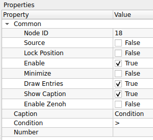
Operation
| Property | Default | คำอธิบาย |
|---|---|---|
| Condition | > |
ตัวดำเนินการเปรียบเทียบ (Operator): - > : มากกว่า (Greater than) - >= : มากกว่าหรือเท่ากับ (Greater than or equal) - < : น้อยกว่า (Less than) - <= : น้อยกว่าหรือเท่ากับ (Less than or equal) - = : เท่ากับ (Equal) - != : ไม่เท่ากับ (Not equal) |
| Number | 0 |
ค่าตัวเลขที่ใช้เป็นเกณฑ์ในการเปรียบเทียบ |
Use Case: การคัดกรองขนาดวัตถุ
หากคุณต้องการนับเฉพาะ "กล่องขนาดใหญ่" และตัด "เศษขยะชิ้นเล็กๆ" ทิ้ง
- นำค่า Area (พื้นที่) จากโหนด Connected Components มาเข้าโหนดนี้
- ตั้งค่า Condition เป็น
>(มากกว่า) - ตั้งค่า Number เป็น
500(ขนาดพิกเซลขั้นต่ำที่ต้องการ) - โหนดจะส่งผ่านข้อมูลเฉพาะวัตถุที่มีขนาดใหญ่กว่า 500 พิกเซลเท่านั้นไปสู่กระบวนการถัดไป
สัญลักษณ์ทางคณิตศาสตร์
>=และ<=: จะรวมค่าที่เท่ากันไปด้วย (Inclusive) เช่น>= 10คือเอาตั้งแต่เลข 10 ขึ้นไป>และ<: จะไม่เอาค่าที่เท่ากัน (Exclusive) เช่น> 10คือต้องเป็น 11 ขึ้นไป
- Sum Integer:

Sum Integer คือโหนดสำหรับการคำนวณหา ผลรวม (Summation) ของค่าตัวเลขจำนวนเต็ม (Integer) ที่รับเข้ามา โหนดนี้มักถูกใช้เพื่อรวมข้อมูลตัวเลขจากหลายส่วนเข้าด้วยกัน เช่น การรวมจำนวนวัตถุที่ตรวจจับได้จากกล้องหลายตัว หรือการรวมคะแนน (Score) จากเงื่อนไขต่างๆ
ตารางการตั้งค่า (Properties)

Common
| Property | Default | คำอธิบาย |
|---|---|---|
| Node ID | 19 |
เลขประจำตัวลำดับของโหนด |
| Caption | Sum Integer |
ชื่อโหนดที่แสดงผลบน Workspace |
(หมายเหตุ: โหนดนี้ไม่มีพารามิเตอร์ซับซ้อน จะทำงานโดยการนำค่าจาก Input Pin ทุกขาที่เชื่อมต่อเข้ามาบวกกัน แล้วส่งผลลัพธ์ออกไปทาง Output Pin)
Use Case: การรวมยอดจำนวนสินค้า
สมมติว่าคุณมีสายพานการผลิต 2 เส้น และใช้กล้อง 2 ตัวในการนับสินค้า:
- Camera 1 Process: นับสินค้าได้ค่า
Count A(Integer) - Camera 2 Process: นับสินค้าได้ค่า
Count B(Integer) - นำค่าจากทั้งสองส่วนมาต่อเข้ากับ Sum Integer
- ผลลัพธ์ที่ได้คือ
Total Count(A + B) เพื่อส่งไปแสดงผลบนหน้าจอ Dashboard หรือส่งข้อมูลผ่าน Zenoh ต่อไป
การใช้งานร่วมกับ Logic
โหนดนี้สามารถใช้รวมค่าจากโหนด Condition (ที่ส่งค่า 0 หรือ 1) ได้ เพื่อเช็คว่าผ่านเงื่อนไขครบกี่ข้อ เช่น: * เงื่อนไข A ผ่าน (1) + เงื่อนไข B ไม่ผ่าน (0) + เงื่อนไข C ผ่าน (1) -> Sum = 2
13. Number Operation (การจัดการตัวเลข)
การจัดการข้อมูลประเภทตัวเลขเฉพาะทาง

- Data Generator:

Data Generator คือโหนดสำหรับการสร้างข้อมูลจำลอง (Synthetic Data) เพื่อใช้ในการทดสอบระบบหรือตรวจสอบความถูกต้องของ Logic โดยไม่จำเป็นต้องเชื่อมต่อกับอุปกรณ์จริง ผู้ใช้สามารถกำหนดค่าตัวเลข ข้อความ หรือสัญญาณ Boolean ให้ส่งออกมาตามจังหวะเวลาที่ต้องการได้ นิยมใช้เพื่อจำลองสถานการณ์ต่างๆ (Simulation)
ตารางการตั้งค่า (Properties)
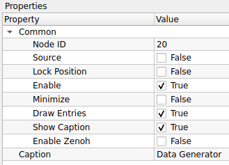
Common
| Property | Default | คำอธิบาย |
|---|---|---|
| Node ID | 20 |
เลขประจำตัวลำดับของโหนด |
| Caption | Data Generator |
ชื่อโหนดที่แสดงผลบน Workspace |
(หมายเหตุ: ปกติโหนดนี้จะมีส่วนตั้งค่า Operation หรือ Settings เพิ่มเติมด้านล่างเพื่อกำหนดชนิดข้อมูล (Data Type), ค่าที่ต้องการ (Value), หรือความถี่ในการส่งข้อมูล (Interval) หากมีข้อมูลส่วนนั้นสามารถแจ้งเพิ่มเติมเพื่อให้นำมาลงตารางได้ครับ)
Use Case: การจำลองสัญญาณ Trigger
หากคุณต้องการทดสอบระบบแจ้งเตือนเมื่อค่าเกินกำหนด แต่ไม่อยากรอให้เกิดเหตุการณ์จริง:
- ใช้ Data Generator สร้างตัวเลขจำลอง (เช่น สุ่มค่า 0-100 หรือวนลูปตัวเลข)
- ส่งค่าเข้าสู่โหนด Condition (เช่น ถ้าค่า > 80 ให้เป็น True)
- ตรวจสอบผลลัพธ์ที่ปลายทางว่าระบบแจ้งเตือนทำงานถูกต้องหรือไม่
การใช้งานร่วมกับ Loop
Data Generator มักถูกใช้คู่กับโหนด Delay หรือ Timer เพื่อสร้างจังหวะการส่งข้อมูลที่สม่ำเสมอ เหมือนกับการจำลองข้อมูลที่ส่งมาจากเซนเซอร์ IoT แบบ Real-time
- Scalar Operation:

Scalar Operation คือโหนดสำหรับการทำ การคำนวณทางคณิตศาสตร์และตรรกศาสตร์ ระหว่างตัวเลข 2 จำนวน (Scalar values) เพื่อสร้างค่าผลลัพธ์ใหม่ โหนดนี้มักใช้ในการปรับแต่งค่าพารามิเตอร์, การคำนวณ Offset, การเปรียบเทียบเงื่อนไข (เพื่อส่งค่า 0 หรือ 1), หรือการทำ Logic Gate พื้นฐาน
ตารางการตั้งค่า (Properties)
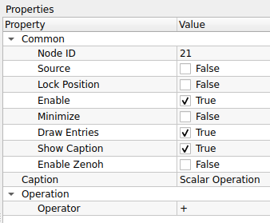
Common
| Property | Default | คำอธิบาย |
|---|---|---|
| Node ID | 21 |
เลขประจำตัวลำดับของโหนด |
| Caption | Scalar Operation |
ชื่อโหนดที่แสดงผลบน Workspace |
Operation
| Property | Default | คำอธิบาย |
|---|---|---|
| Operator | + |
เครื่องหมายการคำนวณที่ต้องการใช้งาน: คณิตศาสตร์ (Arithmetic): - +: บวก- -: ลบ- *: คูณ- /: หาร- MAX: เลือกค่าที่มากกว่า - MIN: เลือกค่าที่น้อยกว่า การเปรียบเทียบ (Comparison): (ผลลัพธ์เป็น 1=จริง, 0=เท็จ) - >: มากกว่า- >=: มากกว่าหรือเท่ากับ- <: น้อยกว่า- <=: น้อยกว่าหรือเท่ากับ- EQUAL: เท่ากับ ตรรกศาสตร์ (Logic): - AND: และ (True เมื่อทั้งคู่เป็นจริง) - OR: หรือ (True เมื่อตัวใดตัวหนึ่งเป็นจริง) - XOR: (Exclusive OR) True เมื่อค่าต่างกัน - NOR: ไม่-หรือ (ตรงข้ามกับ OR) - NAND: ไม่-และ (ตรงข้ามกับ AND) |
Use Case: ระบบแจ้งเตือนเมื่ออุณหภูมิสูงเกินกำหนด
สมมติคุณได้รับค่าอุณหภูมิจากเซนเซอร์ และต้องการส่งสัญญาณเตือนเมื่อเกิน 80 องศา
- Input A: รับค่าอุณหภูมิปัจจุบัน (เช่น 85)
- Input B: ตั้งค่าคงที่
80(Threshold) - เลือก Operator เป็น
>(มากกว่า) - ผลลัพธ์: หากอุณหภูมิ (85) > 80 โหนดจะส่งค่า
1(True) ออกไปสั่งงานแจ้งเตือน
MAX/MIN สำหรับการจำกัดค่า (Clamping)
คุณสามารถใช้โหนดนี้เพื่อจำกัดไม่ให้ค่าเกินขอบเขตที่ต้องการได้ เช่น:
* ใช้ MIN เทียบกับค่า 255 -> เพื่อให้มั่นใจว่าค่าที่ส่งออกไปจะไม่เกิน 255 (ป้องกัน Overflow)
* ใช้ MAX เทียบกับค่า 0 -> เพื่อให้มั่นใจว่าค่าจะไม่ติดลบ
- Sync Gate:

Sync Gate คือโหนดสำหรับการดำเนินการทางตรรกศาสตร์ (Logical Operations) เพื่อควบคุมเงื่อนไขการทำงานของระบบ โหนดนี้จะรับสัญญาณ Boolean (True/False) หรือสัญญาณ Trigger จากหลายแหล่ง และทำการเปรียบเทียบด้วยตรรกะที่กำหนด เช่น "ต้องมาครบทุกเงื่อนไข (AND)" หรือ "มาแค่เงื่อนไขเดียวก็ได้ (OR)" จึงจะส่งสัญญาณออกไป
ตารางการตั้งค่า (Properties)

Common
| Property | Default | คำอธิบาย |
|---|---|---|
| Node ID | 22 |
เลขประจำตัวลำดับของโหนด |
| Caption | Sync Gate |
ชื่อโหนดที่แสดงผลบน Workspace |
Operation
| Property | Default | คำอธิบาย |
|---|---|---|
| Operator | AND |
รูปแบบตรรกะที่ใช้ตรวจสอบเงื่อนไข: - EQUAL: (เท่ากัน) ส่งค่า True เมื่ออินพุตทุกขามีค่าเหมือนกัน (True หมด หรือ False หมด) - AND: (และ) ส่งค่า True เมื่ออินพุต ทุกขา เป็น True - OR: (หรือ) ส่งค่า True เมื่อมีอินพุต อย่างน้อย 1 ขา เป็น True - XOR: (Exclusive OR) ส่งค่า True เมื่ออินพุตมีค่าต่างกัน - NOR: (Not OR) ตรงข้ามกับ OR (ส่ง True เมื่อไม่มีขาไหนเป็น True เลย) - NAND: (Not AND) ตรงข้ามกับ AND (ส่ง True เมื่อมีบางขาเป็น False) - DIRECT: (Buffer) ส่งค่าตามอินพุตตรงๆ (ไม่กลับค่า) - DIRECT_NOT: (Inverter/NOT) กลับค่าสัญญาณ (True → False, False → True) |
Use Case: ระบบความปลอดภัยแบบ 2 ชั้น (Safety Interlock)
สมมติว่าคุณต้องการให้หุ่นยนต์ทำงาน ก็ต่อเมื่อ "กดปุ่ม Start" และ "ประตูเครื่องจักรปิดสนิท" เท่านั้น
- Input 1: รับสัญญาณจากปุ่ม Start (Button Pressed = True)
- Input 2: รับสัญญาณจากเซนเซอร์ประตู (Door Closed = True)
- นำสัญญาณทั้งสองมาเข้า Sync Gate
- ตั้งค่า Operator เป็น
AND - ผลลัพธ์: โหนดจะส่งสัญญาณให้หุ่นยนต์ทำงานก็ต่อเมื่อทั้งสองเงื่อนไขเป็นจริงพร้อมกัน หากประตูเปิดอยู่ (Input 2 = False) หุ่นยนต์จะไม่ทำงานแม้จะกดปุ่มก็ตาม
Sync Gate vs Scalar Operation
- Scalar Operation: เน้นการคำนวณค่าตัวเลข (บวกลบคูณหาร) หรือเปรียบเทียบค่าเดียว
- Sync Gate: เน้นการ รวมสัญญาณ (Signal Aggregation) จากหลายโหนดเพื่อตัดสินใจในขั้นตอนสุดท้าย (Decision Making) และมักรองรับอินพุตได้มากกว่า 2 ขา (Multi-input logic)
14. Output (การส่งออกผลลัพธ์)

- CV Image Display:

CV Image Display คือโหนดสำหรับการแสดงผลรูปภาพ (Visualization) ที่ผ่านการประมวลผลแล้ว โหนดนี้จะทำหน้าที่เป็นจุดสิ้นสุดของสายสัญญาณภาพ (Sink Node) เพื่อให้ผู้ใช้งานสามารถตรวจสอบผลลัพธ์สุดท้าย หรือดูภาพระหว่างขั้นตอนการ Debug ได้
ตารางการตั้งค่า (Properties)
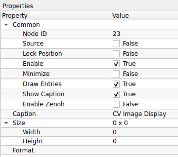
Common
| Property | Default | คำอธิบาย |
|---|---|---|
| Node ID | 23 |
เลขประจำตัวลำดับของโหนด |
| Caption | CV Image Display |
ชื่อโหนดที่แสดงผลบน Workspace |
Size (Read-Only)
(ส่วนนี้เป็นข้อมูลสำหรับอ่านอย่างเดียว จะอัปเดตอัตโนมัติตามภาพที่ส่งเข้ามา)
| Property | Value | คำอธิบาย |
|---|---|---|
| Width | 0 |
ความกว้างของภาพ (พิกเซล) |
| Height | 0 |
ความสูงของภาพ (พิกเซล) |
| Format | - |
รูปแบบของข้อมูลภาพ (เช่น RGB888, Grayscale, etc.) |
Use Case: การตรวจสอบผลลัพธ์
ในทุกๆ Workflow ของการประมวลผลภาพ มักจะจบด้วยโหนดนี้เสมอ:
- Read Image: อ่านภาพเข้ามา
- Processing: ผ่านโหนดต่างๆ (Blur -> Threshold -> Find Contours)
- CV Image Display: ต่อสายสุดท้ายเข้าโหนดนี้เพื่อดูว่าผลลัพธ์ถูกต้องหรือไม่
ทำไมค่า Width/Height เป็น 0?
หากคุณเห็นค่า Width หรือ Height เป็น 0 นั่นหมายความว่า ยังไม่มีข้อมูลภาพถูกส่งเข้ามาที่โหนดนี้
* โปรดตรวจสอบการเชื่อมสาย (Link) ว่าถูกต้องหรือไม่
* ตรวจสอบโหนดต้นทางว่ามีการทำงาน (Execute) แล้วหรือยัง
- CV Image Properties:

CV Image Properties คือโหนดสำหรับการอ่านและตรวจสอบคุณสมบัติทางเทคนิค (Metadata) ของภาพที่ได้รับเข้ามา เช่น ขนาด, จำนวนช่องสี, หรือรูปแบบการจัดเก็บข้อมูลในหน่วยความจำ โหนดนี้มีประโยชน์มากในการสร้างเงื่อนไขการทำงานแบบอัตโนมัติ (เช่น ถ้าภาพเป็นขาวดำให้ข้ามขั้นตอนแปลงสี) หรือใช้สำหรับการดีบัก (Debugging)
ตารางการตั้งค่า (Properties)
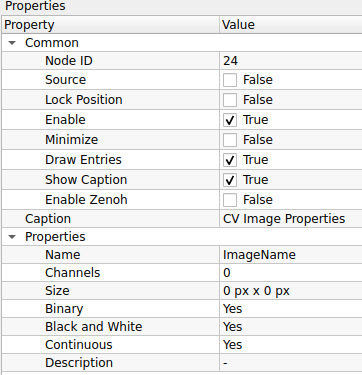
Common
| Property | Default | คำอธิบาย |
|---|---|---|
| Node ID | 24 |
เลขประจำตัวลำดับของโหนด |
| Caption | CV Image Properties |
ชื่อโหนดที่แสดงผลบน Workspace |
Properties (Read-Only Info)
(ส่วนนี้คือข้อมูลที่อ่านได้จากภาพขาเข้า ไม่ใช่การตั้งค่า)
| Property | Value | คำอธิบาย |
|---|---|---|
| Name | ImageName |
ชื่ออ้างอิงของภาพ (ถ้ามี) |
| Channels | 0 |
จำนวนช่องสัญญาณสี: - 1: ภาพขาวดำ (Grayscale) - 3: ภาพสี (BGR) - 4: ภาพสีพร้อมความโปร่งใส (BGRA) |
| Size | 0 px x 0 px |
ขนาดความกว้าง x ความสูง ของภาพ |
| Binary | Yes/No |
ตรวจสอบว่าภาพเป็น Binary (มีค่าแค่ 0 กับ 255) หรือไม่ |
| Black and White | Yes/No |
ตรวจสอบว่าภาพเป็นโทนขาวดำ (ไม่มีเฉดสี) หรือไม่ |
| Continuous | Yes/No |
(Technical) ข้อมูลพิกเซลถูกเก็บในหน่วยความจำแบบเรียงต่อกันยาวเป็นก้อนเดียวหรือไม่ (มีผลต่อความเร็วในการประมวลผลด้วย Pointer) |
| Description | - |
คำอธิบายเพิ่มเติม (ถ้ามี) |
Use Case: การตรวจสอบความสมบูรณ์ของข้อมูล (Validation)
ก่อนที่จะส่งภาพเข้าสู่ Deep Learning Model ที่ต้องการภาพสีขนาด 640x640 เท่านั้น คุณสามารถใช้โหนดนี้ดักจับ Error ได้:
- ส่งภาพเข้า CV Image Properties
- เช็คค่า Channels: ถ้าเท่ากับ 1 (Grayscale) -> สั่งให้แปลงเป็น BGR ก่อน
- เช็คค่า Size: ถ้าไม่ใช่ 640x640 -> สั่งให้ Resize
- ช่วยป้องกันโปรแกรมค้าง (Crash) จากการส่งข้อมูลผิดรูปแบบเข้าโมเดล
Continuous คืออะไร?
ค่า Continuous = Yes หมายความว่าข้อมูลภาพถูกเก็บใน RAM แบบเรียงต่อกันเป็นเส้นเดียว (ไม่มีช่องว่างท้ายบรรทัด) ซึ่งโหนดส่วนใหญ่ของ OpenCV จะทำงานได้เร็วกว่ามากเมื่อเจอภาพแบบนี้ แต่ถ้ามีการ Crop ภาพบางส่วนมา (ROI) ค่านี้อาจจะเป็น No ได้
- Info Display:

Info Display คือโหนดสำหรับการแสดงผลข้อมูลในรูปแบบ ข้อความ (Text) หรือ ตัวเลข (Numeric) บน Workspace ทำหน้าที่คล้ายกับหน้าต่าง Terminal หรือ Console Log เพื่อให้ผู้ใช้สามารถติดตามค่าความเป็นไปของระบบ ตรวจสอบผลลัพธ์ทางคณิตศาสตร์ หรือดูค่าพิกัดต่างๆ ได้ทันทีโดยไม่ต้องเปิดหน้าต่าง Debug แยก
ตารางการตั้งค่า (Properties)

Common
| Property | Default | คำอธิบาย |
|---|---|---|
| Node ID | 26 |
เลขประจำตัวลำดับของโหนด |
| Caption | Info Display |
ชื่อโหนดที่แสดงผลบน Workspace |
Settings
| Property | Default | คำอธิบาย |
|---|---|---|
| Max Line Count | 100 |
จำนวนบรรทัดสูงสุดที่ต้องการให้แสดงผลค้างไว้: - หากข้อมูลที่ส่งเข้ามามีจำนวนเกินกว่าค่านี้ ระบบจะเริ่มลบข้อมูลเก่าที่สุดออก (FIFO: First-In, First-Out) เพื่อประหยัดหน่วยความจำและทำให้หน้าจอไม่รกจนเกินไป |
Use Case: การตรวจสอบพิกัดวัตถุ (Debugging Coordinates)
หากคุณต้องการรู้ว่าจุดศูนย์กลางของวัตถุ (Centroid) ที่ตรวจจับได้อยู่ที่พิกัดเท่าไหร่:
- คำนวณหาตำแหน่งวัตถุ (จะได้ค่า X, Y)
- ส่งค่า X, Y นั้นเข้าสู่โหนด Info Display
- หน้าต่างโหนดจะแสดงค่าตัวเลขพิกัดไหลขึ้นมาเรื่อยๆ แบบ Real-time ทำให้คุณเห็นความเปลี่ยนแปลงได้ทันทีที่วัตถุขยับ
Image Display vs Info Display
- CV Image Display: ใช้ดู "รูปภาพ" (Visual check) เช่น ภาพเบลอไหม, ขอบชัดไหม
- Info Display: ใช้ดู "ค่าตัวเลข/ข้อมูล" (Data check) เช่น พื้นที่กี่พิกเซล, เจอวัตถุกี่ชิ้น, ค่า Threshold ปัจจุบันคือเท่าไหร่
- CV Video Writer:

CV Video Writer คือโหนดสำหรับการบันทึกภาพต่อเนื่อง (Stream) ให้เป็นไฟล์วิดีโอ (Video Recording) ลงบนหน่วยความจำของเครื่องคอมพิวเตอร์ ช่วยให้คุณสามารถเก็บผลลัพธ์การทำงานย้อนหลัง หรือบันทึกเหตุการณ์เฉพาะช่วงเวลาที่สนใจได้
ตารางการตั้งค่า (Properties)
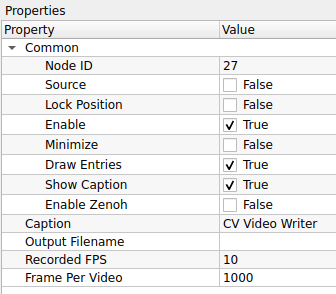
Common
| Property | Default | คำอธิบาย |
|---|---|---|
| Node ID | 27 |
เลขประจำตัวลำดับของโหนด |
| Caption | CV Video Writer |
ชื่อโหนดที่แสดงผลบน Workspace |
Settings
| Property | Default | คำอธิบาย |
|---|---|---|
| Output Filename | (ว่าง) | ชื่อไฟล์หรือเส้นทาง (Path) ที่ต้องการบันทึกไฟล์ (เช่น record.avi, D:/logs/video.mp4)ควรระบุนามสกุลไฟล์ด้วยเพื่อให้โปรแกรมเลือก Codec ได้ถูกต้อง |
| Recorded FPS | 10 |
(Frames Per Second) อัตราเฟรมเรตของวิดีโอผลลัพธ์ (ความเร็วในการเล่นกลับ) |
| Frame Per Video | 1000 |
จำนวนเฟรมสูงสุดต่อ 1 ไฟล์: - ใช้สำหรับ การตัดแบ่งไฟล์ (File Splitting) อัตโนมัติ - เมื่อบันทึกครบ 1000 เฟรม ระบบจะปิดไฟล์เดิมและสร้างไฟล์ใหม่ให้ทันที (ช่วยป้องกันไฟล์ใหญ่เกินไปหรือเสียหาย) |
Use Case: การบันทึกหลักฐานเมื่อเกิด Error
คุณอาจไม่ต้องการบันทึกวิดีโอตลอดเวลาเพื่อประหยัดพื้นที่ฮาร์ดดิสก์ แต่ต้องการบันทึกเฉพาะตอนเจอของเสีย:
- ใช้โหนด Condition ตรวจสอบว่าเจอของเสียหรือไม่
- ถ้าเจอของเสีย ให้ส่งสัญญาณ Trigger ไปสั่งเปิดการทำงานของ CV Video Writer (ผ่านขา Enable หรือ Flow Control)
- ตั้งค่า Frame Per Video ไว้พอประมาณ (เช่น 100-200 เฟรม) เพื่อเก็บภาพเหตุการณ์สั้นๆ นั้นไว้
Recorded FPS vs Real FPS
- Recorded FPS: คือการบอกไฟล์วิดีโอว่า "ให้เล่นภาพเร็วแค่ไหน" (Playback Speed)
- หากกล้องของคุณส่งภาพมาจริงที่ 30 FPS แต่คุณตั้ง Recorded FPS ไว้ที่
10: วิดีโอผลลัพธ์จะดูเหมือน Fast Forward (ภาพเคลื่อนไหวเร็ว) - หากกล้องส่งมา 5 FPS แต่ตั้งไว้
10: วิดีโอจะดูเหมือน Slow Motion - คำแนะนำ: ควรตั้งค่านี้ให้ใกล้เคียงกับความเร็วการประมวลผลจริงของระบบ
15. Source (แหล่งกำเนิดภาพ)
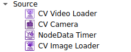
- CV Video Loader:

CV Video Loader คือโหนดสำหรับการโหลดและเล่นไฟล์วิดีโอ (Video Playback) เพื่อนำภาพจากวิดีโอมาประมวลผลต่อ เปรียบเสมือนการจำลองกล้องวิดีโอโดยใช้ไฟล์ข้อมูลที่มีอยู่แล้ว โหนดนี้มีประโยชน์อย่างมากในขั้นตอนการพัฒนา (Development) เพราะช่วยให้เราทดสอบอัลกอริทึมกับเหตุการณ์เดิมซ้ำๆ ได้จนกว่าจะพอใจ
ตารางการตั้งค่า (Properties)
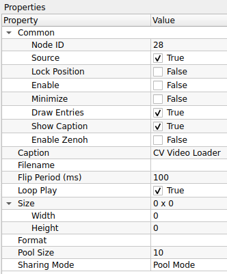
Common
| Property | Default | คำอธิบาย |
|---|---|---|
| Node ID | 28 |
เลขประจำตัวลำดับของโหนด |
| Source | True |
ระบุว่าโหนดนี้เป็นจุดเริ่มต้นของข้อมูล (Source Node) |
| Caption | CV Video Loader |
ชื่อโหนดที่แสดงผลบน Workspace |
Settings
| Property | Default | คำอธิบาย |
|---|---|---|
| Filename | (ว่าง) | เส้นทาง (Path) ของไฟล์วิดีโอที่ต้องการเปิด (เช่น D:/test_video.mp4) |
| Flip Period (ms) | 100 |
ระยะเวลาหน่วงระหว่างเฟรม (มิลลิวินาที): - ใช้ควบคุมความเร็วในการเล่น (Playback Speed) - 100 ms = ประมาณ 10 FPS (Frames Per Second) - 33 ms = ประมาณ 30 FPS |
| Loop Play | True |
การวนซ้ำ: - True: เมื่อเล่นจบไฟล์ จะกลับมาเริ่มต้นใหม่ทันที (เหมาะสำหรับเปิดทิ้งไว้เพื่อจูนค่า) - False: เล่นจบแล้วหยุดส่งภาพ |
Image Memory
| Property | Default | คำอธิบาย |
|---|---|---|
| Sharing Mode | Pool Mode |
โหมดการจัดการหน่วยความจำ (แนะนำ Pool Mode สำหรับวิดีโอ) |
| Pool Size | 10 |
จำนวน Buffer ที่จองไว้ (ค่า Default คือ 10 ซึ่งมากกว่าโหนดปกติ เพื่อให้การเล่นวิดีโอลื่นไหล) |
Size (Read-Only)
| Property | Value | คำอธิบาย |
|---|---|---|
| Width | 0 |
ความกว้างของวิดีโอต้นฉบับ |
| Height | 0 |
ความสูงของวิดีโอต้นฉบับ |
| Format | - |
รูปแบบข้อมูลภาพ |
Use Case: การจูนค่า Threshold ที่แม่นยำ
การจูนค่าตรวจจับวัตถุกับกล้องสดทำได้ยากเพราะวัตถุอาจเคลื่อนที่ผ่านไปเร็วมาก
- ใช้ CV Video Writer บันทึกเหตุการณ์ตอนวัตถุผ่านหน้ากล้องเก็บไว้ก่อน
- เปลี่ยนมาใช้ CV Video Loader เปิดไฟล์วิดีโอนั้น
- เปิด Loop Play = True
- คุณจะเห็นภาพวัตถุวิ่งผ่านซ้ำๆ ไปมา ทำให้มีเวลาปรับจูนค่า Threshold หรือ Color Range ได้อย่างละเอียดจนกว่าจะจับวัตถุได้แม่นยำที่สุด
คำนวณ Flip Period อย่างไร?
สูตรคือ: $1000 \div \text{FPS ที่ต้องการ} = \text{Flip Period}$
- ต้องการ 10 FPS -> ใส่ค่า 100
- ต้องการ 30 FPS -> ใส่ค่า 33
- ต้องการ 60 FPS -> ใส่ค่า 16
- CV Camera:

CV Camera คือโหนดสำหรับการเชื่อมต่อและรับภาพจากอุปกรณ์กล้อง (Camera Device) ที่เชื่อมต่ออยู่กับคอมพิวเตอร์ เช่น Web Camera หรือ Industrial Camera ผ่านพอร์ต USB/CSI โหนดนี้มีความสามารถในการควบคุมฮาร์ดแวร์ของกล้องโดยตรง เช่น การล็อคค่าแสง (Exposure) หรือการปรับสมดุลแสงขาว (White Balance) ซึ่งเป็นสิ่งจำเป็นเพื่อให้ได้คุณภาพของภาพที่สม่ำเสมอในการประมวลผล
ตารางการตั้งค่า (Properties)
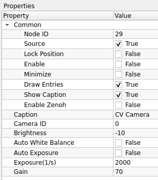
Common
| Property | Default | คำอธิบาย |
|---|---|---|
| Node ID | 29 |
เลขประจำตัวลำดับของโหนด |
| Source | True |
ระบุว่าโหนดนี้เป็นจุดเริ่มต้นของข้อมูล (Source Node) |
| Caption | CV Camera |
ชื่อโหนดที่แสดงผลบน Workspace |
Camera Settings
| Property | Default | คำอธิบาย |
|---|---|---|
| Camera ID | 0 |
ดัชนีของกล้อง (Index) ที่ต้องการเชื่อมต่อ: - 0: กล้องตัวแรก (Default) - 1, 2, 3, 4: กล้องตัวถัดไปที่เชื่อมต่อเพิ่มเข้ามา |
| Brightness | -10 |
การชดเชยความสว่างของภาพ (ค่าขึ้นอยู่กับ Driver ของกล้องแต่ละรุ่น) |
| Auto White Balance | False |
ระบบปรับสมดุลแสงขาวอัตโนมัติ: - False: ล็อคค่าสีไว้ (แนะนำสำหรับงานตรวจจับสี เพื่อไม่ให้สีเพี้ยนเมื่อสภาพแสงเปลี่ยน) - True: ให้กล้องปรับสีเองตามธรรมชาติ |
| Auto Exposure | False |
ระบบปรับความสว่างอัตโนมัติ: - False: (แนะนำ) ล็อคค่าแสงไว้ ใช้คู่กับค่า Exposure ด้านล่าง - True: กล้องจะปรับแสงเอง (อาจทำให้ภาพวูบวาบเมื่อมีวัตถุผ่านหน้ากล้อง) |
| Exposure (1/s) | 2000 |
ความเร็วชัตเตอร์ (Shutter Speed) หรือเวลาในการรับแสง: - ค่านี้มักจะเป็นตัวหาร (เช่น 2000 = 1/2000 วินาที) หรือค่า Raw Value - ค่ายิ่งมาก = ภาพมืดลงแต่จับภาพวัตถุเคลื่อนที่ได้หยุดนิ่งขึ้น (ลด Motion Blur) |
| Gain | 70 |
อัตราการขยายสัญญาณดิจิทัล: - ใช้เพิ่มความสว่างเมื่อปรับ Exposure สูงๆ แล้วภาพมืดเกินไป - ข้อควรระวัง: ยิ่ง Gain เยอะ ภาพจะยิ่งมีจุดรบกวน (Noise/Grain) เยอะขึ้น |
Use Case: การตั้งค่ากล้องสำหรับสายพานการผลิต
หากคุณต้องตรวจจับวัตถุที่วิ่งบนสายพานด้วยความเร็ว:
- ปิด Auto Exposure (False): เพื่อป้องกันไม่ให้ความสว่างเปลี่ยนไปมาเมื่อวัตถุสีขาว/ดำวิ่งผ่าน
- ปรับ Exposure ให้สูง (เช่น 2000+): เพื่อลดอาการ "ภาพเบลอ" (Motion Blur) ขณะวัตถุเคลื่อนที่
- เพิ่ม Gain: หากปรับ Exposure แล้วภาพมืดเกินไป ให้ค่อยๆ ดันค่า Gain ขึ้นจนสว่างพอเห็นรายละเอียด
- ปิด Auto White Balance: เพื่อให้ค่าสี (Hue/Saturation) ของวัตถุคงที่ตลอดเวลา ง่ายต่อการเขียนเงื่อนไขแยกสี
Camera ID หาอย่างไร?
หากเสียบกล้องแล้วภาพไม่ขึ้น ลองเปลี่ยน Camera ID เป็น 1 หรือ 2 ดูครับ ระบบปฏิบัติการ (Windows/Linux) อาจมองกล้อง Webcam ที่ติดมากับเครื่องเป็นเบอร์ 0 และกล้อง USB ใหม่เป็นเบอร์ 1
- NodeData Timer:

NodeData Timer คือโหนดประเภท Source ที่ทำหน้าที่เป็นตัวกำเนิดจังหวะเวลา (Timer Source) เพื่อส่งสัญญาณ Trigger ออกมาเป็นคาบเวลาที่แน่นอน โหนดนี้มักถูกนำมาใช้เมื่อต้องการให้ระบบทำงานเป็นรอบๆ อย่างสม่ำเสมอ (Periodic Execution) หรือใช้กำหนดจังหวะในการส่งข้อมูล Node Data ไปยังเครือข่ายภายนอก
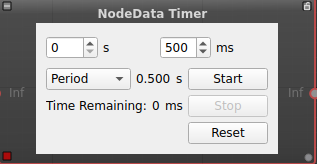
- การตั้งค่าเวลา (Time Settings):
s(Seconds): ช่องสำหรับใส่จำนวนวินาที (ในภาพ = 0)ms(Milliseconds): ช่องสำหรับใส่จำนวนมิลลิวินาที (ในภาพ = 500)-
ผลรวมเวลา: ระบบจะนำค่าทั้งสองมารวมกัน เช่น 0s + 500ms = 0.500 วินาที (หรือ 500ms) ซึ่งจะเป็นระยะห่างระหว่างการ Trigger แต่ละครั้ง
-
โหมดการทำงาน (Operation Mode):
- Period: (ตามภาพ) หมายถึง แบบทำซ้ำ (Loop) เมื่อเวลาหมดลง จะส่งสัญญาณ Trigger แล้วเริ่มนับถอยหลังใหม่ทันที วนไปเรื่อยๆ (เหมาะสำหรับทำ Heartbeat หรือ Polling)
- (Single Shot): (ถ้ามีตัวเลือกนี้) หมายถึง ทำครั้งเดียว เมื่อนับถอยหลังจบ จะส่งสัญญาณ Trigger ครั้งเดียวแล้วหยุด
-
ปุ่มควบคุม (Control Buttons):
- Start: สั่งเริ่มจับเวลา
- Stop: สั่งหยุดเวลาชั่วคราว
- Reset: รีเซ็ตเวลาให้กลับมาเริ่มต้นใหม่และหยุดการทำงาน
-
สถานะ (Status):
- Time Remaining: แสดงเวลาที่เหลืออยู่ในการนับถอยหลังรอบปัจจุบัน (หน่วยเป็น ms)
ตารางการตั้งค่า (Properties)

Common
| Property | Default | คำอธิบาย |
|---|---|---|
| Node ID | 30 |
เลขประจำตัวลำดับของโหนด |
| Source | True |
ระบุว่าโหนดนี้เป็นจุดเริ่มต้นของข้อมูล (Source Node) |
| Enable | False |
เปิด/ปิด การทำงานของ Timer (ในภาพเป็น False ต้องติ๊กถูกเพื่อให้เริ่มนับเวลา) |
| Caption | NodeData Timer |
ชื่อโหนดที่แสดงผลบน Workspace |
| Enable Zenoh | False |
เปิด/ปิด การส่งข้อมูลผ่านโปรโตคอล Zenoh (สำหรับการเชื่อมต่อ IoT หรือ Dashboard ภายนอก) |
Use Case: การสร้าง Heartbeat ให้ระบบ
ในบางระบบที่ไม่มีกล้อง (Camera) คอยส่งภาพมาขับเคลื่อน Loop การทำงาน คุณสามารถใช้ NodeData Timer เป็นตัวขับเคลื่อนแทนได้:
- ตั้งค่า Timer ให้ทำงานทุกๆ 1000ms (1 วินาที)
- ส่งสัญญาณไปเข้าโหนด Data Generator หรือ Status Check
- ระบบจะทำการตรวจสอบสถานะทุกๆ 1 วินาที โดยอัตโนมัติ (Polling System)
Source Node คืออะไร?
สังเกตที่ช่อง Source ถูกติ๊กถูก (True) หมายความว่าโหนดนี้สามารถทำงานได้ด้วยตัวเองโดยไม่ต้องรอสัญญาณ Input จากใคร เปรียบเสมือนหัวขบวนรถไฟที่ลากโหนดอื่นๆ ให้ทำงานตาม
- CV Image Loader:

CV Image Loader คือโหนดสำหรับอ่านไฟล์รูปภาพจากหน่วยความจำเครื่องคอมพิวเตอร์เพื่อนำมาประมวลผล สามารถใช้งานได้ 2 รูปแบบ คือโหลดภาพนิ่งเพียงภาพเดียว หรือโหลดภาพทั้งหมดในโฟลเดอร์ (Directory) แล้วนำมาแสดงผลวนลูปเป็นลำดับ (Sequence) เพื่อจำลองสถานการณ์เหมือนรับภาพจากกล้อง

Component,Icon,คำอธิบาย
Path Input,(ช่องข้อความ),ช่องสำหรับระบุหรือแสดงเส้นทางไฟล์ (File Path) ของภาพหรือโฟลเดอร์ที่กำลังโหลดอยู่
Previous / Reset,,<<
Load / Browse,⏏,ปุ่มเลือกไฟล์:- เปิดหน้าต่าง File Explorer เพื่อเลือกไฟล์ภาพหรือโฟลเดอร์ใหม่ที่ต้องการนำเข้ามาใช้งาน
Play / Pause,▶,ปุ่มเล่นอัตโนมัติ:- สีเหลือง (Active): กำลังเล่น (ส่งภาพออกมาต่อเนื่องตามเวลาที่กำหนด)- สีเทา (Inactive): หยุดชั่วคราว (Pause)
Next / Step,>>,
ตารางการตั้งค่า (Properties)
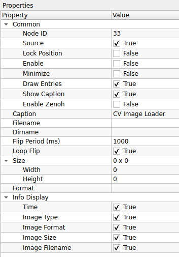
Common
| Property | Default | คำอธิบาย |
|---|---|---|
| Node ID | 33 |
เลขประจำตัวลำดับของโหนด |
| Source | True |
ระบุว่าโหนดนี้เป็นจุดเริ่มต้นของข้อมูล (Source Node) |
| Caption | CV Image Loader |
ชื่อโหนดที่แสดงผลบน Workspace |
Settings
| Property | Default | คำอธิบาย |
|---|---|---|
| Filename | (ว่าง) | เส้นทางไฟล์ (Path) สำหรับกรณีต้องการโหลด ภาพเดียว (เช่น D:/images/sample.jpg) |
| Dirname | (ว่าง) | เส้นทางโฟลเดอร์ (Path) สำหรับกรณีต้องการโหลด ทั้งโฟลเดอร์ (Sequence) |
| Flip Period (ms) | 1000 |
ระยะเวลาหน่วงก่อนเปลี่ยนภาพถัดไป (เฉพาะกรณีใช้ Dirname): - 1000 ms: เปลี่ยนภาพทุก 1 วินาที - 0: เปลี่ยนภาพเร็วที่สุดเท่าที่เป็นไปได้ |
| Loop Flip | True |
การวนซ้ำ (เฉพาะกรณีใช้ Dirname): - True: เมื่อแสดงครบทุกภาพในโฟลเดอร์ จะวนกลับมาเริ่มภาพแรกใหม่ - False: หยุดเมื่อครบทุกภาพ |
Info Display
(เลือกข้อมูลที่จะแสดงผลบนตัวโหนดใน Workspace)
| Property | Default | คำอธิบาย |
|---|---|---|
| Time | True |
แสดงเวลาปัจจุบัน |
| Image Type | True |
แสดงชนิดของภาพ (เช่น BGR, Grayscale) |
| Image Format | True |
แสดงรูปแบบไฟล์ (เช่น .jpg, .png) |
| Image Size | True |
แสดงขนาดความกว้าง x สูง ของภาพ |
| Image Filename | True |
แสดงชื่อไฟล์ภาพที่กำลังถูกโหลดอยู่ ณ ขณะนั้น |
Use Case: การทดสอบ Dataset (Good/NG)
หากคุณมีภาพตัวอย่างสินค้าดี (Good) และสินค้าเสีย (NG) เก็บแยกไว้ในโฟลเดอร์ เพื่อทดสอบความแม่นยำของ AI:
- เลือกช่อง Dirname แล้วชี้ไปที่โฟลเดอร์เก็บภาพ
D:/Dataset/Test_Images - ตั้งค่า Flip Period เป็น
2000(2 วินาที) เพื่อให้มีเวลาสังเกตผลลัพธ์ของแต่ละภาพ - ระบบจะทยอยส่งภาพในโฟลเดอร์ออกมาทีละภาพ วนไปเรื่อยๆ ช่วยให้คุณตรวจสอบได้ว่าอัลกอริทึมทำงานถูกต้องกับทุกเคสหรือไม่ โดยไม่ต้องมานั่งกดเปลี่ยนรูปเอง
Filename vs Dirname
- หากระบุ Filename: ระบบจะโหลดภาพนั้นภาพเดียวและส่งออกมาตลอดเวลา (ภาพนิ่ง)
- หากระบุ Dirname: ระบบจะเล่นภาพทั้งหมดในโฟลเดอร์นั้นวนไปเรื่อยๆ (สไลด์โชว์)
- แนะนำให้ล้างค่าในช่อง Filename ออกก่อน หากต้องการใช้งาน Dirname
16. Template Category
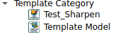
- Test_Sharpen:

Test_Sharpen คือโหนดสำหรับการปรับปรุงภาพ (Image Enhancement) ด้วยเทคนิค Sharpening ทำหน้าที่เน้นเส้นขอบและรายละเอียดของวัตถุให้ดูคมชัดขึ้น เหมาะสำหรับแก้ไขภาพที่เบลอเล็กน้อย หรือใช้เตรียมภาพก่อนส่งเข้าสู่กระบวนการที่ต้องการความแม่นยำของขอบสูง เช่น การอ่านตัวอักษร (OCR) หรือการตรวจจับบาร์โค้ด
ตารางการตั้งค่า (Properties)

Common
| Property | Default | คำอธิบาย |
|---|---|---|
| Node ID | 34 |
เลขประจำตัวลำดับของโหนด |
| Source | False |
โหนดนี้ไม่ใช่ Source Node (ต้องรับภาพเข้ามาประมวลผล) |
| Caption | Test_Sharpen |
ชื่อโหนดที่แสดงผลบน Workspace |
(รอข้อมูลเพิ่มเติมส่วน Operation/Settings เช่น Kernel Size, Strength)
Use Case: การเตรียมภาพสำหรับอ่านตัวอักษร (OCR Pre-processing)
หากกล้องจับภาพฉลากสินค้าได้ แต่ตัวหนังสือดูฟุ้งๆ หรือเบลอเล็กน้อย ทำให้โหนด OCR อ่านค่าผิดพลาด
- ส่งภาพจากกล้องเข้าสู่โหนด Test_Sharpen
- อัลกอริทึมจะช่วยเพิ่ม Contrast บริเวณขอบตัวอักษรให้ตัดกับพื้นหลังมากขึ้น
- ส่งภาพที่คมชัดแล้วไปเข้าโหนด OCR หรือ Barcode Reader จะช่วยเพิ่มความแม่นยำในการอ่านได้สูงขึ้น
Sharpening คืออะไร?
หลักการพื้นฐานคือการนำภาพเดิมไปลบด้วยภาพที่เบลอ (Unsharp Masking) หรือการใช้ Filter (เช่น Laplacian) เพื่อหาจุดที่มีการเปลี่ยนแปลงความเข้มแสงสูงๆ (ขอบ) แล้วเพิ่มน้ำหนักสีตรงนั้นเข้าไป ทำให้ภาพดู "เด้ง" หรือคมขึ้นด้วยตาเปล่า
- Template Model:

Template Model คือโหนดต้นแบบที่ใช้สำหรับการทดสอบหรือสาธิตการสร้างส่วนติดต่อผู้ใช้ (GUI Controls) ภายในระบบ ประกอบไปด้วยตัวอย่างการรับค่ารูปแบบต่างๆ เช่น การเลือกรายการ (ComboBox), การป้อนตัวเลข (SpinBox), การติ๊กเลือก (CheckBox), และการกำหนดขนาด/พิกัด (Size/Point) มักใช้เป็น Reference สำหรับนักพัฒนาที่ต้องการเขียน Plugin หรือ Custom Node ใหม่

Template Model คือโหนดต้นแบบสำหรับการสาธิต (Demo Node) ที่รวบรวมฟังก์ชันการทำงานพื้นฐานของระบบไว้ในที่เดียว ทั้งการรับค่าผ่าน UI, การกดปุ่มสั่งงาน, และการรับ-ส่งข้อมูลผ่านพอร์ตต่างๆ เหมาะสำหรับนักพัฒนาที่ต้องการศึกษาโครงสร้างการทำงานของโหนด หรือใช้ทดสอบการเชื่อมต่อสัญญาณ (Signal Flow)
ตารางการตั้งค่า (Properties)
Common
| Property | Default | คำอธิบาย |
|---|---|---|
| Node ID | 35 |
เลขประจำตัวลำดับของโหนด |
| Caption | Template Model |
ชื่อโหนดที่แสดงผลบน Workspace |
On-Node Controls (ส่วนควบคุมบนตัวโหนด)
(อ้างอิงจากภาพหน้าตาโหนดสีเทา)
| Control | Type | คำอธิบาย |
|---|---|---|
| ComboBox | Dropdown | ตัวเลือกรายการแบบดึงลง (ในภาพเลือกค่า 0) |
| SpinBox | Number | ช่องปรับค่าตัวเลขจำนวนเต็ม (ในภาพค่า 0) |
| Start | Button | ปุ่มสั่งเริ่มการทำงาน (Simulation Start) |
| Stop | Button | ปุ่มสั่งหยุดการทำงาน (Simulation Stop) |
| Send All Outputs | Button | ปุ่มสั่งให้ส่งข้อมูลออกไปทุกพอร์ตทันที (Force Trigger Output) |
I/O Ports (จุดเชื่อมต่อสายสัญญาณ)
(อ้างอิงจากจุดสีเขียวด้านข้างโหนด)
| Port | Type | Direction | คำอธิบาย |
|---|---|---|---|
| Mat | Matrix/Image | Input | รับข้อมูลภาพเข้ามา |
| Nbs | Number/Scalar | Input | รับข้อมูลตัวเลขเข้ามา |
| Mat | Matrix/Image | Output | ส่งข้อมูลภาพออกไป |
| Nbs | Number/Scalar | Output | ส่งข้อมูลตัวเลขออกไป |
| Inf | Info/Text | Output | ส่งข้อมูลสถานะหรือข้อความออกไป |
Use Case: การทดสอบการไหลของข้อมูล (Data Flow Testing)
เนื่องจากโหนดนี้มีทั้งปุ่มกดและพอร์ตครบทุกแบบ จึงเหมาะมากสำหรับการเช็คระบบ:
- กดปุ่ม "Send All Outputs": เพื่อทดสอบว่าโหนดปลายทาง (เช่น Display) ได้รับสัญญาณหรือไม่ โดยไม่ต้องรอ Input
- ปรับค่า SpinBox: เพื่อดูว่าค่าตัวเลขถูกส่งออกไปทางพอร์ต Nbs ถูกต้องหรือไม่
- Start/Stop: ใช้ทดสอบ Logic การทำงานของ State Machine ภายใน
ตารางการตั้งค่า (Properties)

| Property | Default | คำอธิบาย |
|---|---|---|
| Node ID | 35 |
เลขประจำตัวลำดับของโหนด |
| Caption | Template Model |
ชื่อโหนดที่แสดงผลบน Workspace |
Parameters (Demo Controls)
| Property | Default | คำอธิบาย |
|---|---|---|
| ComboBox | 0 |
ตัวอย่างการเลือกรายการแบบ Dropdown List |
| SpinBox | 0 |
(ในหมวด SubProp0) ตัวอย่างช่องป้อนตัวเลขจำนวนเต็ม |
| CheckBox | True |
(ในหมวด SubProp1) ตัวอย่างช่องติ๊กถูกเลือก (True/False) |
| Text | ComboBox |
(ในหมวด SubProp1) ตัวอย่างช่องป้อนข้อความ String |
Geometry (Size & Point)
| Property | Default | คำอธิบาย |
|---|---|---|
| Size | 1 x 1 |
ตัวอย่างข้อมูลประเภทขนาด (Width x Height) |
| Point | (7, 7) |
ตัวอย่างข้อมูลประเภทพิกัด (X, Y) |
Use Case: สำหรับนักพัฒนา (Developer)
โหนดนี้อาจไม่ได้ใช้ในงานประมวลผลภาพจริง (Production) แต่มีประโยชน์มากสำหรับ:
- UI Testing: ตรวจสอบว่า Theme ของโปรแกรมแสดงผล Control ต่างๆ ได้ถูกต้องหรือไม่
- Plugin Development: นักพัฒนาสามารถดู Source Code ของโหนดนี้เพื่อเรียนรู้วิธีการประกาศ Property ประเภทต่างๆ (เช่น วิธีการสร้าง Sub-property หรือการจัดกลุ่มตัวแปร)
ข้อสังเกต
หากคุณเป็นผู้ใช้งานทั่วไป (End User) คุณสามารถข้ามโหนดนี้ไปได้เลยครับ เพราะมันไม่ได้มีฟังก์ชันการคำนวณทาง Image Processing ใดๆ
17. Utility (เครื่องมืออรรถประโยชน์)
เครื่องมือช่วยอำนวยความสะดวกในการทำงาน

- Combine Sync:

Combine Sync คือโหนดสำหรับการจัดจังหวะสัญญาณ (Synchronization) จากหลายแหล่งข้อมูลให้ตรงกันก่อนที่จะส่งต่อไปประมวลผล จุดเด่นคือความยืดหยุ่นที่ผู้ใช้สามารถกำหนดจำนวนช่องสัญญาณขาเข้า (Input Size) ได้ตามต้องการ โหนดนี้มักใช้ในกรณีที่ต้องรอรวบรวมข้อมูลจากกระบวนการย่อยหลายๆ ส่วนให้ครบถ้วน (Wait for all) หรือต้องการตรวจสอบเงื่อนไขจากหลายแหล่งพร้อมกัน
ส่วนควบคุมบนโหนด (On-Node Controls)
ส่วนนี้แสดงปุ่มและค่าต่างๆ ที่สามารถปรับได้ทันทีบนหน้าต่าง Workspace โดยไม่ต้องเข้าไปในเมนู Properties
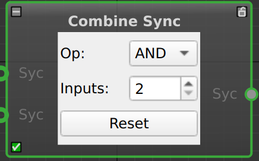
| Control | Type | คำอธิบาย |
|---|---|---|
| Op | Dropdown | ตัวเลือกเงื่อนไขตรรกะ (Logic Operator): - AND: รอสัญญาณครบทุกขา (Wait All) - OR: สัญญาณมาขาใดขาหนึ่งก็ทำงาน (Any) |
| Inputs | SpinBox | ช่องปรับจำนวนขา Input: - สามารถกดลูกศรขึ้น/ลง เพื่อเพิ่มหรือลดจำนวนพอร์ต Syc (สีเขียวด้านซ้าย) ได้ทันที |
| Reset | Button | ปุ่มรีเซ็ตสถานะ: - ใช้สำหรับเคลียร์ค่าสถานะการรอ (Pending Signals) ภายในโหนดให้กลับไปเป็นค่าเริ่มต้น |
| Port | Label | Type | Direction | คำอธิบาย |
|---|---|---|---|---|
| Input | Syc |
Sync Signal | Input (Left) | ช่องรับสัญญาณ Trigger (จำนวนจะเปลี่ยนไปตามค่า Inputs) |
| Output | Syc |
Sync Signal | Output (Right) | ช่องส่งสัญญาณ Trigger ออกไปเมื่อเงื่อนไขเป็นจริง |
ตารางการตั้งค่า (Properties)
การตั้งค่าละเอียดภายในโหนด (ซึ่งสัมพันธ์กับค่าบนหน้าโหนด)
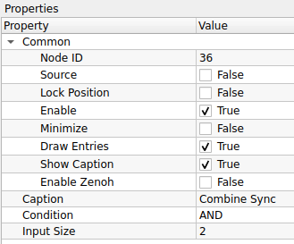
Common
| Property | Default | คำอธิบาย |
|---|---|---|
| Node ID | 36 |
เลขประจำตัวลำดับของโหนด |
| Caption | Combine Sync |
ชื่อโหนดที่แสดงผลบน Workspace |
Settings
| Property | Default | คำอธิบาย |
|---|---|---|
| Condition | AND |
เงื่อนไขการรวมสัญญาณ (ตรงกับค่า Op บนหน้าโหนด): - AND: (และ) โหมดรอครบ: รอให้สัญญาณเข้ามาครบทุกช่อง Input ที่กำหนดไว้ จึงจะส่งข้อมูลออกไป - OR: (หรือ) โหมดใครก็ได้: หากมีสัญญาณเข้ามาที่ช่องใดช่องหนึ่ง ก็จะส่งข้อมูลออกไปทันที |
| Input Size | 2 |
จำนวนช่องสัญญาณขาเข้า (ตรงกับค่า Inputs บนหน้าโหนด) |
Use Case: การรวมผลลัพธ์จากกล้อง 4 ตัว (Quality Control)
สมมติคุณมีกล้อง 4 ตัวถ่ายภาพสินค้าชิ้นเดียวกันจาก 4 มุมมอง และต้องการสรุปผลว่าสินค้าชิ้นนี้ "ผ่าน" หรือไม่
- ปรับค่า Inputs = 4 ที่หน้าโหนด (จะมีจุดต่อสาย Input ปรากฏขึ้น 4 จุด)
- ตั้งค่า Op = AND
- ลากสายสัญญาณผลลัพธ์ (OK/NG) จากกล้องทั้ง 4 ตัวมาเข้าที่โหนดนี้
- ผลลัพธ์: โหนดจะส่งสัญญาณ "ผ่าน (True)" ออกไป ก็ต่อเมื่อกล้อง ทั้ง 4 ตัว ส่งสัญญาณมาครบและยืนยันว่าผ่านทั้งหมด
ความสะดวกของการปรับหน้าโหนด
คุณสามารถเพิ่มจำนวนกล้องหรือเงื่อนไขได้ง่ายๆ เพียงแค่กดลูกศรที่ช่อง Inputs บนตัวโหนด สายเชื่อมต่อเดิมจะไม่หลุดหาย ทำให้การขยายระบบ (Scale up) ทำได้รวดเร็วมากครับ
- Not Sync:

Properties Panel คือหน้าต่างสำหรับการตั้งค่าคุณสมบัติของโหนด (Node Configuration) ทำหน้าที่แสดงและแก้ไขพารามิเตอร์ต่างๆ ของโหนดที่ถูกเลือกอยู่ในปัจจุบัน ช่วยให้ผู้ใช้สามารถปรับแต่งค่าตัวแปร, เปลี่ยนชื่อโหนด, หรือควบคุมสถานะการทำงานของโหนดนั้นๆ ได้แบบเรียลไทม์ (Real-time)
ตารางการตั้งค่า (Properties)
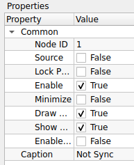
Common Settings
| Property | Value (Example) | คำอธิบาย |
|---|---|---|
| Node ID | 1 |
เลขประจำตัวลำดับของโหนด (Unique ID) ซึ่งระบบจะสร้างให้โดยอัตโนมัติ |
| Caption | Not Sync |
ชื่อของโหนดที่แสดงผลบน Workspace (สามารถแก้ไขเพื่อตั้งชื่อให้สื่อความหมายได้) |
| Enable | True (Checked) |
สถานะการทำงานของโหนด • ติ๊กถูก: เปิดใช้งานโหนดปกติ • ไม่ติ๊ก: ปิดการทำงาน (Bypass/Disable) |
| Minimize | False (Unchecked) |
การแสดงผลรูปทรงโหนด • ติ๊กถูก: ย่อโหนดให้เหลือแต่ส่วนหัว (Header) เพื่อประหยัดพื้นที่ • ไม่ติ๊ก: แสดงโหนดขนาดเต็ม |
| Lock Position | False (Unchecked) |
การล็อคตำแหน่งบน Workspace • ติ๊กถูก: ตรึงโหนดไว้กับที่ ไม่สามารถใช้เมาส์ลากย้ายได้ • ไม่ติ๊ก: สามารถลากย้ายตำแหน่งได้อิสระ |
Use Case: การจัดการ Workspace ที่ซับซ้อน
เมื่อ Flow การทำงานเริ่มมีขนาดใหญ่และมีโหนดจำนวนมาก:
- ใช้ Caption เพื่อเปลี่ยนชื่อโหนดจากชื่อ Default (เช่น Threshold_1) เป็นชื่อที่สื่อความหมาย (เช่น Main_Binarization)
- ใช้ Minimize กับโหนดที่ตั้งค่าเสร็จแล้วและไม่ค่อยได้แก้ เพื่อลดความรกของหน้าจอ
- ใช้ Lock Position กับโหนดหลัก (Main Nodes) เพื่อป้องกันการเผลอไปลากโดนจน Flow เสียรูปทรง
Real-time Update
การแก้ไขค่าในหน้าต่าง Properties จะมีผลทันทีโดยไม่ต้องกดปุ่ม Save หรือ Compile ใหม่ ทำให้เหมาะสำหรับการ Tuning ค่าพารามิเตอร์ต่างๆ ขณะที่โปรแกรมกำลังรันอยู่ (Runtime Adjustment)
- Timer:

Timer คือโหนดประเภท Source (ตัวกำเนิดสัญญาณ) ที่ทำหน้าที่ส่งข้อมูลหรือสัญญาณทริกเกอร์ออกมาตามช่วงเวลาที่กำหนดไว้ (Interval) นิยมใช้ในการสร้าง Loop การทำงาน, การสั่งถ่ายภาพจากกล้องทุกๆ วินาที, หรือการตรวจสอบสถานะระบบเป็นระยะๆ
ตารางการตั้งค่า (Properties)
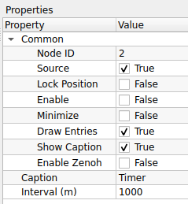
| Property | Default | คำอธิบาย |
|---|---|---|
| Node ID | 2 |
เลขประจำตัวลำดับของโหนด |
| Caption | Timer |
ชื่อโหนดที่แสดงผลบน Workspace |
| Source | True |
ระบุว่าโหนดนี้เป็นจุดเริ่มต้นของข้อมูล (ไม่ต้องการ Input จากใคร) |
| Interval (m) | 1000 |
ระยะเวลาในการส่งสัญญาณแต่ละครั้ง (หน่วยเป็นมิลลิวินาที) - 1000 = 1 วินาที - 500 = 0.5 วินาที |
หน่วยเวลา (m)
ในช่อง Interval (m) ตัว "m" นี้ย่อมาจาก Millisecond (มิลลิวินาที) ครับ
- หากต้องการตั้งเวลา 1 วินาที ให้ใส่ค่า
1000 - หากต้องการตั้งเวลา 5 วินาที ให้ใส่ค่า
5000
ระวังการตั้งค่าเร็วเกินไป
หากตั้งค่า Interval น้อยมากๆ (เช่น 10 หรือ 1 ms) อาจทำให้โหนดส่งข้อมูลออกมาถี่เกินไปจนเครื่องประมวลผลไม่ทัน (CPU Overload) แนะนำให้ตั้งค่าให้เหมาะสมกับความเร็วในการประมวลผลของระบบโดยรวมครับ
- CV Save Image:

CV Save Image คือโหนดสำหรับการบันทึกภาพ (Image Saving) ลงในหน่วยความจำถาวร (Hard Disk/SSD) รองรับการตั้งชื่อไฟล์แบบอัตโนมัติและการเลือกนามสกุลไฟล์ที่หลากหลาย นิยมใช้ในการเก็บรวบรวมข้อมูล (Data Collection) หรือการบันทึกภาพเหตุการณ์สำคัญ
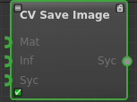
Visual Interface คือหน้าตาของโหนดที่ปรากฏบน Workspace ซึ่งแสดงจุดเชื่อมต่อ (Ports) สำหรับรับและส่งข้อมูล
ตารางจุดเชื่อมต่อ (Port Connections)
| Port Name | Type | Direction | คำอธิบาย |
|---|---|---|---|
| Mat | Image (Matrix) | Input (ซ้าย) | ช่องรับภาพที่ต้องการบันทึก (ต้องต่อสายนี้เสมอ ไม่งั้นไม่มีภาพให้บันทึก) |
| Inf | Info / Data | Input (ซ้าย) | ช่องรับข้อมูลเพิ่มเติม (มักใช้สำหรับส่งชื่อไฟล์แบบ Dynamic หรือ Metadata ถ้าไม่ต่อจะใช้ชื่อตามที่ตั้งใน Properties) |
| Syc | Sync / Signal | Input (ซ้าย) | ช่องรับสัญญาณสั่งงาน (ใช้ร่วมกับ Timer เพื่อสั่งให้บันทึกเป็นจังหวะ ถ้าไม่ต่อ โหนดอาจจะบันทึกทุกเฟรมที่เข้ามา) |
| Syc | Sync / Signal | Output (ขวา) | ช่องส่งสัญญาณบอกว่า "บันทึกเสร็จแล้ว" (ใช้ต่อพ่วงไปบอกโหนดถัดไปให้เริ่มทำงานต่อ) |
การต่อสายเพื่อบันทึกเป็นระยะ (Best Practice)
เพื่อไม่ให้ฮาร์ดดิสก์เต็มเร็วเกินไป แนะนำให้ต่อสายดังนี้:
- Timer Node (ช่อง Output) $\rightarrow$ CV Save Image (ช่อง
SycInput) - Camera/Image Node (ช่อง Output) $\rightarrow$ CV Save Image (ช่อง
MatInput)
ผลลัพธ์: ภาพจะถูกบันทึกเฉพาะตอนที่ Timer ส่งสัญญาณมาเท่านั้น (เช่น ทุก 1 วินาที) แทนที่จะบันทึกรัวๆ ครับ
ตารางการตั้งค่า (Properties)

| Property | Default | คำอธิบาย |
|---|---|---|
| Node ID | 3 |
เลขประจำตัวลำดับของโหนด |
| Caption | CV Save Image |
ชื่อโหนดที่แสดงผลบน Workspace |
| Saving Directory | ./ |
ที่อยู่โฟลเดอร์สำหรับเก็บไฟล์ - ./ หมายถึง โฟลเดอร์เดียวกับที่รันโปรแกรม (Current Directory)- สามารถระบุ Path เต็มได้ เช่น C:/MyImages/ |
| Prefix Filename | image |
คำนำหน้าชื่อไฟล์ (โปรแกรมมักจะเติมตัวเลขลำดับหรือเวลาต่อท้ายให้ เช่น image_001.png) |
| Image Format | png |
นามสกุลไฟล์ภาพ - png: ภาพคมชัด ไม่สูญเสียรายละเอียด (Lossless) แต่ไฟล์ใหญ่ - jpg/jpeg: ไฟล์เล็ก ประหยัดพื้นที่ แต่คุณภาพลดลงเล็กน้อย (Lossy) |
เลือก PNG หรือ JPG ดี?
- เลือก
pngเมื่อ: คุณต้องการนำภาพไป "วิเคราะห์ต่อ (Analysis)" เพราะค่าสีทุกพิกเซลจะเหมือนต้นฉบับเป๊ะๆ ไม่เพี้ยน - เลือก
jpgเมื่อ: คุณต้องการ "ความเร็ว (Speed)" หรือประหยัดพื้นที่ฮาร์ดดิสก์ เช่น การบันทึกภาพจากกล้องวงจรปิดตลอด 24 ชม.
ระวัง! พื้นที่เต็ม (Disk Space)
หากคุณต่อโหนดนี้เข้ากับกล้องวีดีโอที่ส่งภาพมา 30 เฟรมต่อวินาที (30 FPS) โปรแกรมจะ "บันทึกรัว 30 รูปทุกวินาที"
- ฮาร์ดดิสก์ของคุณอาจจะเต็มอย่างรวดเร็ว!
- ข้อแนะนำ: ควรใช้ร่วมกับโหนด Timer หรือตัว Logic อื่นๆ เพื่อสั่งให้บันทึกเป็นระยะๆ (เช่น ทุก 5 วินาที) แทนการบันทึกตลอดเวลา
Performance Tip
การเขียนไฟล์ลง Disk เป็นกระบวนการที่ช้า (I/O Operation)
- หากระบบของคุณต้องการความเร็วสูง (High Speed Real-time) การใส่โหนด Save Image ไว้อาจทำให้โปรแกรมโดยรวม "กระตุกหรือช้าลง" ได้
- แนะนำให้เลือกใช้ jpg หากต้องการความเร็วในการบันทึกที่มากกว่า png
- Info Concatenate:

Info Concatenate คือโหนดสำหรับการนำข้อมูลประเภทข้อความ (String/Text) หรือข้อมูลทั่วไป 2 ชุด มาเชื่อมต่อกันเป็นชุดเดียว (Join) นิยมใช้ในการสร้างข้อความแบบไดนามิก เช่น การสร้างชื่อไฟล์ที่ประกอบด้วย "ชื่อกล้อง" + "วันเวลา" หรือการรวมข้อมูล Sensor เพื่อส่งออกรายงาน

Visual Interface คือหน้าตาของโหนดบน Workspace ที่แสดงตำแหน่งการเชื่อมต่อสายข้อมูล
ตารางจุดเชื่อมต่อ (Port Connections)
| Port Name | Type | Direction | คำอธิบาย |
|---|---|---|---|
| Inf | Info / String | Input (ซ้ายบน) | ข้อมูลส่วนแรก (Prefix) (เช่น คำว่า "Camera1_") |
| Inf | Info / String | Input (ซ้ายกลาง) | ข้อมูลส่วนหลัง (Suffix) (เช่น ข้อมูลเวลา "12:00:00") |
| Syc | Sync / Signal | Input (ซ้ายล่าง) | ช่องรับสัญญาณกระตุ้น (ใช้สำหรับสั่งให้โหนดเริ่มทำงาน ณ จังหวะเวลาที่กำหนด) |
| Inf | Info / String | Output (ขวา) | ผลลัพธ์ข้อความที่รวมกันแล้ว (เช่น "Camera1_12:00:00" ส่งต่อไปยังโหนดอื่น) |
ลำดับการเชื่อมต่อ (Concatenation Order)
โปรแกรมจะนำข้อมูลมาต่อกันตามลำดับจาก "บนลงล่าง" เสมอ
- Input บน (Inf 1) + Input ล่าง (Inf 2) = Output
- หากคุณต้องการเปลี่ยนลำดับคำ (เช่น เอาเวลาขึ้นก่อน) ให้สลับสายที่เสียบเข้า Input ทั้งสองช่องครับ
ชนิดข้อมูล (Data Types)
แม้ช่องจะเขียนว่า Inf (Information) แต่โหนดนี้จะพยายามแปลงข้อมูลทุกอย่างที่ส่งเข้ามาให้เป็น "ข้อความ (String)" โดยอัตโนมัติ ดังนั้นคุณสามารถเอาตัวเลข (Int/Float) มาเสียบต่อกับข้อความได้เลยโดยไม่ต้องแปลงค่าก่อนครับ
ตารางการตั้งค่า (Properties)

| Property | Default | คำอธิบาย |
|---|---|---|
| Node ID | 4 |
เลขประจำตัวลำดับของโหนด |
| Caption | Info Concatenate |
ชื่อโหนดที่แสดงผลบน Workspace |
| (ไม่มีการตั้งค่าเพิ่มเติม) | - | โหนดนี้ทำงานโดยรับ Input เข้ามาและส่ง Output ออกไปโดยตรง ไม่มีการปรับจูนค่าภายใน |
Use Case: การตั้งชื่อไฟล์ภาพอัตโนมัติ
หากคุณใช้โหนดนี้ร่วมกับ CV Save Image:
- Input 1: รับค่า "Cam1_" (ข้อความตายตัว)
- Input 2: รับค่าจากโหนด Timer หรือ Clock (เช่น "12-30-55")
- Process: โหนดจะรวมร่างกันเป็น "Cam1_12-30-55"
- Output: ส่งไปเข้าช่อง
Infของโหนด CV Save Image เพื่อใช้เป็นชื่อไฟล์
ลำดับการต่อสาย
เนื่องจากโหนดนี้ไม่มีตัวเลือกให้สลับตำแหน่งข้อมูล
- โปรแกรมมักจะยึดตามลำดับของ Port Input (บน/ล่าง) เป็นหลัก
- ควรตรวจสอบให้แน่ใจว่าคุณต่อสายข้อมูลส่วนหน้า (Prefix) และส่วนหลัง (Suffix) เข้าถูกช่อง เพื่อให้ข้อความเรียงกันถูกต้อง
- Call External Command:

Call External Command คือโหนดสำหรับการสั่งรันโปรแกรมภายนอก, สคริปต์, หรือคำสั่ง Command Line (Shell/Terminal) จากภายในตัวระบบ Flow ช่วยให้สามารถขยายขีดความสามารถของโปรแกรมด้วยการเชื่อมต่อกับระบบปฏิบัติการหรือภาษาโปรแกรมอื่นๆ ได้
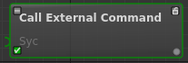
Visual Interface คือหน้าตาของโหนดบน Workspace ที่แสดงตำแหน่งการเชื่อมต่อสายสัญญาณ
ตารางจุดเชื่อมต่อ (Port Connections)
| Port Name | Type | Direction | คำอธิบาย |
|---|---|---|---|
| Syc | Sync / Signal | Input (ซ้าย) | ช่องรับสัญญาณกระตุ้น (เมื่อมีสัญญาณเข้ามา โหนดจะเริ่มรันคำสั่งภายนอกทันที) |
| (Output) | Sync / Signal | Output (ขวา) | ช่องส่งสัญญาณบอกว่า "รันคำสั่งเสร็จแล้ว" (จุดสีเทาทางขวา จะส่งสัญญาณออกไปเมื่อคำสั่ง External Command ทำงานจบ) |
การทำงานแบบ Synchronous (Blocking)
โหนดนี้ทำงานแบบ "รอจนเสร็จ" ครับ
- สัญญาณเข้าช่อง Syc (Input)
- ระบบรันคำสั่งภายนอก (เช่น รัน Script Python)
- ...ระบบจะหยุดรอ (Wait)... จนกว่า Script นั้นจะทำงานเสร็จ
- สัญญาณจึงจะออกจากช่อง Output ไปยังโหนดถัดไป
ดังนั้น: หากคำสั่งภายนอกใช้เวลานาน (เช่น 1 นาที) โปรแกรม Flow ของคุณก็จะหยุดค้างรอ 1 นาทีเช่นกันครับ
การนำไปใช้งาน
เหมาะสำหรับใช้ "สั่งงาน" เมื่อเกิดเหตุการณ์บางอย่าง เช่น:
- เมื่อตรวจเจอผู้บุกรุก: ส่งสัญญาณจากโหนด Detect ไปเข้า
Sycของโหนดนี้ เพื่อรันสคริปต์แจ้งเตือน Line Notify หรือเปิดไซเรน - เมื่อจบกระบวนการ: รันสคริปต์ Cleanup หรืออัปโหลด Log ขึ้น Server
ตารางการตั้งค่า (Properties)
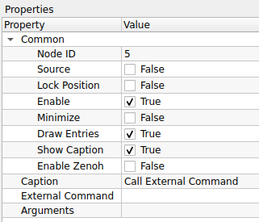
| Property | Default | คำอธิบาย |
|---|---|---|
| Node ID | 5 |
เลขประจำตัวลำดับของโหนด |
| Caption | Call External Command |
ชื่อโหนดที่แสดงผลบน Workspace |
| External Command | (ว่าง) | คำสั่งหลักหรือโปรแกรมที่ต้องการเรียกใช้งาน (เช่น python3, bash, cmd, หรือ Path เต็มของโปรแกรม .exe) |
| Arguments | (ว่าง) | พารามิเตอร์หรือตัวแปรที่จะส่งต่อให้คำสั่งนั้น (เช่น ชื่อไฟล์สคริปต์ main.py หรือออปชัน --verbose) |
Use Case: การเรียกใช้ Python Script
หากคุณต้องการให้โหนดนี้รันโค้ด Python AI ที่คุณเขียนเองแยกต่างหาก:
- External Command:
/usr/bin/python3(ระบุตัวรัน) - Arguments:
/home/pi/my_ai_script.py(ระบุไฟล์สคริปต์)
ผลลัพธ์: เมื่อสัญญาณวิ่งมาถึงโหนดนี้ ระบบจะไปปลุก Python ให้รันสคริปต์ดังกล่าวทันที
ข้อควรระวัง (Best Practices)
- Full Path: ควรใช้ที่อยู่ไฟล์แบบเต็มเสมอ (Absolute Path) เช่น
C:/MyProject/run.exeแทนการใช้แค่run.exeเพื่อกันปัญหาหาไฟล์ไม่เจอ - Blocking: โดยปกติการเรียกคำสั่งภายนอกจะทำให้ระบบหลัก "ค้างรอ (Block)" จนกว่าคำสั่งนั้นจะทำเสร็จ หากสคริปต์คุณใช้เวลาทำงานนาน (เช่น 10 วินาที) โปรแกรมหลักก็จะค้างไป 10 วินาทีเช่นกัน
18. cv::Mat Operations (การจัดการข้อมูล Matrix)
การจัดการข้อมูลดิบของภาพ (OpenCV Matrix)